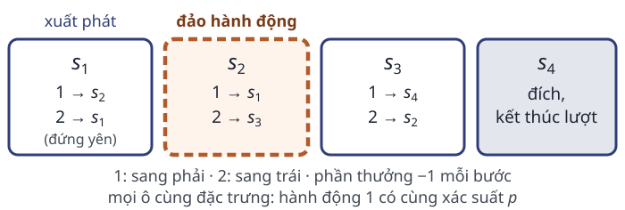
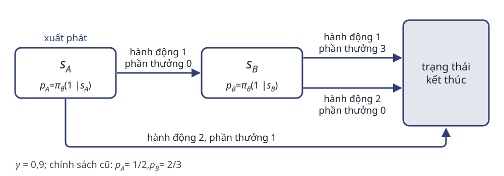
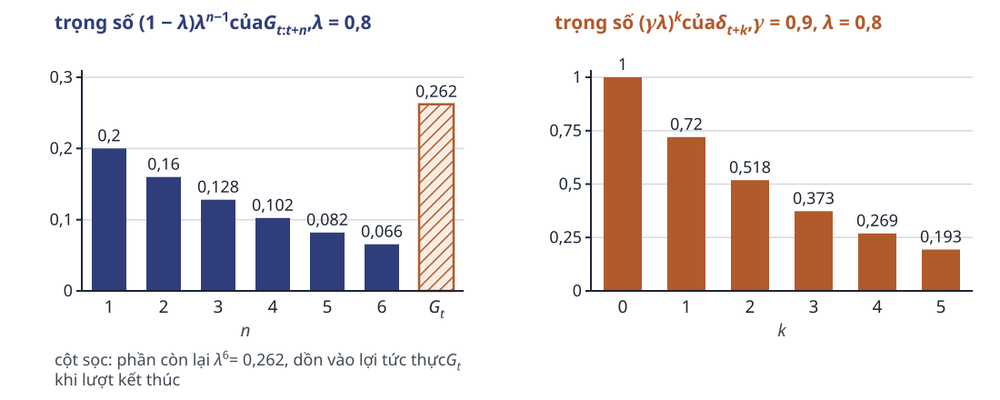
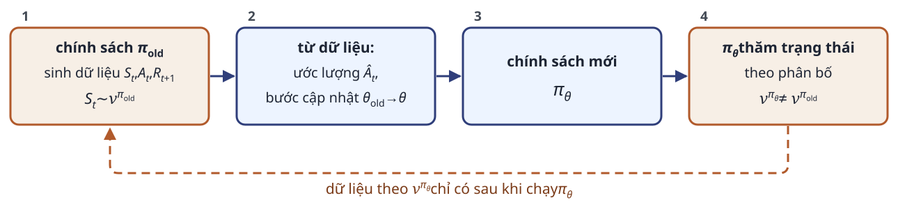
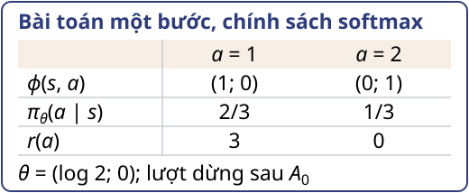
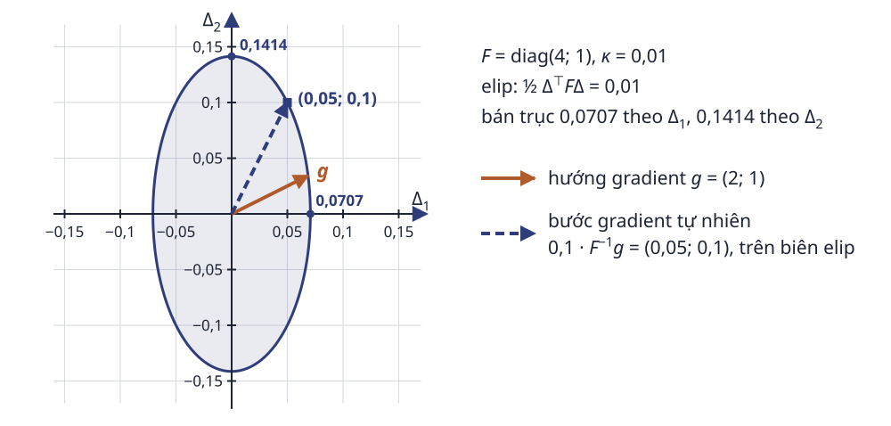
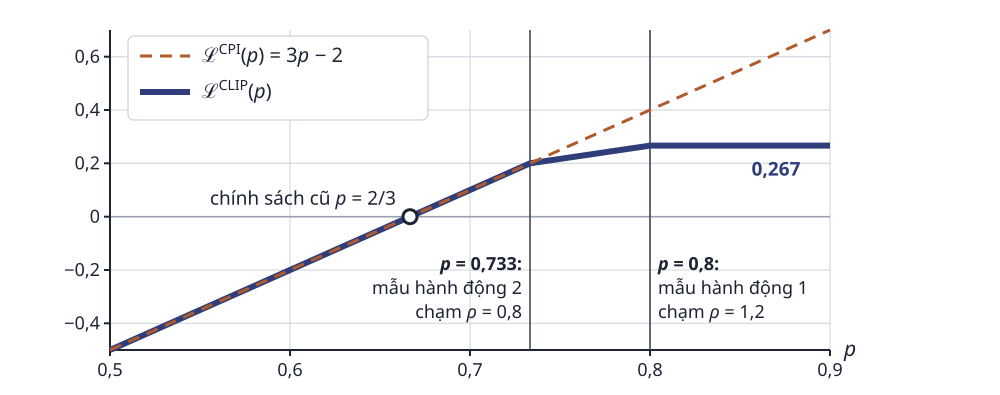
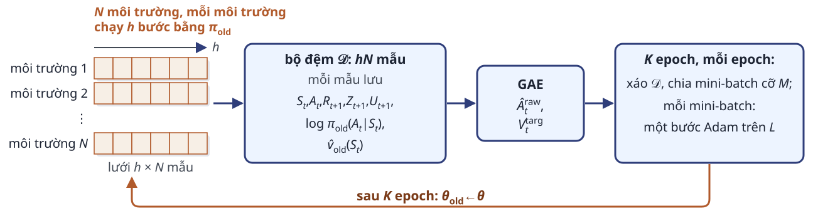

TRPO, PPO và DPO
Tối ưu chính sách miền tin cậy (TRPO), tối ưu chính sách gần kề (PPO) và tối ưu ưu tiên trực tiếp (DPO)
Bài 10 · Học tăng cường
TRPO, PPO và DPO đều tìm chính sách tốt hơn ở gần một chính sách cho trước.
Trường Đại học Công nghệ, Đại học Quốc gia Hà Nội
Năm học 2026–2027, học kỳ 1
Chính sách cho trước là $\pi_{\mathrm{old}}$ ở TRPO, PPO và $\pi_{\mathrm{ref}}$ cố định ở DPO. Phép trừ một đường cơ sở không phụ thuộc hành động đã chọn giữ nguyên kỳ vọng của ước lượng gradient. Sai số hàm thay thế bị chặn theo biến phân toàn phần hoặc KL, trung bình theo phân bố trạng thái của chính sách cũ, nên TRPO ràng buộc KL này, PPO cắt tỉ số $\rho_t$ (Mục 4–6). Với phần thưởng $\hat r$ khớp từ dữ liệu ưu tiên, mục tiêu phạt KL theo $\pi_{\mathrm{ref}}$ có nghiệm $\pi^*_{\hat r}\propto\pi_{\mathrm{ref}}e^{\hat r/\beta}$. RLHF nhắm tới nghiệm này bằng PPO với mẫu trực tuyến; với cùng dữ liệu, $\beta$ và $\pi_{\mathrm{ref}}$, cực tiểu của DPO là nghiệm này dưới giả thiết của Định lý 10.65. Tên tiếng Anh: Trust Region Policy Optimization, Proximal Policy Optimization, reinforcement learning from human feedback, Direct Preference Optimization.
Nguồn: bài giảng gốc lecture10_policy_gradient_part2.pdf (2025–2026), trang 1–2; ghi chú bài giảng Bài 10, §1.1, §7.
Tiên quyết và quy ước
Ký hiệu: $\mathbb E_{\pi_\theta}$ lấy theo $S_0\sim\mu_0$, $A_t\sim\pi_\theta(\cdot\mid S_t)$, $S_{t+1}\sim P(\cdot\mid S_t,A_t)$.
Ký hiệu Nghĩa
$\mathcal S$; $\mathcal A$ trạng thái chưa kết thúc; hành động, hữu hạn, $m$ phần tử ${R_{t+1};\ T;\ \gamma}$ phần thưởng sau $A_t$; bước kết thúc lượt, $G_T=0$; $\gamma\in[0,1)$ trong các định lý ${Z_{t+1};\ U_{t+1}}$ cờ kết thúc (termination); cờ cắt ngắn (truncation) ${\pi_{\mathrm{old}};\ \psi_t;\ H_t}$ chính sách sinh dữ liệu, tham số $\theta_{\mathrm{old}}$; ${\nabla_\theta\log\pi_\theta(A_t\mid S_t)}$, bằng $0$ khi ${t\ge T}$; lịch sử tới $S_t$
Lưu ý: $A_t$ là hành động; $A_\pi$, $\widehat A_t$ là lợi thế (advantage).
Ký hiệu $\log$ chỉ logarit tự nhiên. Bài 09 viết phân phối đầu là $\rho_0$; ở đây viết $\mu_0$ vì chữ $\rho$ dành cho tỉ số chính sách. Sau bước $T$, lượt ở trong một trạng thái hấp thụ có phần thưởng $0$, nên mọi giá trị và lợi thế tại đó bằng $0$. $Z_{t+1}=1$ khi và chỉ khi quá trình quyết định Markov (MDP) kết thúc tại bước $t+1$; $U_{t+1}=1$ khi việc thu dừng vì một giới hạn ngoài MDP. Hành lang ngắn trong các ví dụ mở đầu có $\gamma=1$, nằm ngoài giả thiết $\gamma<1$ của các định lý. Bài dùng hai loại trung bình: kỳ vọng có trọng số chiết khấu theo thời điểm thăm, và trung bình đều trên bộ đệm.
Nguồn: bài giảng gốc lecture10_policy_gradient_part2.pdf (2025–2026), trang 5; ghi chú bài giảng Bài 10, Bảng ký hiệu và quy ước đọc.
Tiên quyết và quy ước
Nhắc lại: dưới (G1)–(G4), REINFORCE ${\widehat g=\sum_{t<T}\gamma^tG_t\psi_t}$ có ${\mathbb E[\widehat g\mid\theta_{\mathrm{old}}]=\nabla_\theta J(\theta_{\mathrm{old}})}$ (Hệ quả 09.26).
(G1) $\mu_0$, $P$ của quá trình quyết định Markov (MDP) không phụ thuộc $\theta$, $S_t$ Markov; (G2) $\pi_\theta(\cdot\mid s)$ khả vi, hỗ trợ cố định;
(G3) ${\lvert R_{t+1}\rvert\le R_{\max}}$, ${T\le T_{\max}}$; (G4) softmax hoặc Gauss, đặc trưng bị chặn.
${\mathbb E_{A\sim\pi_\theta(\cdot\mid s)}\bigl[c\,\psi_\theta(s,A)\bigr]=0}$ khi $c$ không phụ thuộc $A$.
Softmax hai hành động, $p=\pi_\theta(1\mid s)$: ${\psi_\theta(s,a)=\bigl(\mathbb 1[a=1]-p\bigr)(1;\,-1)}$.
${v_\pi(s)=\sum_a\pi(a\mid s)\,q_\pi(s,a)}$, ${q_\pi(s,a)=r(s,a)+\gamma\sum_{s'}P(s'\mid s,a)\,v_\pi(s').}$
Kỳ vọng bằng $0$ của hàm điểm là Mệnh đề 09.17; công thức hàm điểm của softmax hai hành động, $\psi_\theta(s,1)=(1-p)(1;\,-1)$ và $\psi_\theta(s,2)=-p\,(1;\,-1)$, là Mệnh đề 09.16; (G4) cho phép chính sách softmax, hoặc Gauss với độ lệch chuẩn cố định; "hỗ trợ cố định" nghĩa là miền hỗ trợ của $\pi_\theta(\cdot\mid s)$ không đổi theo $\theta$; hai công thức của $q_\pi$, $v_\pi$ là Mệnh đề 03.22, 03.23, với $r(s,a)$ là phần thưởng kỳ vọng của một bước. Lịch sử $H_t$ gồm mọi thứ đã quan sát khi chọn $A_t$; tính chất tháp $\mathbb E\bigl[\mathbb E[X\mid Y]\bigr]=\mathbb E[X]$ dùng trong chứng minh đường cơ sở. Bỏ trọng số $\gamma^t$ trong $\widehat g$ làm mất tính không chệch khi $\gamma<1$ (Ví dụ 09.21).
Nguồn: bài giảng gốc lecture10_policy_gradient_part2.pdf (2025–2026), trang 6–10; ghi chú bài giảng Bài 09, Định lý 09.23, Hệ quả 09.26; Bài 03, Mệnh đề 03.22, 03.23.
Mục tiêu học tập
Chứng minh đường cơ sở (baseline) không làm chệch; tính hai bước actor–critic.
Tính ước lượng lợi thế tổng quát (GAE) trên đoạn thu (rollout) có cắt ngắn.
Chứng minh bổ đề hiệu hiệu năng (performance difference lemma); tính hàm thay thế (surrogate objective), chặn cải thiện.
Tính bước gradient tự nhiên (natural gradient), gradient liên hợp (conjugate gradient).
Tính mục tiêu cắt (clipped objective), approxKL, tỉ lệ cắt (clip fraction).
Chứng minh chặn dưới bi quan; approxKL không chệch.
Sáu dòng gộp bảy mục tiêu đầu của ghi chú; GAE là viết tắt của generalized advantage estimation. Dòng 1: phương sai $\tfrac49(b-1)^2$ của đường cơ sở hằng $b$; $p_A$ tăng từ $0{,}5$ lên $0{,}5436$ sau hai bước actor–critic; sai số TD có kỳ vọng $0{,}35\ne0{,}4$ khi critic sai. Dòng 2: $\widehat A_0=0{,}98$ khi lượt kết thúc, $3{,}572$ khi bị cắt. Dòng 3: $\Delta J=0{,}296$, hàm thay thế $0{,}26$, cận $-0{,}892$. Dòng 4: $\Delta^*=(0{,}15;\,-0{,}15)$, $\Delta=(0{,}05;\,0{,}1)$. Dòng 5: $\mathcal L^{\mathrm{CLIP}}=0{,}2167$, approxKL $0{,}01737$; quy tắc PPO-Penalty cho $\beta=2$. Dòng 6: $\mathcal L^{\mathrm{CLIP}}\le\mathcal L^{\mathrm{CPI}}$, trùng quanh $\theta_{\mathrm{old}}$; approxKL không chệch khi $\theta$ không phụ thuộc mẫu. Mục tiêu 7 còn gồm một vòng PPO đầy đủ và phạm vi kết quả hội tụ của PPO-Clip.
Nguồn: bài giảng gốc lecture10_policy_gradient_part2.pdf (2025–2026), trang 2; ghi chú bài giảng Bài 10, Mục tiêu học tập 1–7.
Mục tiêu học tập
Ước lượng mô hình phần thưởng từ dữ liệu ưu tiên theo Bradley–Terry bằng hợp lý cực đại.
Chứng minh nghiệm dạng đóng của mục tiêu có phạt KL theo một chính sách tham chiếu cố định.
Mô tả ba giai đoạn của học tăng cường từ phản hồi con người (RLHF) với PPO.
Phân biệt chính sách cũ của PPO với chính sách tham chiếu.
Suy ra hàm mất mát tối ưu ưu tiên trực tiếp (DPO) bằng đổi biến; tính tay một bước.
Phát biểu giả thiết để DPO và RLHF cho cùng chính sách tối ưu, và hậu quả khi giả thiết hỏng.
Dòng 7–10 ứng với mục tiêu 8 của ghi chú, dòng 11–12 với mục tiêu 9. Sản phẩm kiểm được: mô hình phần thưởng $\hat r=(\log2;\,0)$ từ sáu phép so sánh; nghiệm $\pi^*=(\tfrac45;\,\tfrac15)$ với $\max J_1=0{,}5108$; bốn mô hình trong bộ nhớ của RLHF với PPO; $\pi_{\mathrm{old}}$ giới hạn từng bước, còn $\pi_{\mathrm{ref}}$ quyết định nghiệm; gradient DPO $(-\tfrac16;\,\tfrac16)$ và $\pi_\theta(y_1)=0{,}7362$ sau một bước; các giả thiết (H1)–(H3), (H4a), (H4b) và ưu tiên tất định làm (H4a) hỏng. Tên tiếng Anh: reward model, preference data, KL-regularized objective, reference policy (reference model), reinforcement learning from human feedback, Direct Preference Optimization.
Nguồn: ghi chú bài giảng Bài 10, Mục tiêu học tập 8–9.
Nội dung
Mở đầu và hai giới hạn của REINFORCE Đường cơ sở, hàm lợi thế và actor–critic Ước lượng lợi thế tổng quát Hàm thay thế và chặn cải thiện TRPO và gradient tự nhiên Tối ưu chính sách gần kề (PPO) Tối ưu chính sách từ phản hồi ưu tiên Tổng kết
Đọc trước: Sutton và Barto (2018), §13.4–13.5, §12.1–12.3; Schulman và cộng sự (2017), §3–5; Rafailov và cộng sự (2023), §3–5.
Đường cơ sở, critic và GAE giảm phương sai của ước lượng gradient (Mục 2–3), tạo hàng trên của vấn đề trung tâm. Hàng dưới (Mục 4–6) gồm chặn sai số khi đánh giá chính sách mới bằng dữ liệu cũ, giải bài toán miền tin cậy bằng TRPO, rồi thay ràng buộc bằng phép cắt tỉ số của PPO. Mục 7 dùng lại phép phạt KL với một chính sách tham chiếu cố định khi phần thưởng chỉ được biết qua so sánh ưu tiên, và giải bằng PPO hoặc DPO. Mục 8 đặt mỗi kết quả cạnh giả thiết của nó.
Nguồn: bài giảng gốc lecture10_policy_gradient_part2.pdf (2025–2026), trang 3; Sutton và Barto (2018), §12.1–12.3, §13.4–13.5; Schulman và cộng sự (2017), §3–5; ghi chú bài giảng Bài 10, §7; Rafailov và cộng sự (2023), §3–5.
Ví dụ: hành lang ngắn, một lượt REINFORCE

Mọi ô: ${\phi(s,1)=(1;\,0)}$, ${\phi(s,2)=(0;\,1)}$; $\theta=(0;\,0)$, ${p=\pi_\theta(1\mid s)=\tfrac12}$.
$\gamma=1$; ${J(p)=-2(2-p)/\bigl(p(1-p)\bigr)}$, ${J(\tfrac12)=-12}$.
${\nabla_\theta J=J'(\tfrac12)\,p(1-p)\,(1;\,-1)=8\cdot\tfrac14(1;\,-1)=(2;\,-2)}$.
Lượt: ${A_0,\dots,A_4=1,1,1,2,1}$ qua ${s_1,s_2,s_1,s_2,s_3}$ rồi tới $s_4$, nên $T=5$.
Tính $\widehat g$, rồi $\theta$, $p$, $J$ sau một bước.
Hành động 1 là sang phải, hành động 2 là sang trái; ở $s_2$ hai hành động bị đảo, nên $A_1=1$ đưa tác tử về $s_1$ và $A_3=2$ đưa tới $s_3$; sang trái tại $s_1$ thì đứng yên. Mọi ô có cùng đặc trưng, nên chính sách softmax chọn hành động 1 với cùng xác suất $p$ ở mọi ô. Đạo hàm $J'(p)=2(p^2-4p+2)/\bigl(p(1-p)\bigr)^2$ cho $J'(\tfrac12)=8$, và $\partial p/\partial\theta_1=-\partial p/\partial\theta_2=p(1-p)$.
Nguồn: ghi chú bài giảng Bài 10, Ví dụ 10.2; Sutton và Barto (2018), Ví dụ 13.1; bài giảng gốc lecture10_policy_gradient_part2.pdf (2025–2026), trang 10.
Ví dụ: hành lang ngắn, một lượt REINFORCE, ước lượng gradient
Nhắc lại: ${\psi_\theta(s,a)=\phi(s,a)-\sum_b\pi_\theta(b\mid s)\,\phi(s,b)=\phi(s,a)-(0{,}5;\,0{,}5)}$.
$t$ $S_t$ $A_t$ $G_t=-(5-t)$ $\psi_t=\phi(S_t,A_t)-(0{,}5;\,0{,}5)$ $G_t\psi_t$
$0$ $s_1$ $1$ $-5$ $(0{,}5;\,-0{,}5)$ $(-2{,}5;\,2{,}5)$ $1$ $s_2$ $1$ $-4$ $(0{,}5;\,-0{,}5)$ $(-2;\,2)$ $2$ $s_1$ $1$ $-3$ $(0{,}5;\,-0{,}5)$ $(-1{,}5;\,1{,}5)$ $3$ $s_2$ $2$ $-2$ $(-0{,}5;\,0{,}5)$ $(1;\,-1)$ $4$ $s_3$ $1$ $-1$ $(0{,}5;\,-0{,}5)$ $(-0{,}5;\,0{,}5)$ $\widehat g=\sum_tG_t\psi_t$, ngược chiều ${\nabla_\theta J=(2;\,-2)}$ $(-5{,}5;\,5{,}5)$
Với $\gamma=1$, REINFORCE cho $\widehat g=\sum_tG_t\psi_t$, và $G_t$ là tổng các phần thưởng $-1$ còn lại, nên $G_t=-(5-t)$. Bốn bước chọn hành động 1 góp $\tfrac12(-5-4-3-1)=-6{,}5$ vào tọa độ thứ nhất, bước $t=3$ góp $+1$. Hành lang có $\gamma=1$ và độ dài lượt không bị chặn nên không thỏa (G3), nhưng $T$ có đuôi hình học nên ước lượng vẫn không chệch. Ước lượng không chệch vẫn có thể cho một bước ngược chiều gradient trên một lượt cụ thể.
Nguồn: ghi chú bài giảng Bài 10, Ví dụ 10.2, phần ước lượng; ghi chú bài giảng Bài 09, Mệnh đề 09.16.
Ví dụ: hành lang ngắn, một lượt REINFORCE, cập nhật tham số
Nhắc lại: ${p=\sigma(\theta_1-\theta_2)}$, ${\sigma(x)=1/(1+e^{-x})}$; ${J(p)=-2(2-p)/\bigl(p(1-p)\bigr)}$.
$\alpha=0{,}1$: ${\theta\leftarrow\theta+\alpha\widehat g=(0;\,0)+0{,}1\cdot(-5{,}5;\,5{,}5)=(-0{,}55;\,0{,}55)}$.
${p=\sigma(-0{,}55-0{,}55)=\sigma(-1{,}1)=1/(1+e^{1{,}1})=0{,}24974}$.
${J(0{,}24974)=-\dfrac{2\cdot1{,}75026}{0{,}24974\cdot0{,}75026}=-\dfrac{3{,}50052}{0{,}18737}=-18{,}68}$.
Diễn giải: $\widehat g$ có kỳ vọng $\nabla_\theta J$ nhưng phương sai lớn, nên một lượt có thể cho bước ngược chiều gradient và làm $J$ giảm.
Mọi $G_t<0$, nên mỗi số hạng $G_t\psi_t$ giảm xác suất của hành động chọn ở bước $t$ theo $\lvert G_t\rvert$. Tổng $\lvert G_t\rvert$ của hành động 1 là $13$, của hành động 2 là $2$, nên $p$ giảm; $\pi_\theta(2\mid s)$ tăng từ $0{,}5$ lên $0{,}75$ dù hành động 2 cũng bị phạt. Giá trị tốt nhất là $p^*=2-\sqrt2\approx0{,}59$, nghiệm trong $(0,1)$ của $J'(p)=0$, tức của $p^2-4p+2=0$; bước này đưa $p$ xa dần $p^*$.
Nguồn: ghi chú bài giảng Bài 10, Ví dụ 10.2, phần cập nhật và diễn giải.
Ví dụ: hành lang ngắn, một bước theo đúng gradient
Cùng hành lang: $\theta=(0;\,0)$, $J(\tfrac12)=-12$, ${\nabla_\theta J=(2;\,-2)}$, ${p^*=2-\sqrt2\approx0{,}59}$.
Tính $p$ và $J$ sau một bước với $\alpha=0{,}1$ và $\alpha=0{,}5$.
$\alpha$ ${\theta+\alpha\nabla_\theta J}$ ${\theta_1-\theta_2}$ ${p=\sigma(\theta_1-\theta_2)}$ ${p(1-p)}$ ${2(2-p)}$ ${J(p)}$
$0{,}1$ ${(0{,}2;\,-0{,}2)}$ $0{,}4$ $0{,}5987$ $0{,}24026$ $2{,}8026$ $-11{,}66$ $0{,}5$ ${(1;\,-1)}$ $2$ $0{,}8808$ $0{,}10499$ $2{,}2384$ $-21{,}32$
Diễn giải: cùng hướng đúng, $\alpha=0{,}1$ làm $J$ tăng, còn $\alpha=0{,}5$ đưa $p$ vượt $p^*$ và làm $J$ giảm $9{,}32$; mỗi lượt chỉ cho một bước tại $\theta_{\mathrm{old}}$.
Hệ quả 09.26 cần lượt của chính $\pi_{\theta_{\mathrm{old}}}$, nên mỗi lượt chỉ cho một bước cập nhật. Muốn mỗi lượt đem lại nhiều tiến bộ hơn thì cần bước lớn hơn. Cùng một hướng đúng, bước nhỏ làm $J$ tăng còn bước lớn làm $J$ giảm, vì $J$ chỉ gần tuyến tính trong một lân cận nhỏ của chính sách cũ. Bước lớn đổi chính sách, và chính sách mới thăm các trạng thái theo một phân bố khác. Hai giới hạn này không mâu thuẫn với Hệ quả 09.26: tính không chệch chỉ nói về trung bình tại đúng tham số đã sinh lượt.
Nguồn: ghi chú bài giảng Bài 10, §1.1, đoạn sau Ví dụ 10.2; bài giảng gốc lecture10_policy_gradient_part2.pdf (2025–2026), trang 4, 14.
Vấn đề trung tâm
Giảm phương sai, giữ kỳ vọng;
Đường cơ sở không phụ thuộc $A_t$ giữ kỳ vọng; hệ số $\delta_t$ cần $\hat v=v_\pi$.
GAE không chệch cho gradient: lượt đầy đủ, critic cố định, $\lambda=1$ hoặc $\hat v=v_\pi$.
Lợi thế, $\nu$ chính xác: sai số hàm thay thế bị chặn theo khoảng cách.
TRPO xấp xỉ; trên bộ đệm: KL trung bình mẫu ${\le\kappa}$, hàm thay thế mẫu tăng.
Mục tiêu cắt chặn dưới hàm thay thế mẫu, không chặn KL.
Vấn đề trung tâm có ba phần: giảm phương sai của ước lượng gradient, giữ kỳ vọng; dùng lại dữ liệu cũ cho một bước lớn mà $J$ không giảm; khi chỉ có so sánh ưu tiên, cực đại hóa phần thưởng mà vẫn gần một chính sách tham chiếu cố định. Năm dòng ứng với Mục 2–6. Mục 7 trả lời phần thứ ba: RLHF với PPO và DPO cùng cực đại hóa mục tiêu có phạt KL; DPO cho cùng nghiệm khi đủ giả thiết của định lý tương đương. "Khoảng cách" là biến phân toàn phần hoặc KL trung bình theo phân bố trạng thái của chính sách cũ. Dòng 5: TRPO chỉ còn hai bất đẳng thức kiểm được trên bộ đệm, với bán kính miền tin cậy $\kappa$.
Nguồn: bài giảng gốc lecture10_policy_gradient_part2.pdf (2025–2026), trang 4, 14; ghi chú bài giảng Bài 10, §1.1 (ba phần).
Ba hàng của vấn đề trung tâm
Hàng trên: hệ số nhân với hàm điểm (Mục 2–3).
Hàng dưới: độ lớn bước tính từ $\theta_{\mathrm{old}}$ (Mục 4–6).
Hai hàng đầu gặp nhau ở PPO kiểu actor–critic.
Hàng thứ ba: phần thưởng từ so sánh ưu tiên, giải bằng PPO hoặc DPO (Mục 7).
Hàng trên, viền liền, gồm đường cơ sở và critic, cho hai hệ số $G_t-\hat v(S_t)$ và sai số TD $\delta_t$, rồi GAE trộn hai hệ số đó. Hàng dưới, nét đứt, gồm hàm thay thế và chặn cải thiện, TRPO với KL trung bình không vượt $\kappa$, rồi PPO cắt tỉ số $\rho_t$ vào đoạn $[1-\epsilon,\,1+\epsilon]$. Khung cuối, viền đậm, là Thuật toán 10.49: GAE cho lợi thế, mục tiêu cắt cho chính sách. Hàng thứ ba, viền chấm, nhận PPO làm công cụ: phần thưởng học từ so sánh ưu tiên, phạt KL theo chính sách tham chiếu cố định, rồi giải bằng PPO hoặc DPO.
Nguồn: ghi chú bài giảng Bài 10, §1.1, hình cấu trúc chương.
2. Đường cơ sở, hàm lợi thế và actor–criticPhép trừ một mức không phụ thuộc hành động khỏi lợi tức giữ kỳ vọng và có thể giảm phương sai.
Đường cơ sở · Hàm lợi thế · Critic · Sai số sai phân thời gian · Actor–critic một bước
Trên hành lang ngắn, một lượt REINFORCE cho bước ngược chiều gradient vì ước lượng có phương sai lớn. Ở phần này, lợi tức được so với một mức của trạng thái, đại lượng còn lại được đặt tên là lợi thế, rồi lợi tức Monte Carlo được thay bằng một bước bootstrap của critic. Kết quả giao cho phần 3 là hai hệ số của hàm điểm: $G_t-\hat v(S_t)$ không chệch cho gradient, và sai số TD $\delta_t$ ước lượng lợi thế khi critic đúng.
Mức so sánh của trạng thái
Bài toán một bước (Bài 09), ${\pi_\theta(\cdot\mid s)=(\tfrac23;\,\tfrac13)}$, ${r=(3;\,0)}$: cộng $1$ vào phần thưởng giữ gradient $(\tfrac23;\,-\tfrac23)$, tổng phương sai tăng từ $\tfrac49$ lên $\tfrac{16}9$.
Trực quan. So $G_t$ với một mức $b(S_t)$ chỉ phụ thuộc trạng thái.
Hệ số của $\psi_t$ là $G_t-b(S_t)$: dương thì tăng, âm thì giảm xác suất hành động đã chọn.
Một hành động tốt là hành động cho lợi tức cao hơn mức thường đạt được tại trạng thái đó. Trong một MDP, mức so sánh phải thay đổi theo trạng thái, vì ở trạng thái mà mọi hành động đều có giá trị cao, mức so sánh phải cao thì mới phân biệt được hành động tốt hơn. Mức so sánh không được phụ thuộc hành động đã chọn; Bước 2 của chứng minh phép trừ không làm chệch dùng đúng giả thiết này. Bài toán một bước (Ví dụ 10.1 của ghi chú): một trạng thái, hai hành động, softmax với $\phi(s,a)=e_a$, vector đơn vị thứ $a$, $\theta=(\log2;\,0)$, lượt dừng sau $A_0$; $\psi_\theta(s,1)=(\tfrac13;\,-\tfrac13)$, $\psi_\theta(s,2)=(-\tfrac23;\,\tfrac23)$, $\widehat g=r(A_0)\psi_\theta(s,A_0)$. Tổng phương sai $\mathbb E\lVert\widehat g-\mathbb E\widehat g\rVert^2$ là tổng phương sai các tọa độ: $\tfrac23\cdot\tfrac29+\tfrac13\cdot\tfrac89=\tfrac49$, và $\tfrac23\cdot\tfrac89+\tfrac13\cdot\tfrac{32}9=\tfrac{16}9$ khi $r=(4;\,1)$.
Nguồn: Sutton và Barto (2018), §13.4, tr. 329; ghi chú bài giảng Bài 10, §2.1; bài giảng gốc lecture10_policy_gradient_part2.pdf (2025–2026), trang 11.
Đường cơ sở
Định nghĩa 10.1. Hàm bị chặn $b:\mathcal S\to\mathbb R$ gọi là đường cơ sở ; ước lượng có đường cơ sở là
$$\widehat g_b=\sum_{t=0}^{T-1}\gamma^t\bigl(G_t-b(S_t)\bigr)\psi_t.$$
Dãy bị chặn $B_t$ là đường cơ sở ngẫu nhiên nếu khi biết $(H_t,B_t)$, $A_t$ vẫn có phân phối $\pi_\theta(\cdot\mid S_t)$.
Trên bài toán một bước, $T=1$ và $\widehat g_b=\bigl(r(A_0)-b\bigr)\psi_\theta(s,A_0)$. Với $b\equiv0$, $\widehat g_b$ là ước lượng REINFORCE. Hàm $\hat v(S_t,w)$ với $w$ giữ cố định trong lượt là một đường cơ sở; trung bình $G_0$ của các lượt khác, độc lập với lượt đang xét, là một đường cơ sở ngẫu nhiên. Lợi tức $G_t$ của chính lượt không là đường cơ sở, vì nó phụ thuộc $A_t$.
Nguồn: ghi chú bài giảng Bài 10, Định nghĩa 10.1; Sutton và Barto (2018), §13.4, (13.11).
Đường cơ sở không làm chệch
Mệnh đề 10.2. Giả thiết: (G1)–(G4); $\lvert b\rvert\le\bar b$; lượt sinh bởi $\pi_\theta$; $b$ cố định trong lượt.
Kết luận:
$$\mathbb E\Bigl[\sum_{t=0}^{T-1}\gamma^tb(S_t)\,\psi_t\Bigr]=0,\qquad\text{nên}\quad\mathbb E[\widehat g_b]=\nabla_\theta J(\theta).$$
Ý nghĩa: phép trừ giữ nguyên kỳ vọng của ước lượng, chỉ đổi độ phân tán của các mẫu.
Bài toán một bước, $b$ hằng: tổng phương sai $\tfrac49(b-1)^2$, nhỏ nhất tại ${b^*=\mathbb E[R\lVert\psi\rVert^2]/\mathbb E\lVert\psi\rVert^2=1\ne v_\pi(s)=2}$ (Mệnh đề 10.3).
Lượt hành lang, $b=v_\pi$: ${\widehat g_b=(9{,}5;\,-9{,}5)}$, cùng chiều $\nabla_\theta J$.
Đường cơ sở $b=3$ cho tổng phương sai $\tfrac{16}9$, lớn hơn $\tfrac49$ của $b=0$, nên phép trừ không luôn giảm phương sai (Ví dụ 10.3). Trên lượt hành lang, $v_\pi=(-12;\,-10;\,-6)$, các hệ số $G_t-v_\pi(S_t)$ là $7,6,9,8,5$, và khi không trừ, $\widehat g=(-5{,}5;\,5{,}5)$ (Ví dụ 10.4). Ba giả thiết có phản ví dụ riêng. Đường cơ sở phụ thuộc hành động: trên bài toán một bước, $b=r(A)$ cho $\widehat g_b\equiv0$. Hành động không lấy từ $\pi_\theta$: nếu chọn đều mỗi hành động với xác suất $\tfrac12$, $\mathbb E[b\,\psi]=b\,(-\tfrac16;\,\tfrac16)\ne0$ khi $b\ne0$. Đường cơ sở không bị chặn, như phân phối Cauchy: kỳ vọng không xác định. Mệnh đề nói về kỳ vọng, không nói về phương sai. Điều cần là $b$ không phụ thuộc $A_t$ khi đã biết lịch sử $H_t$, không phải $b$ độc lập với $A_t$.
Nguồn: ghi chú bài giảng Bài 10, Mệnh đề 10.2; bài giảng gốc lecture10_policy_gradient_part2.pdf (2025–2026), trang 11.
Chứng minh: đường cơ sở không làm chệch
$\widehat g_b=\widehat g-\sum_t\gamma^tb(S_t)\psi_t$ và ${\mathbb E[\widehat g]=\nabla_\theta J}$ (Hệ quả 09.26).
Khi biết $H_t$, $t<T$: $b(S_t)$ đã xác định và ${A_t\sim\pi_\theta(\cdot\mid S_t)}$, nên
$$\mathbb E\bigl[b(S_t)\psi_t\mid H_t\bigr]=b(S_t)\sum_a\pi_\theta(a\mid S_t)\,\psi_\theta(S_t,a)=0.$$
Tính chất tháp cho $\mathbb E[\gamma^tb(S_t)\psi_t]=0$; cộng $T_{\max}$ số hạng. $\square$
Ở Bước 1, với quy ước $\psi_t=0$ khi $t\ge T$ và giả thiết $T\le T_{\max}$ của (G3), tổng theo $t$ đến $T-1$ bằng tổng có $T_{\max}$ số hạng cố định, nên được đổi chỗ tổng và kỳ vọng. Bước 2 dùng hai giả thiết: $b(S_t)$ là hàm của $H_t$, không phụ thuộc $A_t$; và $A_t$ lấy từ chính $\pi_\theta(\cdot\mid S_t)$, vì chính sách và trạng thái có tính Markov theo (G1). Đẳng thức cuối là kỳ vọng bằng $0$ của hàm điểm, cần (G2). Bước 3 cần $b(S_t)\psi_t$ khả tích: $\lvert b\rvert\le\bar b$ và hàm điểm khả tích theo (G4). Với đường cơ sở ngẫu nhiên $B_t$, Bước 2 điều kiện theo $(H_t,B_t)$ thay cho $H_t$, và cùng chuỗi đẳng thức cho kỳ vọng $0$. Lập luận này là lập luận đã dùng cho phần thưởng quá khứ ở Bài 09 (Bổ đề 09.22).
Nguồn: ghi chú bài giảng Bài 10, chứng minh Mệnh đề 10.2.
Hàm lợi thế
Với $b=v_\pi$, hệ số $G_t-v_\pi(S_t)$ đo $A_t$ tốt hơn mức chung của $S_t$ bao nhiêu.
Trực quan. Khi biết $(H_t,A_t)$, hệ số $G_t-v_\pi(S_t)$ có kỳ vọng ${q_\pi(S_t,A_t)-v_\pi(S_t)}$: dương khi $A_t$ tốt hơn mức chung của $S_t$.
Định nghĩa 10.4. Với chính sách Markov dừng $\pi$, hàm lợi thế (advantage function) là
$$A_\pi(s,a)=q_\pi(s,a)-v_\pi(s),\qquad s\in\mathcal S,\ a\in\mathcal A;$$
$A_\pi=0$ sau khi lượt kết thúc.
Bài toán một bước: ${A_\pi(s,\cdot)=(1;\,-2)}$, không đổi khi cộng $1$ vào phần thưởng.
Kỳ vọng có điều kiện của $G_t$ là Bổ đề 03.20(d). Trên bài toán một bước, $q_\pi(s,\cdot)=(3;\,0)$ và $v_\pi(s)=2$; với $r=(4;\,1)$, $q_\pi=(4;\,1)$ và $v_\pi=3$, nên hiệu vẫn là $(1;\,-2)$ (Ví dụ 10.5). $A_\pi(s,a)>0$ nghĩa là thực hiện $a$ tại $s$ rồi theo $\pi$ cho lợi tức kỳ vọng lớn hơn theo $\pi$ ngay từ $s$. Cộng một hằng vào mọi phần thưởng không đổi lợi thế, khác với phương sai $\tfrac{16}9$ của REINFORCE. Lợi thế trung bình của chính sách khác $\pi'$ tại $s$ là $A_\pi(s,\pi')=\sum_a\pi'(a\mid s)A_\pi(s,a)$.
Nguồn: ghi chú bài giảng Bài 10, §2.3, Định nghĩa 10.4, Ví dụ 10.5; bài giảng gốc lecture10_policy_gradient_part2.pdf (2025–2026), trang 5, 8.
Gradient dạng lợi thế
Mệnh đề 10.5. MDP hữu hạn, phần thưởng bị chặn, $\gamma<1$, $\pi=\pi_\theta$ Markov dừng; (b) thêm (G1)–(G4). Khi đó (a) ${\sum_a\pi_\theta(a\mid s)A_\pi(s,a)=0}$ với mọi $s$; (b)
$$\nabla_\theta J(\theta)=\mathbb E_{\pi_\theta}\Bigl[\sum_{t=0}^{T-1}\gamma^tA_\pi(S_t,A_t)\,\psi_t\Bigr].$$
Chứng minh. Đường cơ sở $b=v_\pi$ không làm chệch, rồi tính chất tháp theo $(H_t,A_t)$.
Lợi thế trong (b) phải là của chính chính sách đang được lấy gradient. Kết luận (a) là lý do $A_\pi$ có trung bình $0$ tại mỗi trạng thái. Theo Hệ quả 09.24, (b) còn có dạng chiếm dụng $\nabla_\theta J=\tfrac1{1-\gamma}\mathbb E_{S\sim\nu^\pi,A\sim\pi_\theta}[A_\pi(S,A)\psi_\theta(S,A)]$, với $\nu^\pi$ là phân bố chiếm dụng chiết khấu. Từ đây, mọi phương pháp của bài chỉ cần một ước lượng của lợi thế. Trên bài toán một bước, (b) cho $\tfrac23\cdot1\cdot\psi(s,1)+\tfrac13(-2)\psi(s,2)=(\tfrac29;\,-\tfrac29)+(\tfrac49;\,-\tfrac49)=(\tfrac23;\,-\tfrac23)$.
Nguồn: ghi chú bài giảng Bài 10, Mệnh đề 10.5, Ví dụ 10.5.
Thuật toán REINFORCE có đường cơ sở
Thuật toán 10.6. Đầu vào: $\pi_\theta$, $\hat v(s,w)$, $\alpha_\theta$, $\alpha_w$, $\gamma\in[0,1)$, số lượt $E$. Đầu ra: $\theta$, $w$. Giả thiết: (G1)–(G4); $\hat v(\cdot,w)$ bị chặn.
Khởi tạo $\theta$, $w$ tùy ý; lặp $E$ lượt:
$\theta_{\mathrm{old}}\leftarrow\theta$, $w_{\mathrm{old}}\leftarrow w$; thu một lượt bằng $\pi_{\theta_{\mathrm{old}}}$.
Tính $G_t$ lùi từ cuối lượt: $G_T=0$, $G_t=R_{t+1}+\gamma G_{t+1}$.
${w\leftarrow w_{\mathrm{old}}+\alpha_w\sum_t\bigl(G_t-\hat v(S_t,w_{\mathrm{old}})\bigr)\nabla_w\hat v(S_t,w_{\mathrm{old}})}$.
${\theta\leftarrow\theta_{\mathrm{old}}+\alpha_\theta\sum_t\gamma^t\bigl(G_t-\hat v(S_t,w_{\mathrm{old}})\bigr)\psi_t}$.
$\hat v$ dùng $w_{\mathrm{old}}$ cố định trong cả lượt, nên là một đường cơ sở hợp lệ theo Mệnh đề 10.2. Bước 3 hồi quy $\hat v$ về lợi tức Monte Carlo, không có trọng số $\gamma^t$; bước 4 có $\gamma^t$ như REINFORCE. Thuật toán vẫn chờ lượt kết thúc, và $\hat v$ chỉ đánh giá $S_t$, nên theo Sutton và Barto (2018, §13.5) nó không là phương pháp actor–critic.
Nguồn: ghi chú bài giảng Bài 10, Thuật toán 10.6; Sutton và Barto (2018), §13.4, tr. 330.
Bài tập: đường cơ sở hợp lệ
Câu hỏi: trong ${\widehat g_B=\sum_t\gamma^t(G_t-B_t)\psi_t}$, xác định $B_t$ nào giữ ${\mathbb E[\widehat g_B]=\nabla_\theta J}$:
(a) $\hat v(S_t,w)$, $w$ cố định trong lượt; (b) trung bình $G_0$ của các lượt khác, độc lập;
(c) $B_t=r(A_t)$ trên bài toán một bước; (d) $B_t=G_t$ của chính lượt.
Lời giải: (a), (b) hợp lệ theo Mệnh đề 10.2: khi biết $(H_t,B_t)$, ${A_t\sim\pi_\theta(\cdot\mid S_t)}$.
(c), (d): $G_t-B_t=0$, nên ${\widehat g_B\equiv0\ne\nabla_\theta J}$; ở (c), ${\nabla_\theta J=(\tfrac23;\,-\tfrac23)}$.
Gợi ý: kiểm xem khi biết $(H_t,B_t)$, hành động $A_t$ có còn phân phối $\pi_\theta(\cdot\mid S_t)$ không. Ở (b), các lượt khác phải độc lập với lượt đang xét; lỗi thường gặp là lấy trung bình $G_0$ của cả batch, kể cả lượt đang xét, khi đó $B_t$ chứa phần thưởng đến sau $A_t$. Ở (c) và (d), $B_t$ phụ thuộc $A_t$, nên Bước 2 của chứng minh không còn đúng. Bài tập kiểm việc nhận ra điều kiện $A_t\sim\pi_\theta(\cdot\mid S_t)$ khi biết $(H_t,B_t)$.
Nguồn: ghi chú bài giảng Bài 10, Bài tập 10.1.
Critic, actor và phương pháp actor–critic
Thuật toán 10.6 chờ hết lượt; critic đánh giá $A_t$ ngay sau một bước.
Trực quan. Nếu ${R_{t+1}+\gamma\hat v(S_{t+1})>\hat v(S_t)}$ thì $A_t$ tốt hơn dự báo.
Định nghĩa 10.7. $\hat v(\cdot,w)$ gọi là critic khi đánh giá $A_t$ qua mục tiêu ${R_{t+1}+\gamma(1-Z_{t+1})\hat v(S_{t+1},w)}$; $\pi_\theta$ gọi là actor .
Phương pháp actor–critic cập nhật $\theta$ theo hệ số lập từ mục tiêu này, và $w$ để $\hat v$ xấp xỉ $v_{\pi_\theta}$.
REINFORCE có đường cơ sở chờ hết lượt mới cập nhật, và $\hat v$ trong đó chỉ đánh giá $S_t$. Theo Sutton và Barto (2018, §13.5, tr. 331), phép bootstrap từ $S_{t+1}$ phân biệt critic với đường cơ sở; bài giảng gốc (tr. 12) dùng tên actor–critic theo nghĩa rộng hơn. Mặt nạ $(1-Z_{t+1})$ thay quy ước $\hat v=0$ tại trạng thái kết thúc (Định nghĩa 05.20, 07.19). Critic cập nhật theo kiểu bán gradient (semi-gradient) của Định nghĩa 07.21: mục tiêu được coi là hằng.
Nguồn: ghi chú bài giảng Bài 10, §2.4, Định nghĩa 10.7; bài giảng gốc lecture10_policy_gradient_part2.pdf (2025–2026), trang 12.
Critic, actor và phương pháp actor–critic
Nhắc lại: sai số sai phân thời gian (sai số TD, temporal-difference error) ${\delta_t=R_{t+1}+\gamma(1-Z_{t+1})\hat v(S_{t+1},w)-\hat v(S_t,w)}$.
Cùng một số $\delta_t$: sai lệch cho critic, hệ số của hàm điểm cho actor, nhân với ${I=\gamma^t}$.
Sai số TD đã gặp ở Bài 05 và Bài 07; ở đây nó có mặt nạ kết thúc của Bài 08. Trên hình, critic cho hai giá trị, tại $S_t$ và tại $S_{t+1}$, để lập $\delta_t$. Khung nét đứt đánh dấu mục tiêu được dừng gradient. Mũi tên tới critic là cập nhật $w\leftarrow w+\alpha_w\delta_t\nabla_w\hat v(S_t,w)$; mũi tên tới actor là $\theta\leftarrow\theta+\alpha_\theta I\delta_t\psi_\theta(S_t,A_t)$, với $I=\gamma^t$. Trong actor, $\delta_t$ đứng ở vị trí của $G_t-\hat v(S_t,w)$ của REINFORCE có đường cơ sở, nhưng chỉ chứa một phần thưởng thực.
Nguồn: ghi chú bài giảng Bài 10, §2.4, hình sơ đồ actor–critic; Sutton và Barto (2018), §13.5.
Sai số TD và lợi thế
Mệnh đề 10.8. Giả thiết: MDP hữu hạn, Markov, phần thưởng bị chặn, $0\le\gamma<1$; $\pi$ Markov dừng; critic cố định; $Z_{t+1}=1$ khi và chỉ khi kết thúc; $e=\hat v-v_\pi$.
Kết luận: (a) nếu $\hat v=v_\pi$ thì ${\mathbb E[\delta_t\mid S_t=s,A_t=a]=A_\pi(s,a)}$; (b) tổng quát
$$\mathbb E[\delta_t\mid S_t=s,A_t=a]=A_\pi(s,a)+\gamma\sum_{s'}P(s'\mid s,a)\,e(s')-e(s).$$
Lưu ý: điều kiện theo $(S_t,A_t)$; với critic đúng, điều kiện theo $S_t$ cho kỳ vọng $0$.
Chứng minh. Kỳ vọng của mục tiêu một bước là ${q_\pi(s,a)+\gamma\sum_{s'}P(s'\mid s,a)e(s')}$.
Bỏ "critic đúng": trên bài toán một bước với $\hat v=1$, $\mathbb E[\delta_0\mid A_0=1]=2\ne A_\pi(s,1)=1$. Với critic đúng, $\mathbb E[\delta_t\mid S_t=s]=\sum_a\pi(a\mid s)A_\pi(s,a)=0$, nên $\delta_t$ chỉ đánh giá hành động khi đặt cạnh hành động đã chọn. Độ chệch trong (b) không do bootstrap gây ra: critic học bằng Monte Carlo nhưng chưa đúng cũng cho số hạng $e$ (Sutton và Barto, 2018, §13.5).
Nguồn: ghi chú bài giảng Bài 10, Mệnh đề 10.8 và chứng minh; bài giảng gốc lecture10_policy_gradient_part2.pdf (2025–2026), trang 12.
Ví dụ: chuỗi hai trạng thái

$\gamma=0{,}9$; ${\theta=(\theta_A;\,\theta_B)=(0;\,\log2)}$, ${p_s=\pi_\theta(1\mid s)=\sigma(\theta_s)}$; ${\psi_\theta(s,1)=(1-p_s)\,e_s}$, ${\psi_\theta(s,2)=-p_s\,e_s}$, ${e_A=(1;\,0)}$, ${e_B=(0;\,1)}$.
Tính $v_\pi$, $q_\pi$, $A_\pi$, rồi hai bước actor–critic và ba hệ số của hàm điểm trên một lượt.
Chính sách có một tham số cho mỗi trạng thái: logit $\theta_s$ cho hành động 1 và $0$ cho hành động 2, nên $p_s=\sigma(\theta_s)$ với $\sigma(x)=1/(1+e^{-x})$. Hai hàm điểm là Mệnh đề 09.16. Tại $s_A$, hành động 1 sang $s_B$ với phần thưởng $0$, hành động 2 kết thúc với phần thưởng $1$; tại $s_B$, hai hành động kết thúc với phần thưởng $3$ và $0$. Mọi lượt bắt đầu ở $s_A$ và dài nhiều nhất hai bước.
Nguồn: ghi chú bài giảng Bài 10, Ví dụ 10.6, phần dữ kiện; bài giảng gốc lecture10_policy_gradient_part2.pdf (2025–2026), trang 12.
Ví dụ: chuỗi hai trạng thái, giá trị
Nhắc lại: ${v_\pi(s)=\sum_a\pi(a\mid s)\,q_\pi(s,a)}$, ${q_\pi(s,a)=r(s,a)+\gamma\sum_{s'}P(s'\mid s,a)\,v_\pi(s')}$.
${p_A=\sigma(0)=\tfrac12}$; ${p_B=\sigma(\log2)=1/(1+\tfrac12)=\tfrac23}$.
${q_\pi(s_B,1)=3}$, ${q_\pi(s_B,2)=0}$, vì $s_B$ kết thúc ngay.
${v_\pi(s_B)=\tfrac23\cdot3+\tfrac13\cdot0=2}$.
${q_\pi(s_A,1)=0+0{,}9\,v_\pi(s_B)=0{,}9\cdot2=1{,}8}$; ${q_\pi(s_A,2)=1}$.
${v_\pi(s_A)=\tfrac12\cdot1{,}8+\tfrac12\cdot1=1{,}4=J}$.
Hai công thức nhắc lại là Mệnh đề 03.22 và 03.23. Hành động 2 tại $s_A$ kết thúc lượt, nên $q_\pi(s_A,2)$ chỉ gồm phần thưởng $1$. $J$ là $v_\pi(s_A)$ vì mọi lượt bắt đầu ở $s_A$. Viết theo tham số, $J=p_A\cdot0{,}9\cdot3p_B+(1-p_A)$; tại $p_A=\tfrac12$, $p_B=\tfrac23$ biểu thức này cho $0{,}9+0{,}5=1{,}4$. Đạo hàm trực tiếp cho $\nabla_\theta J=(0{,}2;\,0{,}3)$, với $\mathrm dp_s/\mathrm d\theta_s=p_s(1-p_s)$.
Nguồn: ghi chú bài giảng Bài 10, Ví dụ 10.6, phần giá trị và gradient tính trực tiếp.
Ví dụ: chuỗi hai trạng thái, lợi thế
${(s,a)}$ ${\pi(a\mid s)}$ ${q_\pi(s,a)}$ ${v_\pi(s)}$ ${A_\pi=q-v}$ ${\pi A_\pi}$ tọa độ $\theta_s$ của $\psi$ ${\pi A_\pi\psi}$
$(s_A,1)$ $\tfrac12$ $1{,}8$ $1{,}4$ $0{,}4$ $0{,}2$ $0{,}5$ $0{,}1$ $(s_A,2)$ $\tfrac12$ $1$ $1{,}4$ $-0{,}4$ $-0{,}2$ $-0{,}5$ $0{,}1$ $(s_B,1)$ $\tfrac23$ $3$ $2$ $1$ $\tfrac23$ $\tfrac13$ $\tfrac29$ $(s_B,2)$ $\tfrac13$ $0$ $2$ $-2$ $-\tfrac23$ $-\tfrac23$ $\tfrac49$
Tổng cột $\pi A_\pi$ theo trạng thái: ${0{,}2-0{,}2=0}$, ${\tfrac23-\tfrac23=0}$ (Mệnh đề 10.5(a)).
Tổng cột $\pi A_\pi\psi$: $0{,}2$ tại $s_A$ ($t=0$, trọng số $1$), $\tfrac23$ tại $s_B$; theo Mệnh đề 10.5(b):
${\nabla_\theta J=\bigl(0{,}2;\ \gamma\Pr(S_1=s_B)\cdot\tfrac23\bigr)=\bigl(0{,}2;\ 0{,}9\cdot\tfrac12\cdot\tfrac23\bigr)=(0{,}2;\ 0{,}3)}$.
Ở tọa độ $\theta_B$, trạng thái $s_B$ được thăm ở bước $t=1$ với xác suất $p_A=\tfrac12$, và bước đó có trọng số $\gamma=0{,}9$; vì vậy tổng $\tfrac23$ của $s_B$ được nhân với $0{,}9\cdot\tfrac12$. Kết quả $(0{,}2;\,0{,}3)$ khớp đạo hàm trực tiếp của $J=p_A\cdot2{,}7p_B+(1-p_A)$. Lợi thế tại $s_A$ phụ thuộc $s_B$ qua $q_\pi(s_A,1)=\gamma v_\pi(s_B)$. Ở dạng chiếm dụng, $\nu^\pi=(0{,}1;\,0{,}045)$.
Nguồn: ghi chú bài giảng Bài 10, Ví dụ 10.6, phần lợi thế, gradient theo Mệnh đề 10.5(b) và kiểm tra lại.
Ví dụ: chuỗi hai trạng thái, critic
Critic dạng bảng ${\hat v(s,w)=w_s}$, ${w=(w_A;\,w_B)=(1;\,1{,}5)}$, ${\alpha_w=0{,}5}$. Lượt: $s_A$, hành động 1, $R_1=0$; $s_B$, hành động 1, $R_2=3$, kết thúc.
Nhắc lại: mục tiêu ${R_{t+1}+\gamma(1-Z_{t+1})\,w_{S_{t+1}}}$; ${\delta_t=\text{mục tiêu}-w_{S_t}}$; ${w_{S_t}\leftarrow w_{S_t}+\alpha_w\delta_t}$.
$t$ $S_t$ $R_{t+1}$ $Z_{t+1}$ $w_{S_{t+1}}$ mục tiêu $w_{S_t}$ $\delta_t$ $w_{S_t}$ mới
$0$ $s_A$ $0$ $0$ $1{,}5$ $0+0{,}9\cdot1{,}5=1{,}35$ $1$ $0{,}35$ $1{,}175$ $1$ $s_B$ $3$ $1$ — $3+0=3$ $1{,}5$ $1{,}5$ $2{,}25$
Với critic dạng bảng, $\nabla_w\hat v(s,w)=e_s$, nên cập nhật bán gradient chỉ đổi $w_{S_t}$. Ở bước $1$, lượt kết thúc nên $Z_2=1$ và mặt nạ $1-Z_2$ bằng $0$: mục tiêu chỉ là phần thưởng $3$, không cần giá trị của trạng thái sau. Hai giá trị mới: $w_A=1+0{,}5\cdot0{,}35=1{,}175$ và $w_B=1{,}5+0{,}5\cdot1{,}5=2{,}25$. Critic ban đầu $(1;\,1{,}5)$ khác $v_\pi=(1{,}4;\,2)$.
Nguồn: ghi chú bài giảng Bài 10, Ví dụ 10.7, phần critic.
Ví dụ: chuỗi hai trạng thái, actor
${\alpha_\theta=1}$, ${I=\gamma^t}$; hành động đã chọn là 1 ở cả hai bước, nên ${\psi_\theta(S_t,1)=(1-p_{S_t})\,e_{S_t}}$.
Nhắc lại: ${\theta_{S_t}\leftarrow\theta_{S_t}+\alpha_\theta\,I\,\delta_t\,(1-p_{S_t})}$; ${p_s=\sigma(\theta_s)}$.
$t$ $S_t$ $I$ $\delta_t$ $1-p_{S_t}$ $I\delta_t(1-p_{S_t})$ $\theta_{S_t}$ $\theta_{S_t}$ mới $p_{S_t}$ mới
$0$ $s_A$ $1$ $0{,}35$ $\tfrac12$ $0{,}175$ $0$ $0{,}175$ $0{,}5436$ $1$ $s_B$ $0{,}9$ $1{,}5$ $\tfrac13$ $0{,}45$ $\log2=0{,}6931$ $1{,}1431$ $0{,}7583$
${\sigma(0{,}175)=1/(1+e^{-0{,}175})=1/(1+0{,}8395)=0{,}5436}$; ${\sigma(1{,}1431)=1/(1+0{,}3188)=0{,}7583}$.
Diễn giải: ${\delta_0=0{,}35\ne A_\pi(s_A,1)=0{,}4}$ vì critic sai.
Thừa số $I=\gamma^t$ đóng vai trọng số $\gamma^t$ của định lý gradient chính sách. Với critic đúng $(1{,}4;\,2)$, $\delta_0$ bằng $0{,}4$ hoặc $-0{,}4$ và $\delta_1=1$ cho hành động 1 tại $s_B$, đúng bằng lợi thế (Mệnh đề 10.8(a)). Bỏ mặt nạ và gán giá trị $1$ cho trạng thái kết thúc: hành động 2 tại $s_A$ cho $\delta_0=1+0{,}9\cdot1-1{,}4=0{,}5$ thay vì $-0{,}4$. Cả hai sai số TD dương, nên xác suất của hai hành động đã chọn đều tăng. Chênh lệch $0{,}35-0{,}4$ là độ chệch mà Mệnh đề 10.8(b) mô tả khi critic chưa đúng.
Nguồn: ghi chú bài giảng Bài 10, Ví dụ 10.7, phần actor và diễn giải.
Ví dụ: chuỗi hai trạng thái, hệ số của hàm điểm
Cùng lượt, critic trước cập nhật ${\hat v=(1;\,1{,}5)}$; ${G_t=R_{t+1}+\gamma G_{t+1}}$, ${G_2=0}$.
$t$ $S_t$ $G_t$ (REINFORCE) $G_t-\hat v(S_t)$ (Thuật toán 10.6) $\delta_t$ (actor–critic) $A_\pi(S_t,1)$
$0$ $s_A$ ${0+0{,}9\cdot3=2{,}7}$ $2{,}7-1=1{,}7$ $0{,}35$ $0{,}4$ $1$ $s_B$ $3$ $3-1{,}5=1{,}5$ $1{,}5$ $1$
Diễn giải: $G_t-\hat v(S_t)$ không làm chệch gradient với mọi $\hat v$ cố định nhưng chứa mọi phần thưởng tới cuối lượt; $\delta_t$ chỉ chứa một phần thưởng nhưng chệch khi critic sai.
Ba cột đầu là ba hệ số nhân với $\psi_t$ trên cùng một lượt; cột cuối là đại lượng mà chúng ước lượng. Phép trừ $\hat v(S_t)$ là đường cơ sở hợp lệ của Mệnh đề 10.2. Ở bước cuối, $G_1-\hat v(s_B)$ trùng $\delta_1$ vì lượt kết thúc sau một phần thưởng. Không hệ số nào bằng lợi thế trên một lượt; độ chệch chỉ thấy khi lấy kỳ vọng theo lượt (Ví dụ 10.8; Nhận xét 10.10).
Nguồn: ghi chú bài giảng Bài 10, Ví dụ 10.6–10.8, Nhận xét 10.10.
Thuật toán actor–critic một bước
Thuật toán 10.9. Đầu vào: $\pi_\theta$, $\hat v(s,w)$, $\alpha_\theta$, $\alpha_w$, $\gamma\in[0,1)$; dừng sau $E$ lượt. Đầu ra: $\theta$, $w$. Giả thiết: môi trường trả cờ $Z$.
Khởi tạo $\theta$, $w$ tùy ý; mỗi lượt: $I\leftarrow1$, lặp tới khi kết thúc:
$A\sim\pi_\theta(\cdot\mid S)$; quan sát $R$, $S'$, $Z$.
$\delta\leftarrow R+\gamma(1-Z)\,\hat v(S',w)-\hat v(S,w)$.
$w\leftarrow w+\alpha_w\,\delta\,\nabla_w\hat v(S,w)$.
$\theta\leftarrow\theta+\alpha_\theta\,I\,\delta\,\psi_\theta(S,A)$; $I\leftarrow\gamma I$, $S\leftarrow S'$.
Thuật toán lặp đúng hai phép tính của bảng hai bước actor–critic: cập nhật critic, rồi cập nhật actor với cùng $\delta$. Trong cập nhật actor, $\delta$ là một hệ số đã dừng gradient. Khi lượt bị cắt ngắn ($U=1$, $Z=0$), mục tiêu vẫn bootstrap từ quan sát cuối. Bộ nhớ không phụ thuộc độ dài lượt, vì thuật toán cập nhật ngay sau từng bước mà không lưu lượt. Phần $-\hat v(S,w)$ là một đường cơ sở hợp lệ, nhưng mục tiêu một bước thay cho $G_t$ làm ước lượng gradient chệch khi critic sai (Nhận xét 10.10).
Nguồn: ghi chú bài giảng Bài 10, Thuật toán 10.9, Nhận xét 10.10; Sutton và Barto (2018), §13.5, (13.12)–(13.14); bài giảng gốc lecture10_policy_gradient_part2.pdf (2025–2026), trang 12–13.
3. Ước lượng lợi thế tổng quátMột tham số trộn các lợi tức nhiều bước, cho mọi mức giữa sai số TD và lợi tức Monte Carlo.
Lợi tức n bước · Lợi tức λ · GAE · Tính không chệch cho gradient · Đoạn thu
Trên lượt của chuỗi hai trạng thái (bảng hệ số cuối mạch 2), sai số TD cho $0{,}35$, còn hệ số Monte Carlo $G_0-\hat v(s_A)$ cho $1{,}7$, trong khi lợi thế đúng là $A_\pi(s_A,1)=0{,}4$. Các lợi tức $n$ bước nối hai đầu này, và tham số $\lambda$ trộn chúng thành GAE; GAE giữ ước lượng gradient không chệch khi $\lambda=1$ trên lượt đầy đủ hoặc khi critic đúng, và được tính lùi trên dữ liệu có cờ kết thúc và cờ cắt ngắn. Kết quả giao cho phần 6 là $\widehat A_t$ và mục tiêu của critic $V^{\mathrm{targ}}_t$.
Lợi tức $n$ bước
Chuỗi hai trạng thái, lượt ${s_A\xrightarrow{1}s_B\xrightarrow{1}}$, critic $(1;\,1{,}5)$: hệ số một bước ${\delta_0=0{,}35}$, hệ số Monte Carlo ${G_0-\hat v(s_A)=1{,}7}$, lợi thế đúng $0{,}4$.
Định nghĩa 10.11. Với $w$ cố định, lợi tức $n$ bước (n-step return) từ bước $t<T$ là $G_{t:t+n}$ dưới đây, và lợi thế $n$ bước là ${\widehat A^{(n)}_t=G_{t:t+n}-\hat v(S_t,w)}$:
$$G_{t:t+n}=\begin{cases}\sum_{k=0}^{n-1}\gamma^kR_{t+k+1}+\gamma^n\hat v(S_{t+n},w), & t+n<T,\\ G_t, & t+n\ge T;\end{cases}$$
Bổ đề 10.12. $w$ cố định trong lượt, ${Z_{k+1}=1}$ khi và chỉ khi ${k+1=T}$, ${\delta_k=0}$ khi ${k\ge T}$: ${\widehat A^{(n)}_t=\sum_{k=0}^{n-1}\gamma^k\delta_{t+k}}$.
Lợi tức $n$ bước dùng $n$ phần thưởng thực rồi bootstrap từ $\hat v(S_{t+n})$. Chứng minh bổ đề: thay $\delta_{t+k}$ vào tổng; các số hạng $\hat v(S_{t+j})$, $1\le j<n$, triệt tiêu lồng nhau. Khi lượt kết thúc trước bước $t+n$, lợi tức $n$ bước là lợi tức thực. Trường hợp $n=1$ cho $\widehat A^{(1)}_t=\delta_t$; trường hợp $n\ge T-t$ cho $G_t-\hat v(S_t)$. Trên lượt của chuỗi hai trạng thái, $\widehat A^{(1)}_0=0{,}35$ và $\widehat A^{(2)}_0=1{,}7$. Bổ đề cần cùng một $w$ cho mọi sai số TD: nếu $\hat v(S_{t+1})$ trong $\delta_t$ và trong $\delta_{t+1}$ dùng hai tham số khác nhau, hai số hạng không triệt tiêu.
Nguồn: ghi chú bài giảng Bài 10, Định nghĩa 10.11, Bổ đề 10.12; Sutton và Barto (2018), §7.1, (7.1).
Lợi tức $\lambda$ và GAE
Trực quan. Trọng số $(1-\lambda)\lambda^{n-1}$ cộng lại bằng $1$; phần dư $\lambda^{T-t-1}$ dồn vào lợi tức thực.
$\lambda$ nhỏ dựa vào critic; $\lambda$ gần $1$ dựa vào phần thưởng thực.

Định nghĩa 10.13. Lợi tức λ (λ-return): ${G^\lambda_t=(1-\lambda)\sum_{n=1}^{T-t-1}\lambda^{n-1}G_{t:t+n}+\lambda^{T-t-1}G_t}$;
$\widehat A_t=G^\lambda_t-\hat v(S_t,w)$ gọi là ước lượng lợi thế tổng quát (GAE); $\lambda=1$: $G^\lambda_t=G_t$.
Nửa trái của hình là trọng số của từng lợi tức $n$ bước trong $G^\lambda_t$ với $\lambda=0{,}8$; cột sọc là phần $\lambda^6=0{,}262$ dồn vào lợi tức thực khi còn $7$ bước tới kết thúc. Nửa phải là trọng số $(\gamma\lambda)^k$ của sai số TD thứ $k$, tức dạng tổng của GAE; hai nửa mô tả cùng một ước lượng theo hai cách đếm. Với $\lambda=0$, $\widehat A_t=\delta_t$; với $\lambda=1$, $\widehat A_t=G_t-\hat v(S_t,w)$, hệ số Monte Carlo của REINFORCE có đường cơ sở. Dạng thứ hai của $G^\lambda_t$ là (12.3) của Sutton và Barto. Trên lượt của chuỗi hai trạng thái, với $\lambda=0{,}8$: $G^\lambda_0=0{,}2\cdot1{,}35+0{,}8\cdot2{,}7=2{,}43$ và $\widehat A_0=1{,}43$ (Ví dụ 10.8).
Nguồn: ghi chú bài giảng Bài 10, §3.2, Định nghĩa 10.13; Sutton và Barto (2018), §12.1, (12.3); bài giảng gốc lecture10_policy_gradient_part2.pdf (2025–2026), trang 13.
Dạng tổng và truy hồi của GAE
Mệnh đề 10.14. Critic cố định trong lượt, $\lambda\in[0,1]$, $\delta_k=0$ khi $k\ge T$. Khi đó (a)
$$\widehat A_t=\sum_{k=0}^{T-t-1}(\gamma\lambda)^k\,\delta_{t+k};$$
(b) $\lambda=0$: $\widehat A_t=\delta_t$; $\lambda=1$: $\widehat A_t=G_t-\hat v(S_t,w)$;
(c) ${\widehat A_t=\delta_t+\gamma\lambda(1-Z_{t+1})\widehat A_{t+1}}$, $\widehat A_T=0$.
Chứng minh. Thay bổ đề lợi thế $n$ bước, đổi thứ tự lấy tổng: ${(1-\lambda)\sum_{n>k}\lambda^{n-1}=\lambda^k}$; (c): tách số hạng $k=0$.
Bước đổi thứ tự lấy tổng hợp lệ vì chỉ hữu hạn sai số TD khác $0$ và chuỗi $\sum_n\lambda^{n-1}$ hội tụ tuyệt đối: $\widehat A_t=(1-\lambda)\sum_n\lambda^{n-1}\sum_{k<n}\gamma^k\delta_{t+k}=\sum_k\gamma^k\delta_{t+k}(1-\lambda)\sum_{n>k}\lambda^{n-1}$. Trường hợp $\lambda=1$ phải xử lý riêng, vì thừa số $1-\lambda$ bằng $0$: định nghĩa cho $G_t-\hat v(S_t)$, và bổ đề với $n=T-t$ cho cùng tổng. Ở (c), khi $Z_{t+1}=1$ thì $t+1=T$ và $\widehat A_{t+1}=0$, nên mặt nạ không đổi kết quả trên một lượt đầy đủ. Mệnh đề là đồng nhất thức trên từng lượt; nó không nói gì về kỳ vọng hay phương sai. Trên lượt của chuỗi, (c) cho $0{,}35+0{,}72\cdot1{,}5=1{,}43$, khớp $G^\lambda_0-\hat v(s_A)$.
Nguồn: ghi chú bài giảng Bài 10, Mệnh đề 10.14 và chứng minh; Schulman và cộng sự (2016), (16).
GAE và tính không chệch cho gradient
Mệnh đề 10.15. Giả thiết: (G1)–(G4), MDP hữu hạn; $\pi_\theta$ Markov dừng; critic cố định, bị chặn; GAE tính trên lượt đầy đủ.
Kết luận: nếu $\lambda=1$ hoặc $\hat v=v_\pi$ thì ${\mathbb E[\widehat A_t\psi_t]=\mathbb E[A_\pi(S_t,A_t)\psi_t]}$, nên ước lượng là γ-just :
$$\mathbb E\Bigl[\sum_{t=0}^{T-1}\gamma^t\widehat A_t\,\psi_t\Bigr]=\nabla_\theta J(\theta).$$
Lưu ý: trên chuỗi, critic $(1;\,1{,}5)$, $\lambda=1$: ${\mathbb E[\widehat A_0\mid s_A,1]=0{,}8\ne A_\pi=0{,}4}$, nhưng tọa độ $\theta_A$ của kỳ vọng ước lượng gradient vẫn đúng $0{,}2$.
Chứng minh. $\lambda=1$: đường cơ sở $b=\hat v$; $\hat v=v_\pi$: mỗi $\delta_{t+k}$ ước lượng $A_\pi$.
Trên chuỗi, với $\lambda=1$, độ chệch $+0{,}4$ như nhau cho hai hành động nên bị hàm điểm khử, còn với $\lambda=0$ hai độ chệch $-0{,}05$ và $+0{,}4$ không bị khử và tọa độ $\theta_A$ là $0{,}0875\ne0{,}2$ (Ví dụ 10.9). Trường hợp $\lambda=1$ là Mệnh đề 10.2 với $b=\hat v$. Trường hợp $\hat v=v_\pi$ dùng Mệnh đề 10.8(a) cho từng sai số TD $\delta_{t+k}$: mỗi số hạng $k\ge1$ có $\mathbb E[\delta_{t+k}\psi_t]=0$, vì kỳ vọng của lợi thế tại bước $t+k$ khi biết lịch sử bằng $0$. Lượt bị cắt phá giả thiết lượt đầy đủ: nếu lượt của chuỗi bị cắt sau bước $0$, kể cả với $\lambda=1$ tọa độ $\theta_A$ là $0{,}0875$. Critic học được không bằng $v_\pi$ và các cài đặt dùng $\lambda<1$, nên trong thực hành mệnh đề không cho bảo đảm.
Nguồn: ghi chú bài giảng Bài 10, Mệnh đề 10.15; Schulman và cộng sự (2016), Định nghĩa 1, Mệnh đề 1, §3.
Ví dụ: kết thúc và cắt ngắn
Đoạn hai bước, $\gamma=0{,}9$, $\lambda=0{,}8$; $R_1=1$, $R_2=2$; ${\hat v(S_0)=2}$, ${\hat v(S_1)=3}$; ${Z_1=U_1=0}$.
Sau bước $2$: (i) kết thúc, $Z_2=1$; (ii) cắt vì giới hạn thời gian, ${U_2=1}$, ${Z_2=0}$, quan sát cuối có ${\hat v(S_2)=4}$.
Nhắc lại: ${\delta_t=R_{t+1}+\gamma(1-Z_{t+1})\hat v(S_{t+1})-\hat v(S_t)}$; ${\widehat A_t=\delta_t+\gamma\lambda(1-Z_{t+1})\widehat A_{t+1}}$, ${\widehat A_2=0}$, ${\gamma\lambda=0{,}72}$.
Tính $\delta_0$, $\delta_1$, $\widehat A_1$, $\widehat A_0$ cho (i) và (ii).
${\delta_0=1+0{,}9\cdot3-2=1{,}7}$ trong cả hai trường hợp.
Hai cờ: $Z_{t+1}=1$ khi MDP kết thúc; $U_{t+1}=1$ khi việc thu dừng vì một giới hạn ngoài MDP, như giới hạn thời gian. Khi $Z_{t+1}=1$, mục tiêu một bước chỉ còn $R_{t+1}$; khi $U_{t+1}=1$ và $Z_{t+1}=0$, mục tiêu vẫn bootstrap, ở đây bằng giá trị của quan sát cuối $S_2$. Đoạn chỉ có hai bước, nên $\widehat A_2=0$ và cờ $U_2$ không cần nhân vào truy hồi ở ví dụ này.
Nguồn: ghi chú bài giảng Bài 10, §3.3, Ví dụ 10.10, phần dữ kiện; Bài 08, Định nghĩa 08.4, 08.6; bài giảng gốc lecture10_policy_gradient_part2.pdf (2025–2026), trang 24.
Ví dụ: kết thúc và cắt ngắn, hai trường hợp
${\delta_1=R_2+\gamma(1-Z_2)\hat v(S_2)-\hat v(S_1)}$; ${\widehat A_1=\delta_1}$ vì ${\widehat A_2=0}$; ${\widehat A_0=\delta_0+0{,}72\,\widehat A_1}$.
trường hợp ${1-Z_2}$ ${\hat v(S_2)}$ ${\delta_1=\widehat A_1}$ ${0{,}72\,\widehat A_1}$ ${\widehat A_0}$
(i) $0$ — ${2+0-3=-1}$ $-0{,}72$ ${1{,}7-0{,}72=0{,}98}$ (ii) $1$ $4$ ${2+0{,}9\cdot4-3=2{,}6}$ $1{,}872$ ${1{,}7+1{,}872=3{,}572}$
Diễn giải: cùng phần thưởng và critic, hai cờ cho hai kết quả cách nhau $2{,}592$; ở (ii), $S_2$ vẫn có tương lai nên giá trị của nó đi vào sai số TD.
Ở (i), mặt nạ $1-Z_2=0$ xóa phần bootstrap, nên $\delta_1$ chỉ còn $R_2-\hat v(S_1)$. Ở (ii), lượt bị dừng từ bên ngoài, nên giá trị của quan sát cuối vẫn vào mục tiêu. Ghi một bước cắt ngắn thành kết thúc, $Z=1$, biến (ii) thành (i) và làm $\widehat A_0$ giảm $2{,}592$. Hiệu đó là $0{,}72\cdot0{,}9\cdot4=2{,}592$.
Nguồn: ghi chú bài giảng Bài 10, Ví dụ 10.10, hai trường hợp và diễn giải.
Ví dụ: kết thúc và cắt ngắn, kiểm bằng lợi tức λ cắt
Lợi tức λ cắt (truncated λ-return) tại biên $2$ (Định nghĩa 10.13 với biên $2$ thay $T$): ${G^\lambda_{0:2}=(1-\lambda)\,G_{0:1}+\lambda\,G_{0:2}}$. Trường hợp (ii):
${G_{0:1}=R_1+\gamma\hat v(S_1)=1+0{,}9\cdot3=3{,}7}$.
${G_{0:2}=R_1+\gamma R_2+\gamma^2\hat v(S_2)=1+0{,}9\cdot2+0{,}81\cdot4=6{,}04}$.
${G^\lambda_{0:2}=0{,}2\cdot3{,}7+0{,}8\cdot6{,}04=0{,}74+4{,}832=5{,}572}$.
${\widehat A_0+\hat v(S_0)=3{,}572+2=5{,}572}$.
Diễn giải: truy hồi lùi của GAE trên đoạn bị cắt cho đúng phép trộn hai lợi tức nhiều bước bằng $\lambda$.
Với biên $h=2$, chỉ còn lợi tức một bước và lợi tức hai bước, trọng số $1-\lambda=0{,}2$ và $\lambda=0{,}8$. Lợi tức hai bước bootstrap từ quan sát cuối $S_2$ của lượt bị cắt. Đẳng thức $G^\lambda_{0:2}=\widehat A_0+\hat v(S_0)$ là nhận xét của ghi chú ngay sau Thuật toán 10.16: với $w$ cố định, $V^{\mathrm{targ}}_t$ là lợi tức λ cắt tại biên gần nhất của bước $t$ (kết thúc, cắt ngắn hoặc biên đoạn), và ví dụ này là trường hợp $h=2$.
Nguồn: ghi chú bài giảng Bài 10, Ví dụ 10.10, kiểm tra lại; đoạn sau Thuật toán 10.16; Sutton và Barto (2018), (12.9)–(12.10), tr. 296–297.
Thuật toán tính GAE lùi trên đoạn thu
Thuật toán 10.16. Đầu vào: đoạn thu $h$ bước: $R_{t+1}$, $Z_{t+1}$, $U_{t+1}$, ${V_t=\hat v_{\mathrm{old}}(S_t)}$, $t\le h$; $V'_{t+1}$ của quan sát cuối khi cắt. Đầu ra: $\widehat A_t$, $V^{\mathrm{targ}}_t$.
Nếu $Z_h=0$ và $U_h=0$, coi như cắt ngắn: $U_h\leftarrow1$, $V'_h\leftarrow V_h$.
${\delta_t=R_{t+1}+\gamma(1-Z_{t+1})V^{\mathrm{next}}_{t+1}-V_t}$; $V^{\mathrm{next}}=V'$ khi $U=1$, ngược lại $V$.
$\widehat A_h=0$; lùi: ${\widehat A_t=\delta_t+\gamma\lambda(1-Z_{t+1})(1-U_{t+1})\widehat A_{t+1}}$.
$V^{\mathrm{targ}}_t=\widehat A_t+V_t$.
Lưu ý: ghi cắt ngắn thành $Z=1$ xóa $\gamma\hat v$ của quan sát cuối.
$V_h$ là giá trị của quan sát $S_h$ ngay sau bước cuối của đoạn; bước 1 dùng nó khi lượt còn dở ở biên đoạn. Thuật toán chạy độc lập trên từng môi trường, với $\gamma$, $\lambda$ cố định và $w_{\mathrm{old}}$ giữ nguyên trong cả phép tính. Bước 2 dùng mặt nạ $(1-Z)$: chỉ kết thúc thật mới bỏ phần bootstrap. Bước 3 thêm $(1-U)$, vì sau một bước cắt ngắn, bước kế trong bộ đệm thuộc lượt khác. Giá trị bootstrap sau bước cắt là của quan sát cuối của lượt cũ, không phải của quan sát đầu lượt mới. Chi phí $O(hN)$. Ước lượng thực hành $\sum_t\widehat A_t\psi_t$ bỏ $\gamma^t$, nên kể cả khi γ-just, kỳ vọng của nó không phải $\nabla_\theta J$ (Nhận xét 10.17).
Nguồn: ghi chú bài giảng Bài 10, Thuật toán 10.16, Nhận xét 10.17; bài giảng gốc lecture10_policy_gradient_part2.pdf (2025–2026), trang 24.
Bài tập: GAE trên đoạn thu
Câu hỏi: Bài tập 10.7, $\gamma=0{,}9$, $\lambda=0{,}8$: tính $\delta_t$, $\widehat A_t$, $V^{\mathrm{targ}}_t$ bằng Thuật toán 10.16.
$t$ $R_{t+1}$ $Z_{t+1}$ $U_{t+1}$ ${V_t=\hat v_{\mathrm{old}}(S_t)}$ $V'_{t+1}$ (khi $U_{t+1}=1$)
$0$ $1$ $0$ $0$ $2$ — $1$ $2$ $0$ $1$ $3$ $4$ $2$ $0$ $0$ $0$ $1$ — $3$ $3$ $1$ $0$ $2$ —
Nhắc lại: ${V^{\mathrm{next}}_{t+1}=V'_{t+1}}$ nếu $U_{t+1}=1$, ngược lại $V_{t+1}$; ${\delta_t=R_{t+1}+\gamma(1-Z_{t+1})V^{\mathrm{next}}_{t+1}-V_t}$; ${\widehat A_t=\delta_t+\gamma\lambda(1-Z_{t+1})(1-U_{t+1})\widehat A_{t+1}}$, ${\widehat A_4=0}$; ${V^{\mathrm{targ}}_t=\widehat A_t+V_t}$.
Đoạn bốn bước: lượt thứ nhất gồm $t=0,1$ và bị cắt sau bước $1$ ($U_2=1$), lượt thứ hai bắt đầu ở $S_2$ và kết thúc sau bước $3$ ($Z_4=1$). Gợi ý: ở bước $1$, giá trị kế là của quan sát cuối của lượt bị cắt, $V'_2=4$, không phải $V_2=1$ của lượt mới; truy hồi bị ngắt ở $U_2=1$ và ở $Z_4=1$. Bài tập kiểm hai việc của Thuật toán 10.16: ngắt truy hồi ở $U$ và $Z$, và bootstrap bằng quan sát cuối. Biên đoạn có $Z_4=1$, nên bước 1 của thuật toán không đổi gì.
Nguồn: ghi chú bài giảng Bài 10, Bài tập 10.7, đề và gợi ý.
Bài tập: GAE trên đoạn thu, lời giải
Lời giải: tính lùi từ $t=3$, với $\gamma\lambda=0{,}72$.
$t$ ${V^{\mathrm{next}}_{t+1}}$ $\delta_t$ ${(1-Z_{t+1})}$ ${\widehat A_t}$
$3$ — ${3+0-2=1}$ $0$ $1$ $2$ ${V_3=2}$ ${0+0{,}9\cdot2-1=0{,}8}$ $1$ ${0{,}8+0{,}72\cdot1=1{,}52}$ $1$ ${V'_2=4}$ ${2+0{,}9\cdot4-3=2{,}6}$ $0$ $2{,}6$ $0$ ${V_1=3}$ ${1+0{,}9\cdot3-2=1{,}7}$ $1$ ${1{,}7+0{,}72\cdot2{,}6=3{,}572}$
${V^{\mathrm{targ}}_t=\widehat A_t+V_t}$, $t=0,\dots,3$: ${(5{,}572;\,5{,}6;\,2{,}52;\,3)}$.
$\widehat A_0=3{,}572$ trùng trường hợp (ii) của ví dụ kết thúc và cắt ngắn.
Hai lỗi thường gặp: bootstrap bằng $\hat v(S_2)=1$ của lượt mới cho $\delta_1=2+0{,}9-3=-0{,}1$; không ngắt truy hồi ở $U_2$ cho $\widehat A_1=2{,}6+0{,}72\cdot1{,}52=3{,}6944$. Mọi ước lượng ở đây vẫn cần đoạn thu của chính $\pi_{\mathrm{old}}$; dùng dữ liệu đó cho một bước lớn đòi hỏi đánh giá chính sách mới bằng dữ liệu cũ.
Nguồn: ghi chú bài giảng Bài 10, Bài tập 10.7, lời giải và kiểm tra lại.
4. Hàm thay thế và chặn cải thiệnDữ liệu cũ đánh giá được chính sách mới, với sai số bị chặn theo khoảng cách giữa hai chính sách.
Hiệu hiệu năng · Hàm thay thế · Phân kỳ KL · Chặn cải thiện · Miền tin cậy
Mọi ước lượng của phần 2 và 3 cần dữ liệu của chính sách đang được cập nhật; trên hành lang ngắn, một bước lớn theo đúng gradient làm $J$ giảm $9{,}32$. Cần một công thức chính xác cho $J(\pi')-J(\pi)$, một xấp xỉ của nó tính được từ dữ liệu của $\pi$, và một chặn cho sai số của xấp xỉ đó theo khoảng cách giữa hai chính sách; chặn này dẫn tới bài toán miền tin cậy. Kết quả giao cho phần 5 là bài toán tối ưu có ràng buộc KL trung bình và mức giảm tối đa khi giải chính xác.
Dữ liệu cũ và chính sách mới
Muốn đánh giá $\pi'$ với $p'_A=0{,}6$, $p'_B=0{,}8$ trên chuỗi hai trạng thái trước khi chạy nó.
Mẫu của $\pi$ ($p_A=\tfrac12$, $p_B=\tfrac23$) chỉ cho gradient $(0{,}2;\,0{,}3)$ tại chính $\pi$.

Dữ liệu theo trạng thái mà $\pi_{\mathrm{old}}$ thăm; chất lượng của $\pi_\theta$ theo trạng thái mà $\pi_\theta$ thăm.
Trên hình, các mũi tên đi theo một vòng cập nhật: $\pi_{\mathrm{old}}$ sinh dữ liệu, dữ liệu cho lợi thế ước lượng và một bước $\theta_{\mathrm{old}}\to\theta$, rồi $\pi_\theta$ thăm trạng thái theo phân bố của chính nó. Mũi tên nét đứt cho thấy phân bố đó chỉ quan sát được sau khi đã cập nhật. Trên hành lang ngắn, bước $\alpha=0{,}5$ cho $J=-21{,}32$: một bước lớn đổi cả phân bố trạng thái mà chính sách mới thăm.
Nguồn: ghi chú bài giảng Bài 10, §4, đoạn đầu; bài giảng gốc lecture10_policy_gradient_part2.pdf (2025–2026), trang 4, 14.
Bổ đề hiệu hiệu năng
Định nghĩa 10.18. Phân bố chiếm dụng (occupancy distribution): ${\nu^\pi(s)=(1-\gamma)\sum_t\gamma^t\Pr_\pi(S_t=s,\,t<T)}$.
Trực quan. $\pi'$ tốt hơn nếu lợi thế trung bình khi chọn theo $\pi'$, ${A_\pi(s,\pi')=\sum_a\pi'(a\mid s)A_\pi(s,a)}$, dương ở trạng thái nó hay thăm.
Bổ đề 10.19. MDP hữu hạn, cùng $P$, $\mu_0$, ${\lvert R_{t+1}\rvert\le R_{\max}}$, $\gamma<1$; $\pi$, $\pi'$ Markov dừng:
$$J(\pi')-J(\pi)=\mathbb E_{\pi'}\Bigl[\sum_{t=0}^{T-1}\gamma^tA_\pi(S_t,A_t)\Bigr]=\frac1{1-\gamma}\sum_{s\in\mathcal S}\nu^{\pi'}(s)\,A_\pi(s,\pi').$$
Chuỗi hai trạng thái, bước ${p'=(0{,}6;\,0{,}8)}$: ${\Delta J=0{,}296}$.
Nhắc lại: $\nu^{\pi\top}=(1-\gamma)\mu_0^\top\Gamma_\pi$ với $\Gamma_\pi=\sum_k\gamma^kP_\pi^k$ (Định lý 03.28). Khối của $\nu^\pi$ là $1-\mathbb E_\pi[\gamma^T]\le1$, nên $\nu^\pi$ không chuẩn hóa và $\mathbb E_{S\sim\nu}$ là tổng có trọng số $\nu$. Lợi thế là của chính sách cũ, quỹ đạo là của chính sách mới. Trên chuỗi, $\nu^\pi=(0{,}1;\,0{,}045)$ với khối $0{,}145$, và $\nu^{\pi'}=(0{,}1;\,0{,}054)$. Hệ quả 10.20: nếu $A_\pi(s,\pi')\ge0$ với mọi $s$ thì $v_{\pi'}\ge v_\pi$, mở rộng Định lý 04.13 sang chính sách mới ngẫu nhiên; trên chuỗi, $(1{,}696;\,2{,}4)\ge(1{,}4;\,2)$. Bài giảng gốc viết $d^\pi$ cho cùng phân bố.
Nguồn: ghi chú bài giảng Bài 10, Định nghĩa 10.18, Bổ đề 10.19, Hệ quả 10.20; Kakade và Langford (2002), Bổ đề 6.1; bài giảng gốc lecture10_policy_gradient_part2.pdf (2025–2026), trang 15.
Chứng minh: bổ đề hiệu hiệu năng
${A_\pi(s,a)=r(s,a)+\gamma\sum_{s'}P(s'\mid s,a)v_\pi(s')-v_\pi(s)}$, không chứa $\pi'$.
Cùng $P$, $v_\pi(S_T)=0$: ${\mathbb E_{\pi'}[A_\pi(S_t,A_t)]=\mathbb E_{\pi'}[R_{t+1}+\gamma v_\pi(S_{t+1})-v_\pi(S_t)]}$.
Nhân $\gamma^t$, cộng theo $t$ rồi cho số bước tới vô cùng; tổng lồng nhau và hội tụ trội cho
$$\mathbb E_{\pi'}\Bigl[\sum_{t<T}\gamma^tA_\pi(S_t,A_t)\Bigr]=\mathbb E_{\pi'}[G_0]-\mathbb E_{\mu_0}[v_\pi(S_0)]=J(\pi')-J(\pi).$$
Gom theo trạng thái: ${\sum_t\gamma^t\Pr_{\pi'}(S_t=s,\,t<T)=\nu^{\pi'}(s)/(1-\gamma)}$. $\square$
Bước 1 là công thức $q_\pi$ theo $v_\pi$ với quy ước $v_\pi=0$ tại trạng thái kết thúc. Bước 2 dùng cùng động lực $P$ và tính Markov: khi biết $(H_t,A_t)$, cặp $(R_{t+1},S_{t+1})$ có phân phối $P(\cdot\mid S_t,A_t)$ không phụ thuộc chính sách đang chạy; đẳng thức đúng trên sự kiện $t<T$. Ở bước 3, tổng tới $n$ bước lồng nhau thành $\sum_{t<\min(n,T)}\gamma^tR_{t+1}+\gamma^{\min(n,T)}v_\pi(S_{\min(n,T)})-v_\pi(S_0)$. Cũng ở bước 3, cho $n\to\infty$: $\lvert v_\pi\rvert\le R_{\max}/(1-\gamma)$ nên hai vế bị chặn đều, và định lý hội tụ trội cho phép qua giới hạn; cần $\gamma<1$ và phần thưởng bị chặn. Đẳng thức cuối dùng cùng $\mu_0$: $\mathbb E_{\mu_0}[v_\pi(S_0)]=J(\pi)$. Bỏ "cùng $\mu_0$": nếu $\pi'$ xuất phát từ $s_B$, vế trái là $2{,}4-1{,}4=1$ trong khi vế phải là $0{,}4$. Bước 4 đổi thứ tự tổng theo $t$ và theo $s$, hợp lệ vì chuỗi hội tụ tuyệt đối.
Nguồn: ghi chú bài giảng Bài 10, chứng minh Bổ đề 10.19.
Tỉ số chính sách và hàm thay thế
Trực quan. Thay $\nu^{\pi'}$ chưa biết bằng $\nu^{\mathrm{old}}$, rồi tính trung bình theo $\pi_\theta$ từ mẫu của $\pi_{\mathrm{old}}$ bằng tỉ số lấy mẫu quan trọng.
Định nghĩa 10.21. ${\nu^{\mathrm{old}}=\nu^{\pi_{\mathrm{old}}}}$, ${A_{\mathrm{old}}=A_{\pi_{\mathrm{old}}}}$; khi ${\pi_\theta>0\Rightarrow\pi_{\mathrm{old}}>0}$: tỉ số chính sách (probability ratio) ${\rho_\theta(s,a)=\pi_\theta(a\mid s)/\pi_{\mathrm{old}}(a\mid s)}$, ${\rho_t=\rho_\theta(S_t,A_t)}$; hàm thay thế :
$$\begin{aligned}\mathcal L_{\theta_{\mathrm{old}}}(\theta)&=J(\theta_{\mathrm{old}})+\tfrac1{1-\gamma}\,\mathbb E_{S\sim\nu^{\mathrm{old}},\,A\sim\pi_{\mathrm{old}}}\bigl[\rho_\theta(S,A)\,A_{\mathrm{old}}(S,A)\bigr]\\&=J(\theta_{\mathrm{old}})+\tfrac1{1-\gamma}\textstyle\sum_s\nu^{\mathrm{old}}(s)\,A_{\mathrm{old}}(s,\pi_\theta)\end{aligned}$$
Trên chuỗi hai trạng thái, bước $p'$ cho $\mathcal L-J=0{,}26$. Tỉ số $\rho_t$ là tỉ số lấy mẫu quan trọng (importance sampling ratio) của Định nghĩa 06.24, với chính sách hành vi $\pi_{\mathrm{old}}$ và chính sách đích $\pi_\theta$. Dạng thứ hai cần điều kiện hỗ trợ. So với bổ đề hiệu hiệu năng, hàm thay thế chỉ thay $\nu^{\pi_\theta}$ bằng $\nu^{\mathrm{old}}$. Trên chuỗi, bước $p'=(0{,}6;\,0{,}8)$ có $\Delta J=0{,}296$; tại $s_A$, dạng tỉ số cho $0{,}5\cdot\tfrac{0{,}6}{0{,}5}\cdot0{,}4+0{,}5\cdot\tfrac{0{,}4}{0{,}5}\cdot(-0{,}4)=0{,}08$.
Nguồn: ghi chú bài giảng Bài 10, §4.2, Định nghĩa 10.21; Schulman và cộng sự (2015), (3); bài giảng gốc lecture10_policy_gradient_part2.pdf (2025–2026), trang 15.
Khớp giá trị và gradient tại tham số cũ
Mệnh đề 10.22. $\pi_{\mathrm{old}}>0$; $\nu^{\mathrm{old}}$, $A_{\mathrm{old}}$ chính xác; giả thiết của gradient dạng lợi thế. Khi đó
$$\mathcal L_{\theta_{\mathrm{old}}}(\theta_{\mathrm{old}})=J(\theta_{\mathrm{old}}),\qquad\nabla_\theta\mathcal L_{\theta_{\mathrm{old}}}(\theta_{\mathrm{old}})=\nabla_\theta J(\theta_{\mathrm{old}}).$$
Ý nghĩa: theo hướng có ${\nabla\mathcal L^\top\Delta>0}$, bước đủ nhỏ làm $J$ tăng; bước hữu hạn tách hai hàm: $0{,}26$ so với $0{,}296$.
Chứng minh. Tại $\theta_{\mathrm{old}}$, $\rho=1$ và $\sum_a\pi A=0$; $\nabla\rho=\rho\psi$, rồi gradient dạng lợi thế.
Giả thiết của gradient dạng lợi thế là giả thiết của Mệnh đề 10.5. Kiểm trên chuỗi: $\nabla\mathcal L=10\,(0{,}1\cdot0{,}2;\,0{,}045\cdot\tfrac23)=(0{,}2;\,0{,}3)$; các số $0{,}2$ và $\tfrac23$ là tọa độ của $\sum_a\pi(a\mid s)A_\pi(s,a)\psi(s,a)$ tại $s_A$ và $s_B$. Khớp bậc một không cho biết bước bao xa thì xấp xỉ còn đúng. Bỏ "$\pi_{\mathrm{old}}>0$": nếu $\pi_{\mathrm{old}}$ chọn chắc chắn hành động 1 tại $s_B$, dữ liệu không có hành động 2, và dạng tỉ số mất số hạng của hành động đó. Bỏ "lợi thế chính xác": với critic $(1;\,1{,}5)$ và $\lambda=0$, kỳ vọng của lợi thế ước lượng tại $s_A$ là $(0{,}35;\,0)$, trung bình theo $\pi_{\mathrm{old}}$ là $0{,}175\ne0$, nên $\mathcal L(\theta_{\mathrm{old}})\ne J(\theta_{\mathrm{old}})$.
Nguồn: ghi chú bài giảng Bài 10, Mệnh đề 10.22 và chứng minh.
Biến phân toàn phần và phân kỳ KL
Định nghĩa 10.23. Với $q$, $q'$ trên $\mathcal A$: ${D_{\mathrm{TV}}(q,q')=\tfrac12\sum_a\lvert q(a)-q'(a)\rvert}$, ${D_{\mathrm{KL}}(q\Vert q')=\sum_aq(a)\log\tfrac{q(a)}{q'(a)}}$
gọi là biến phân toàn phần (total variation distance, TV) và phân kỳ Kullback–Leibler (KL).
KL trung bình: ${\bar D_{\mathrm{KL}}(\pi_{\mathrm{old}}\Vert\pi_\theta)=\mathbb E_{S\sim\nu^{\mathrm{old}}}\bigl[D_{\mathrm{KL}}(\pi_{\mathrm{old}}(\cdot\mid S)\Vert\pi_\theta(\cdot\mid S))\bigr]}$.
Tại $s_B$, $(\tfrac23;\,\tfrac13)$ và $(0{,}8;\,0{,}2)$: TV $\tfrac2{15}$; KL $0{,}04873$ (cũ‖mới), $0{,}04369$ (mới‖cũ).
Mệnh đề 10.24. $D_{\mathrm{KL}}\ge0$; ${D_{\mathrm{TV}}\le\sqrt{D_{\mathrm{KL}}/2}}$ (Pinsker).
Tên tiếng Anh đầy đủ của KL là Kullback–Leibler divergence. TV đối xứng, nằm trong $[0,1]$; KL không đối xứng, như hai số tại $s_B$, và bằng $+\infty$ khi $q'$ gán xác suất $0$ cho một hành động mà $q$ gán xác suất dương. Chiều cũ‖mới là chiều dùng trong TRPO, PPO-Penalty và approxKL; theo chiều này, $D_{\mathrm{KL}}(\pi_{\mathrm{old}}\Vert\pi_\theta)=\mathbb E_{\pi_{\mathrm{old}}}[-\log\rho_\theta]$, nối với tỉ số chính sách. $D_{\mathrm{KL}}\ge0$ chứng minh từ $\log x\le x-1$. Pinsker tại $s_B$: $0{,}1333\le\sqrt{0{,}04873/2}=0{,}1561$. $\mathbb E_{S\sim\nu}$ là tổng theo $\nu$ có khối không quá $1$, không chuẩn hóa: $\mathbb E_\nu[D_{\mathrm{TV}}]=0{,}1\cdot0{,}1+0{,}045\cdot\tfrac2{15}=0{,}016$.
Nguồn: ghi chú bài giảng Bài 10, Định nghĩa 10.23, Mệnh đề 10.24; Cover và Thomas (2006), Bổ đề 11.6.1; bài giảng gốc lecture10_policy_gradient_part2.pdf (2025–2026), trang 14–16.
Chặn cải thiện
Sai số $0{,}036$ của hàm thay thế trên chuỗi đến từ $\nu^{\pi'}-\nu^\pi$.
Trực quan. Khác biệt nhỏ ở mỗi bước tích lũy dọc lượt, thêm thừa số $\gamma/(1-\gamma)$.
Định lý 10.26 (chặn cải thiện , policy improvement bound). Giả thiết của Bổ đề 10.19; điều kiện hỗ trợ; ${\chi_{\pi'}=\max_s\lvert A_\pi(s,\pi')\rvert}$, ${D_{\mathrm{TV}}(s)=D_{\mathrm{TV}}(\pi(\cdot\mid s),\pi'(\cdot\mid s))}$:
$$J(\pi')-J(\pi)\ge\bigl[\mathcal L_\pi(\pi')-J(\pi)\bigr]-\frac{2\gamma\,\chi_{\pi'}}{(1-\gamma)^2}\,\mathbb E_{S\sim\nu^\pi}\bigl[D_{\mathrm{TV}}(S)\bigr].$$
Hệ quả 10.27. Thay $\mathbb E[D_{\mathrm{TV}}]$ bằng ${\sqrt{\tfrac12\bar D_{\mathrm{KL}}}}$, KL theo một trong hai chiều.
Phạt tỉ lệ với TV trung bình và với $1/(1-\gamma)^2$, bằng $100$ khi $\gamma=0{,}9$. Bổ đề 10.25 chặn dịch chuyển của phân bố chiếm dụng: $\lVert\nu'-\nu\rVert_1\le\frac{2\gamma}{1-\gamma}\mathbb E_\nu[D_{\mathrm{TV}}]$; trên chuỗi, $0{,}009\le18\cdot0{,}016=0{,}288$. Hệ quả 10.27 dùng Pinsker tại từng trạng thái rồi Jensen với khối không quá $1$, cho cả hai chiều KL. Schulman và cộng sự (2015, Định lý 1) chứng minh cận cùng loại với độ lệch lớn nhất theo trạng thái (Nhận xét 10.28). Với $\gamma=0{,}99$, thừa số $2\gamma/(1-\gamma)^2$ là $19\,800$; không đại lượng nào của cận tính được từ một bộ đệm, nên cận dùng để chọn đại lượng cần kiểm soát: khoảng cách trung bình giữa hai chính sách.
Nguồn: ghi chú bài giảng Bài 10, §4.4, Định lý 10.26, Hệ quả 10.27; Achiam và cộng sự (2017), Hệ quả 1, 3; bài giảng gốc lecture10_policy_gradient_part2.pdf (2025–2026), trang 14, 16.
Chứng minh: chặn cải thiện
Đặt $\bar a(s)=A_\pi(s,\pi')$, $\langle x,f\rangle=\sum_sx(s)f(s)$, $\nu=\nu^\pi$, $\nu'=\nu^{\pi'}$.
$$\begin{aligned}J(\pi')-J(\pi)&=\tfrac1{1-\gamma}\langle\nu,\bar a\rangle+\tfrac1{1-\gamma}\langle\nu'-\nu,\bar a\rangle\\&=\bigl[\mathcal L_\pi(\pi')-J(\pi)\bigr]+\tfrac1{1-\gamma}\langle\nu'-\nu,\bar a\rangle\\&\ge\bigl[\mathcal L_\pi(\pi')-J(\pi)\bigr]-\tfrac{\chi_{\pi'}}{1-\gamma}\lVert\nu'-\nu\rVert_1.\end{aligned}$$
Căn cứ từng dòng: bổ đề hiệu hiệu năng; định nghĩa hàm thay thế; bất đẳng thức Hölder.
Bổ đề 10.25: ${\lVert\nu'-\nu\rVert_1\le\frac{2\gamma}{1-\gamma}\mathbb E_{S\sim\nu}[D_{\mathrm{TV}}(S)]}$. $\square$
Dòng đầu tách $\langle\nu',\bar a\rangle=\langle\nu,\bar a\rangle+\langle\nu'-\nu,\bar a\rangle$ trong bổ đề hiệu hiệu năng. Dòng hai dùng dạng thứ hai của hàm thay thế, cần điều kiện hỗ trợ. Dòng ba là Hölder: $\langle\nu'-\nu,\bar a\rangle\ge-\sum_s\lvert\nu'(s)-\nu(s)\rvert\,\lvert\bar a(s)\rvert\ge-\lVert\nu'-\nu\rVert_1\chi_{\pi'}$. Ý chính của Bổ đề 10.25: dạng ma trận $\nu'^\top-\nu^\top=\gamma\nu^\top(P_{\pi'}-P_\pi)\Gamma_{\pi'}$; chuẩn của mỗi hàng của $P_{\pi'}-P_\pi$ không vượt $2D_{\mathrm{TV}}(s)$, còn $\Gamma_{\pi'}$ nhân thêm tối đa $1/(1-\gamma)$. Bổ đề dùng cùng $P$, cùng $\mu_0$ và $\gamma<1$. Thay Bổ đề 10.25 vào dòng ba được chặn cải thiện. Bỏ $\gamma<1$, như trên hành lang ngắn, thừa số $2\gamma/(1-\gamma)^2$ vô hạn và định lý không áp dụng.
Nguồn: ghi chú bài giảng Bài 10, chứng minh Định lý 10.26, Bổ đề 10.25; Achiam và cộng sự (2017), Bổ đề 3.
Ví dụ: đổi chính sách trên chuỗi hai trạng thái
Chuỗi hai trạng thái, $\gamma=0{,}9$; ${A_\pi(s_A,\cdot)=(0{,}4;\,-0{,}4)}$, ${A_\pi(s_B,\cdot)=(1;\,-2)}$.
Tính $\Delta J$ trực tiếp và bằng bổ đề hiệu hiệu năng, $\mathcal L-J$, rồi cận của chặn cải thiện.
Từ dữ kiện của chuỗi: ${J=p_A\cdot0{,}9\cdot v(s_B)+(1-p_A)\cdot1}$, ${v(s_B)=3p_B}$.
chính sách $p_A$ $p_B$ ${v(s_B)=3p_B}$ ${p_A\cdot0{,}9\cdot v(s_B)}$ ${1-p_A}$ $J$
cũ $\pi$ $\tfrac12$ $\tfrac23$ $2$ $0{,}9$ $0{,}5$ $1{,}4$ mới $\pi'$ $0{,}6$ $0{,}8$ $2{,}4$ $1{,}296$ $0{,}4$ $1{,}696$
${\Delta J=J(\pi')-J(\pi)=1{,}696-1{,}4=0{,}296}$.
Dữ kiện và lợi thế lấy từ bảng lợi thế của chuỗi ở mạch 2. Hành động 2 tại $s_A$ kết thúc với phần thưởng $1$, nên số hạng thứ hai của $J$ là $(1-p_A)\cdot1$; hành động 1 tới $s_B$ sau phần thưởng $0$, nên số hạng thứ nhất là $p_A\cdot\gamma\cdot v(s_B)$. Lợi thế trong cả ví dụ là của chính sách cũ $\pi$.
Nguồn: ghi chú bài giảng Bài 10, §4.1, Ví dụ 10.11, dữ kiện và giá trị thật; bài giảng gốc lecture10_policy_gradient_part2.pdf (2025–2026), trang 15.
Ví dụ: đổi chính sách trên chuỗi hai trạng thái, phân bố chiếm dụng
Nhắc lại: ${\nu^\pi(s)=(1-\gamma)\sum_t\gamma^t\Pr_\pi(S_t=s,\,t<T)}$; ở đây ${\nu(s)=0{,}1\cdot0{,}9^t\Pr(S_t=s)}$.
$s$ $t$ ${\Pr_\pi(S_t=s)}$ ${\nu^\pi(s)}$ ${\Pr_{\pi'}(S_t=s)}$ ${\nu^{\pi'}(s)}$
$s_A$ $0$ $1$ $0{,}1$ $1$ $0{,}1$ $s_B$ $1$ $0{,}5$ $0{,}045$ $0{,}6$ $0{,}054$
Tại $s_B$: ${0{,}1\cdot0{,}9\cdot0{,}5=0{,}045}$ và ${0{,}1\cdot0{,}9\cdot0{,}6=0{,}054}$; hai phân bố chỉ khác ở $s_B$, hiệu $0{,}009$.
Khối của $\nu^\pi$ là $0{,}145\le1$, vì lượt kết thúc sau nhiều nhất hai bước: phần khối còn lại thuộc trạng thái hấp thụ. Với hàm $f$ trên $\mathcal S$, $\mathbb E_{S\sim\nu}[f(S)]$ là tổng $\sum_s\nu(s)f(s)$, không chuẩn hóa. Chính sách mới thăm $s_B$ thường hơn vì $p'_A=0{,}6>0{,}5$; đây là phần mà hàm thay thế bỏ qua.
Nguồn: ghi chú bài giảng Bài 10, Định nghĩa 10.18, đoạn sau Bổ đề 10.19 (dạng chiếm dụng của Ví dụ 10.11).
Ví dụ: đổi chính sách trên chuỗi hai trạng thái, hiệu hiệu năng và hàm thay thế
Nhắc lại: ${\Delta J=\tfrac1{1-\gamma}\sum_s\nu^{\pi'}(s)\bar a(s)}$ (Bổ đề 10.19), ${\mathcal L-J=\tfrac1{1-\gamma}\sum_s\nu^\pi(s)\bar a(s)}$.
$s$ ${\pi'(\cdot\mid s)}$ ${A_\pi(s,\cdot)}$ ${\bar a(s)=\sum_a\pi'(a\mid s)A_\pi(s,a)}$ ${\nu^{\pi'}\bar a}$ ${\nu^\pi\bar a}$
$s_A$ $(0{,}6;\,0{,}4)$ $(0{,}4;\,-0{,}4)$ ${0{,}24-0{,}16=0{,}08}$ $0{,}008$ $0{,}008$ $s_B$ $(0{,}8;\,0{,}2)$ $(1;\,-2)$ ${0{,}8-0{,}4=0{,}4}$ $0{,}0216$ $0{,}018$
${\Delta J=10\,(0{,}008+0{,}0216)=0{,}296}$; ${\mathcal L-J=10\,(0{,}008+0{,}018)=0{,}26}$.
Sai số: ${10\,(0{,}054-0{,}045)\cdot0{,}4=0{,}036}$.
Thừa số $10$ là $1/(1-\gamma)$; $\Delta J=0{,}296$ khớp cách tính trực tiếp. Bổ đề hiệu hiệu năng cộng lợi thế của chính sách cũ dọc quỹ đạo của chính sách mới, nên dùng $\nu^{\pi'}$; hàm thay thế dùng $\nu^\pi$ tính được từ dữ liệu cũ. Hai cột cuối chỉ khác ở $s_B$, nên sai số là $10$ lần hiệu $\nu$ tại $s_B$ nhân $\bar a(s_B)=0{,}4$. Cộng theo bước thời gian cho cùng số: $0{,}08+0{,}9\cdot0{,}6\cdot0{,}4=0{,}296$ và, với $p_A=0{,}5$ thay $0{,}6$, $0{,}26$.
Nguồn: ghi chú bài giảng Bài 10, Ví dụ 10.11, Bổ đề 10.19 (kiểm dạng chiếm dụng), đoạn đầu §4.4.
Ví dụ: đổi chính sách trên chuỗi hai trạng thái, chặn cải thiện
Nhắc lại: ${\Delta J\ge[\mathcal L-J]-\tfrac{2\gamma\chi_{\pi'}}{(1-\gamma)^2}\mathbb E_{\nu^\pi}[D_{\mathrm{TV}}]}$, ${\chi_{\pi'}=\max_s\lvert\bar a(s)\rvert}$.
$s$ ${\nu^\pi(s)}$ ${D_{\mathrm{TV}}(s)=\lvert p'_s-p_s\rvert}$ ${\nu^\pi D_{\mathrm{TV}}}$ ${\lvert\bar a(s)\rvert}$
$s_A$ $0{,}1$ ${0{,}6-0{,}5=0{,}1}$ $0{,}01$ $0{,}08$ $s_B$ $0{,}045$ ${0{,}8-\tfrac23=\tfrac2{15}}$ $0{,}006$ $0{,}4$
Phạt ${\tfrac{2\gamma}{(1-\gamma)^2}\chi_{\pi'}\mathbb E_{\nu^\pi}[D_{\mathrm{TV}}]=180\cdot0{,}4\cdot(0{,}01+0{,}006)=1{,}152}$.
Diễn giải: cận ${0{,}26-1{,}152=-0{,}892}$ âm dù ${\Delta J=0{,}296>0}$, vì phạt vượt mức tăng dự báo $0{,}26$.
Với hai hành động, $D_{\mathrm{TV}}(s)=\tfrac12(\lvert p'_s-p_s\rvert+\lvert(1-p'_s)-(1-p_s)\rvert)=\lvert p'_s-p_s\rvert$. Phạt lớn vì thừa số $1/(1-\gamma)^2=100$. Dạng KL của cận cho phạt còn lớn hơn: $\bar D_{\mathrm{KL}}=0{,}004234$ và phạt $72\sqrt{0{,}002117}=3{,}31$. Cận phải đúng cho mọi MDP và mọi $\pi'$, nên không dùng được thông tin riêng của chuỗi. Hệ quả 10.29 dùng chính cận này làm mục tiêu; với hệ số phạt lý thuyết trên chuỗi, mọi bước khác chính sách cũ đều làm mục tiêu đó giảm.
Nguồn: ghi chú bài giảng Bài 10, Ví dụ 10.12, bước của Ví dụ 10.11; đoạn sau Hệ quả 10.27.
Cải thiện đơn điệu
Hệ quả 10.29. Đặt ${\bar\chi_k=\max_{s,a}\lvert A_{\pi_k}(s,a)\rvert}$, ${C_k=\frac{2\gamma\bar\chi_k}{(1-\gamma)^2}}$ và
$$\mathcal M_k(\pi)=\mathcal L_{\pi_k}(\pi)-C_k\,\mathbb E_{S\sim\nu^{\pi_k}}\bigl[D_{\mathrm{TV}}\bigl(\pi(\cdot\mid S),\pi_k(\cdot\mid S)\bigr)\bigr].$$
Đánh giá và cực đại hóa chính xác: ${\mathcal M_k(\pi_{k+1})\ge\mathcal M_k(\pi_k)}$ kéo theo ${J(\pi_{k+1})\ge J(\pi_k)}$.
Chứng minh. $J\ge\mathcal M_k$ theo chặn cải thiện, và $\mathcal M_k(\pi_k)=J(\pi_k)$.
Kết luận: trên chuỗi, $C_k=360$: mọi bước khác $\pi_k$ làm $\mathcal M_k$ giảm, lược đồ đứng yên.
$\mathcal M_k$ nằm dưới $J$ và chạm $J$ tại $\pi_k$, nên đây là một thuật toán cực đại hóa qua hàm chặn dưới (minorize–maximize, MM). Trên chuỗi, $\bar\chi_k=2$; với hai hành động, mức tăng của $\mathcal M_k$ không vượt $\sum_s\nu(s)D_{\mathrm{TV}}(s)c_s$ với $c_s$ là $8-360$ tại $s_A$ và $30-360$ tại $s_B$, đều âm. Bảo đảm cần lợi thế chính xác, phân bố chiếm dụng chính xác và phép cực đại hóa chính xác; nó không cho hội tụ tới chính sách tối ưu. Bước của ví dụ đổi chính sách làm $\mathcal M_k$ giảm nhưng vẫn tăng $J$ thêm $0{,}296$.
Nguồn: ghi chú bài giảng Bài 10, Hệ quả 10.29; Schulman và cộng sự (2015), §3; Hunter và Lange (2004); bài giảng gốc lecture10_policy_gradient_part2.pdf (2025–2026), trang 16.
Bài toán miền tin cậy
Trên chuỗi, bước chỉ đổi $p_B$ thêm ${\Delta p>0}$: ${\mathcal L-J=\Delta J=1{,}35\,\Delta p}$, phạt ${24{,}3\,(\Delta p)^2}$; cận của chặn cải thiện chỉ dương khi ${\Delta p<0{,}0556}$.
Trực quan. Thay phạt $C_k\,\mathbb E[D_{\mathrm{TV}}]$ bằng giới hạn trực tiếp cho khoảng cách giữa hai chính sách.
Định nghĩa 10.30. Bài toán miền tin cậy (trust region problem) với bán kính $\kappa>0$:
$$\max_{\theta:\ \bar D_{\mathrm{KL}}(\pi_{\mathrm{old}}\Vert\pi_\theta)\le\kappa}\ \mathbb E_{S\sim\nu^{\mathrm{old}},\,A\sim\pi_{\mathrm{old}}}\bigl[\rho_\theta(S,A)\,A_{\mathrm{old}}(S,A)\bigr].$$
Mục tiêu bằng $(1-\gamma)(\mathcal L-J)$, nên bài toán cực đại hóa hàm thay thế trong lân cận KL của $\pi_{\mathrm{old}}$. KL lấy theo chiều cũ‖mới và lấy kỳ vọng theo phân bố chiếm dụng của chính sách cũ. Bán kính $\kappa$ là $\delta$ trong bài báo của Schulman và cộng sự (2015). Ràng buộc thay cho phạt $C_k\,\mathbb E[D_{\mathrm{TV}}]$ của lược đồ cải thiện đơn điệu: với $C_k=360$ trên chuỗi, mọi bước khác $\pi_k$ làm $\mathcal M_k$ giảm, còn ràng buộc cho phép mọi bước có KL trung bình không vượt $\kappa$. Bài toán vẫn phi tuyến cả ở mục tiêu lẫn ràng buộc. Với bước chỉ đổi $p_B$, $p_A$ và $\nu(s_B)$ không đổi nên hàm thay thế chính xác; phạt dùng $\chi=3\Delta p$ và $\mathbb E_\nu[D_{\mathrm{TV}}]=0{,}045\Delta p$, nên cận dương khi và chỉ khi $1{,}35\Delta p>24{,}3(\Delta p)^2$ (Ví dụ 10.12).
Nguồn: ghi chú bài giảng Bài 10, Định nghĩa 10.30 và đoạn cuối §4; bài giảng gốc lecture10_policy_gradient_part2.pdf (2025–2026), trang 16.
Mức giảm tối đa của bước miền tin cậy
Hệ quả 10.31. Nghiệm chính xác $\pi_{k+1}$ của bài toán miền tin cậy thỏa
$$J(\pi_{k+1})-J(\pi_k)\ge-\frac{\sqrt{2\kappa}\,\gamma\,\chi_{\pi_{k+1}}}{(1-\gamma)^2}.$$
Chuỗi, $\kappa=0{,}004234$ bằng KL trung bình của bước $p'$: cận ${\approx-3{,}91}$, ${\Delta J\approx0{,}299}$.
Lưu ý: bài toán chỉ chặn mức giảm, không bảo đảm $J$ tăng.
Chứng minh: $\pi_k$ thỏa ràng buộc và cho giá trị mục tiêu $0$, nên nghiệm tối ưu có $\mathcal L-J\ge0$; rồi áp chặn cải thiện dạng KL với $\bar D_{\mathrm{KL}}\le\kappa$, $2\sqrt{\kappa/2}=\sqrt{2\kappa}$. Nghiệm chính xác trên chuỗi: $p_A\approx0{,}571$, $p_B\approx0{,}824$. Cận là $-\sqrt{0{,}008468}\cdot0{,}9\cdot0{,}472/0{,}01\approx-3{,}91$, trong khi $J$ thật tăng $0{,}299$. Hằng $\chi$ của cận thuộc về nghiệm, $\chi_{\pi_{k+1}}\approx\max(0{,}057;\,0{,}472)$, khác $\chi_{\pi'}=0{,}4$ của bước $p'$; vì vậy mức giảm tối đa $3{,}91$ khác phạt $3{,}31$ của chặn cải thiện dạng KL cho bước $p'$. TRPO thực hành lấy trung bình đều trên mẫu, dùng lợi thế ước lượng, xấp xỉ KL bậc hai và giải gần đúng, nên không thỏa giả thiết "nghiệm chính xác" của hệ quả.
Nguồn: ghi chú bài giảng Bài 10, Hệ quả 10.31 và đoạn sau; Achiam và cộng sự (2017), Mệnh đề 1; bài giảng gốc lecture10_policy_gradient_part2.pdf (2025–2026), trang 16.
Bài tập: đánh giá một bước cập nhật
Câu hỏi: Bài tập 10.11, chuỗi hai trạng thái, $\gamma=0{,}9$, $J(\pi)=1{,}4$; bước từ $\pi$ sang $\pi''$.
$s$ $p_s$ (cũ) $p''_s$ (đề xuất) ${\nu^\pi(s)}$ ${A_\pi(s,\cdot)}$
$s_A$ $\tfrac12$ $0{,}55$ $0{,}1$ $(0{,}4;\,-0{,}4)$ $s_B$ $\tfrac23$ $0{,}7$ $0{,}045$ $(1;\,-2)$
Tính (a) $J(\pi'')$, $\Delta J$; (b) $\mathcal L-J$; (c) cận của Định lý 10.26.
(d) $\bar D_{\mathrm{KL}}(\pi\Vert\pi'')$, bước có thuộc miền tin cậy $\kappa=0{,}001$; (e) phạt của Hệ quả 10.27.
Gợi ý: $J=p_A\cdot0{,}9\cdot3p_B+(1-p_A)$; $A_\pi(s,\pi'')=\sum_a\pi''(a\mid s)A_\pi(s,a)$; $\chi$ là giá trị lớn hơn trong hai giá trị đó. Ở (c), $D_{\mathrm{TV}}$ tại mỗi trạng thái là hiệu xác suất của hành động 1. Ở (d), KL theo chiều cũ‖mới lấy kỳ vọng theo chính sách cũ. Bài tập kiểm cả bốn công cụ của phần: bổ đề hiệu hiệu năng, hàm thay thế, chặn cải thiện, miền tin cậy.
Nguồn: ghi chú bài giảng Bài 10, Bài tập 10.11.
Bài tập: đánh giá một bước cập nhật, lời giải (a), (b)
Lời giải: (a) ${J(\pi'')=0{,}55\cdot0{,}9\cdot3\cdot0{,}7+0{,}45=1{,}4895}$, ${\Delta J=0{,}0895}$.
$s$ ${\nu^\pi}$ ${\pi''(\cdot\mid s)}$ ${A_\pi(s,\cdot)}$ ${A_\pi(s,\pi'')}$ ${\nu^\pi A_\pi(s,\pi'')}$
$s_A$ $0{,}1$ $(0{,}55;\,0{,}45)$ $(0{,}4;\,-0{,}4)$ ${0{,}22-0{,}18=0{,}04}$ $0{,}004$ $s_B$ $0{,}045$ $(0{,}7;\,0{,}3)$ $(1;\,-2)$ ${0{,}7-0{,}6=0{,}1}$ $0{,}0045$ tổng $0{,}0085$
(b) ${\mathcal L-J=\tfrac1{1-\gamma}\sum_s\nu^\pi(s)A_\pi(s,\pi'')=10\cdot0{,}0085=0{,}085}$.
Kiểm (a) bằng bổ đề hiệu hiệu năng, cộng theo bước: $0{,}04+0{,}9\cdot0{,}55\cdot0{,}1=0{,}0895=\Delta J$. Ở (b), hàm thay thế dùng $\nu^\pi$ của chính sách cũ; hiệu $0{,}0895-0{,}085$ đến từ $p''_A=0{,}55$ khác $0{,}5$. Lỗi thường gặp ở (b): dùng $\nu^{\pi''}=(0{,}1;\,0{,}0495)$, khi đó kết quả là $\Delta J=0{,}0895$, không phải hàm thay thế.
Nguồn: ghi chú bài giảng Bài 10, Bài tập 10.11, lời giải câu (a), (b) và kiểm tra lại.
Bài tập: đánh giá một bước cập nhật, lời giải (c), (e)
(c) Hai hành động: ${D_{\mathrm{TV}}(s)=\lvert p''_s-p_s\rvert}$.
$s$ ${\nu^\pi}$ $p_s$ $p''_s$ ${D_{\mathrm{TV}}(s)}$ ${\nu^\pi D_{\mathrm{TV}}}$
$s_A$ $0{,}1$ $0{,}5$ $0{,}55$ $0{,}05$ $0{,}005$ $s_B$ $0{,}045$ $\tfrac23$ $0{,}7$ $0{,}0333$ $0{,}0015$
${\mathbb E_{\nu^\pi}[D_{\mathrm{TV}}]=0{,}0065}$; ${\chi=\max(0{,}04;\,0{,}1)=0{,}1}$.
Phạt ${180\cdot0{,}1\cdot0{,}0065=0{,}117}$; cận ${0{,}085-0{,}117=-0{,}032}$.
(e) Hệ quả 10.27, $\bar D_{\mathrm{KL}}$ của (d): ${180\cdot0{,}1\cdot\sqrt{0{,}000619/2}=0{,}317}$.
Tại $s_B$, $D_{\mathrm{TV}}=0{,}7-\tfrac23=\tfrac1{30}\approx0{,}0333$. Hệ số $180=2\gamma/(1-\gamma)^2$ với $\gamma=0{,}9$. Cận âm không có nghĩa là $J$ giảm: $\Delta J=0{,}0895>0$, nên cận bảo thủ trên bước này. Lỗi thường gặp ở (c): lấy $\chi=\max_{s,a}\lvert A_\pi(s,a)\rvert=2$ thay cho $\max_s\lvert A_\pi(s,\pi'')\rvert=0{,}1$, cho phạt $180\cdot2\cdot0{,}0065=2{,}34$. Phạt dạng KL lớn hơn phạt dạng TV trên bước này.
Nguồn: ghi chú bài giảng Bài 10, Bài tập 10.11, lời giải câu (c), (e).
Bài tập: đánh giá một bước cập nhật, lời giải (d)
(d) ${D_{\mathrm{KL}}(\pi\Vert\pi'')(s)=p_s\log\tfrac{p_s}{p''_s}+(1-p_s)\log\tfrac{1-p_s}{1-p''_s}}$:
$s$ ${\nu^\pi}$ ${p_s\log\tfrac{p_s}{p''_s}}$ ${(1-p_s)\log\tfrac{1-p_s}{1-p''_s}}$ ${\mathrm{KL}_s}$ ${\nu^\pi\,\mathrm{KL}_s}$
$s_A$ $0{,}1$ $-0{,}04766$ $0{,}05268$ $0{,}005025$ $0{,}0005025$ $s_B$ $0{,}045$ $-0{,}03253$ $0{,}03512$ $0{,}002593$ $0{,}0001167$
${\bar D_{\mathrm{KL}}=0{,}0005025+0{,}0001167=0{,}000619\le\kappa=0{,}001}$.
Kết luận: bước thuộc miền tin cậy và tăng $J$ thêm $0{,}0895$, dù cận của chặn cải thiện âm.
KL theo chiều cũ‖mới, nên trọng số $p_s$ là của chính sách cũ và kỳ vọng theo trạng thái lấy theo $\nu^\pi$. Mọi bảo đảm ở đây cần $\nu$ và $A$ chính xác. Bài tập kiểm cả bốn công cụ của phần: bổ đề hiệu hiệu năng, hàm thay thế, chặn cải thiện, miền tin cậy.
Nguồn: ghi chú bài giảng Bài 10, Bài tập 10.11, lời giải câu (d).
5. TRPO và gradient tự nhiênMuốn giải bài toán miền tin cậy với nhiều tham số, phải xấp xỉ KL bậc hai và tránh lập ma trận Fisher.
Ma trận Fisher · Gradient tự nhiên · Gradient liên hợp · Tìm kiếm lùi
Bài toán miền tin cậy của phần 4 phi tuyến cả ở mục tiêu lẫn ràng buộc, và với mạng nơ-ron $\theta$ có hàng triệu chiều. Ở phần này, mục tiêu được xấp xỉ bậc một, KL được xấp xỉ bậc hai bằng ma trận Fisher, bài toán xấp xỉ được giải bằng bước gradient tự nhiên, tính qua gradient liên hợp và kiểm lại bằng tìm kiếm lùi. Kết quả giao cho phần 6 là thuật toán TRPO, chi phí khoảng mười tích Fisher–vector mỗi vòng, và điều thuật toán còn bảo đảm sau các xấp xỉ.
Ví dụ: cùng một bước tham số, hai khoảng cách chính sách
Nhu cầu: đo độ dài bước bằng mức đổi chính sách.
Một trạng thái, $p=\sigma(\theta)$, $\theta\in\mathbb R$; bước $\theta\leftarrow\theta+1$. Tính $p'$ và KL tại hai điểm.
Tại $p=0{,}5$: $p'=0{,}7311$, KL $0{,}1201$.
Tại $p=0{,}99$: $p'=0{,}99630$, KL $0{,}00366$.
Kết luận: cùng bước $+1$, KL ở $p=0{,}5$ gấp khoảng $33$ lần KL ở $p=0{,}99$.
KL lấy theo chiều cũ‖mới, như trong ràng buộc của bài toán miền tin cậy. Tại $p=0{,}5$, hai số hạng của KL là $0{,}5\log\frac{0{,}5}{0{,}7311}=-0{,}1899$ và $0{,}5\log\frac{0{,}5}{0{,}2689}=0{,}3101$. Bước gradient thông thường đo độ dài bằng khoảng cách Euclid trên $\theta$, một đại lượng không gắn với chính sách: cùng một bước Euclid đổi chính sách nhiều ở $p=0{,}5$ và rất ít ở $p=0{,}99$. Vì vậy ràng buộc KL không thể là một quả cầu trong không gian tham số.
Nguồn: ghi chú bài giảng Bài 10, §5 đoạn đầu, Ví dụ 10.13; bài giảng gốc lecture10_policy_gradient_part2.pdf (2025–2026), trang 17.
Ma trận Fisher
Trực quan. KL tăng theo bình phương độ dài bước; hệ số là độ cong của KL tại $\theta_{\mathrm{old}}$.
Định nghĩa 10.32. ${F=\mathbb E_{S\sim\nu^{\mathrm{old}},A\sim\pi_{\mathrm{old}}}[\psi\psi^\top]}$ gọi là ma trận thông tin Fisher (Fisher information matrix); $F$ nửa xác định dương.
Bernoulli logit, $p=\sigma(\theta)$: $\psi=1-p$ với xác suất $p$, $\psi=-p$ với xác suất $1-p$.
Do đó $F=p(1-p)$: $0{,}25$ tại $p=0{,}5$, $0{,}0099$ tại $p=0{,}99$.
Kỳ vọng trong $F$ lấy theo dữ liệu của chính sách cũ, nên $F$ ước lượng được từ bộ đệm. $F$ nửa xác định dương vì $x^\top Fx=\mathbb E[(x^\top\psi)^2]\ge0$. Trên ví dụ Bernoulli, $\mathbb E[\psi^2]=p(1-p)^2+(1-p)p^2=p(1-p)$. Độ cong lớn ở $p=0{,}5$ và nhỏ ở $p$ gần $1$, đúng với tỉ số khoảng $33$ giữa KL tại $p=0{,}5$ và tại $p=0{,}99$ của bước $\theta\leftarrow\theta+1$.
Nguồn: ghi chú bài giảng Bài 10, Định nghĩa 10.32; Schulman và cộng sự (2015), §7, Phụ lục C; bài giảng gốc lecture10_policy_gradient_part2.pdf (2025–2026), trang 17.
KL trung bình bậc hai
Mệnh đề 10.33. $\pi_\theta>0$, khả vi hai lần, $\nu^{\mathrm{old}}$ cố định:
$$\bar D_{\mathrm{KL}}(\pi_{\mathrm{old}}\Vert\pi_{\theta_{\mathrm{old}}+\Delta})=\tfrac12\Delta^\top F\Delta+o(\lVert\Delta\rVert^2).$$
Bernoulli, bước $+1$: bậc hai $\tfrac12F$ cho $0{,}125$ và $0{,}00495$; KL thật $0{,}1201$ và $0{,}00366$.
Chứng minh. Tại $\theta_{\mathrm{old}}$, KL và gradient bằng $0$ vì $\mathbb E[\psi]=0$; Hessian là $F$.
Với bước dài $1$ trên logit, số hạng bậc cao đã đáng kể: $0{,}00495$ so với $0{,}00366$. Hessian là $F$ vì $\nabla^2\log\pi=\nabla^2\pi/\pi-\psi\psi^\top$ và $\sum_a\nabla^2\pi_\theta(a\mid s)=0$. Tại $\theta_{\mathrm{old}}$, KL theo chiều ngược có cùng giá trị, gradient và Hessian, nên ở bậc hai hai chiều KL cho cùng xấp xỉ. Xấp xỉ bậc hai biến ràng buộc KL thành một elip trong không gian tham số, hẹp theo hướng $F$ lớn.
Nguồn: ghi chú bài giảng Bài 10, Mệnh đề 10.33; Schulman và cộng sự (2015), §7, Phụ lục C; bài giảng gốc lecture10_policy_gradient_part2.pdf (2025–2026), trang 17.
Bước gradient tự nhiên
Mệnh đề 10.34. ${\max_\Delta g^\top\Delta}$ với ${\tfrac12\Delta^\top F\Delta\le\kappa}$; $g\ne0$, $F$ đối xứng, nửa xác định dương. (a) $F$ xác định dương:
$$\Delta^*=\sqrt{2\kappa/(g^\top F^{-1}g)}\;F^{-1}g;$$
hướng $F^{-1}g$ gọi là gradient tự nhiên (natural gradient).
(b) $F$ suy biến, ${g\in\operatorname{range}F}$: thay $F^{-1}$ bằng giả nghịch đảo $F^+$ (pseudoinverse), nghiệm ${\Delta^*+\ker F}$; (c) ${g\notin\operatorname{range}F}$: không bị chặn.
Lưu ý: đây là nghiệm của bài toán xấp xỉ, không của bài toán miền tin cậy.
Chứng minh. Cauchy–Schwarz với tích vô hướng ${\langle u,v\rangle_F=u^\top Fv}$.
Ở đây $g=\nabla\mathcal L(\theta_{\mathrm{old}})=\nabla J(\theta_{\mathrm{old}})$, theo tính khớp gradient của hàm thay thế; $F^+$ là giả nghịch đảo Moore–Penrose. Chứng minh (a): $g^\top\Delta=\langle F^{-1}g,\Delta\rangle_F\le\lVert F^{-1}g\rVert_F\lVert\Delta\rVert_F\le\sqrt{g^\top F^{-1}g}\sqrt{2\kappa}$, dấu bằng khi $\Delta$ cùng hướng $F^{-1}g$ và ràng buộc chặt. Gradient thường là hướng tăng nhanh nhất khi đo bước bằng chuẩn Euclid; $F^{-1}g$ là hướng tăng nhanh nhất khi đo bằng KL bậc hai. Trường hợp (b) xảy ra ngay ở bài toán một bước; khi $g$ và $F$ tính trên cùng phân bố của $(S,A)$, $g\in\operatorname{range}F$. Bước $\Delta^*$ có thể vi phạm ràng buộc KL thật.
Nguồn: ghi chú bài giảng Bài 10, Mệnh đề 10.34; Kakade (2002), theo Schulman và cộng sự (2015), §7.
Ví dụ: bước gradient tự nhiên trên bài toán một bước

Tính bước gradient tự nhiên với ma trận Fisher $F_s$ tại $s$, $\kappa=0{,}01$.
$u=(1;\,-1)$: ${F_s=\tfrac29uu^\top}$, suy biến theo hướng $(1;\,1)$; ${F_s^+=\tfrac98uu^\top}$.
$g=\tfrac23u$: ${F_s^+g=(1{,}5;\,-1{,}5)}$, ${g^\top F_s^+g=2}$.
$$\kappa=0{,}01:\ \Delta^*=0{,}1\,(1{,}5;\,-1{,}5)=(0{,}15;\,-0{,}15).$$
Kết quả: $\pi(1\mid s)=0{,}7297$; $J$ từ $2$ lên $2{,}189$; KL thật ${0{,}009644\le\kappa}$.
$\psi_\theta(s,1)=\tfrac13u$ và $\psi_\theta(s,2)=-\tfrac23u$, nên $F_s=\tfrac23\cdot\tfrac19uu^\top+\tfrac13\cdot\tfrac49uu^\top=\tfrac29uu^\top$. Hướng $(1;\,1)$ cộng cùng một hằng vào hai logit và không đổi chính sách softmax, nên $\ker F_s$ không ảnh hưởng tới chính sách mới. $g=(\tfrac23;\,-\tfrac23)$ vuông góc với $(1;\,1)$, nên $g\in\operatorname{range}F_s$. Hệ số độ dài là $\sqrt{2\cdot0{,}01/2}=0{,}1$. Giả nghịch đảo chọn nghiệm có chuẩn nhỏ nhất trong $\Delta^*+\ker F_s$. Kiểm: $\tfrac12\cdot\tfrac29\cdot0{,}3^2=0{,}01$. Ràng buộc ở đây là KL tại $s$, $\tfrac12\Delta^\top F_s\Delta\le\kappa$; KL trung bình chỉ khác hằng $\nu^{\mathrm{old}}(s)$. Bước này qua ngay phép kiểm của tìm kiếm lùi với $j=0$.
Nguồn: ghi chú bài giảng Bài 10, Ví dụ 10.14, 10.15, Nhận xét 10.35.
Ví dụ: hai vòng gradient liên hợp
Nhu cầu: với $\theta\in\mathbb R^d$, $d$ cỡ $10^6$, không lập được $F$; chỉ dùng tích $Fv$.
$F=\operatorname{diag}(4;\,1)$, $g=(2;\,1)$, $x_0=0$, $p_0=g$, ${\omega_k=\tfrac{\tilde g_k^\top\tilde g_k}{p_k^\top Fp_k}}$. Tính $x_2$.
$k$ $x_k$ $\tilde g_k=Fx_k-g$ $\omega_k$
$0$ $(0;\,0)$ $(-2;\,-1)$ $\tfrac5{17}$ $1$ $(\tfrac{10}{17};\,\tfrac5{17})$ $(\tfrac6{17};\,-\tfrac{12}{17})$ $0{,}85$ $2$ $(0{,}5;\,1)$ $(0;\,0)$ —

$\tau=x_2^\top Fx_2=2$; $\kappa=0{,}01$: $\Delta=0{,}1\,x_2=(0{,}05;\,0{,}1)$, lệch hướng $g$.
Mỗi vòng đi một đoạn $\omega_k$ theo hướng $p_k$: $x_{k+1}=x_k+\omega_kp_k$; hướng sau liên hợp với hướng trước theo $F$. Vòng thứ hai cho $x_2=F^{-1}g$ và $\tilde g_2=0$. Lập $F$ cần $O(d^2)$ bộ nhớ, nghịch đảo cần $O(d^3)$ phép tính. Gradient liên hợp cực tiểu hóa $\tfrac12x^\top Fx-g^\top x$ lần lượt theo các hướng đôi một liên hợp đối với $F$: $p_0=(2;\,1)$, $p_1=(-\tfrac{30}{289};\,\tfrac{240}{289})$, với $p_0^\top Fp_1=0$. $F$ có hai giá trị riêng phân biệt nên hai vòng cho nghiệm đúng (Nocedal và Wright, 2006, Định lý 5.4). Trên hình, miền $\tfrac12\Delta^\top F\Delta\le\kappa$ là một elip hẹp theo trục thứ nhất, nơi $F$ lớn; gradient $g$ nghiêng về trục thứ nhất, bước tối ưu nghiêng về trục thứ hai.
Nguồn: ghi chú bài giảng Bài 10, §5.2, Ví dụ 10.16; Nocedal và Wright (2006), Chương 5; bài giảng gốc lecture10_policy_gradient_part2.pdf (2025–2026), trang 18.
Thuật toán gradient liên hợp với tích Fisher–vector
Thuật toán 10.36. Đầu vào: hàm $v\mapsto Fv$, $g$, $k_{\max}$, $\varepsilon_{\mathrm{cg}}$. Đầu ra: $x\approx F^{-1}g$, $\tau\approx x^\top Fx$.
Khởi tạo $x_0=0$, $\tilde g_0=-g$, $p_0=g$, $\tau_0=0$; với $k=0,1,\dots$:
$y_k=Fp_k$, ${\omega_k=\tilde g_k^\top\tilde g_k/(p_k^\top y_k)}$.
${x_{k+1}=x_k+\omega_kp_k}$, ${\tilde g_{k+1}=\tilde g_k+\omega_ky_k}$, ${\tau_{k+1}=\tau_k+\omega_k\tilde g_k^\top\tilde g_k}$.
Dừng nếu ${\lVert\tilde g_{k+1}\rVert\le\varepsilon_{\mathrm{cg}}}$ hoặc $k+1=k_{\max}$.
${\xi_{k+1}=\tilde g_{k+1}^\top\tilde g_{k+1}/\tilde g_k^\top\tilde g_k}$, ${p_{k+1}=-\tilde g_{k+1}+\xi_{k+1}p_k}$.
Giả thiết: $F$ đối xứng, nửa xác định dương, và $g\in\operatorname{range}F$. Ký hiệu $\tilde g_k$, $\omega_k$, $\xi_k$ thay $r_k$, $\alpha_k$, $\beta_k$ của Nocedal và Wright (Thuật toán 5.2), vì các chữ đó đã có nghĩa khác trong bài. Tích Fisher–vector là $Fv=\nabla_\theta\bigl((\nabla_\theta\widehat D)^\top v\bigr)$ tại $\theta_{\mathrm{old}}$, với $\widehat D$ là KL trung bình mẫu: tích Hessian–vector của KL, tính bằng hai lần vi phân tự động mà không lập $F$. Schulman và cộng sự (2015, Phụ lục C) dùng $k_{\max}=10$ và tính tích trên khoảng $10\%$ dữ liệu. Trên ví dụ hai vòng, $\tau_2=\tfrac5{17}\cdot5+0{,}85\cdot\tfrac{180}{289}=2=x_2^\top Fx_2$. Mỗi vòng tốn một tích $Fv$, cỡ một lần tính gradient.
Nguồn: ghi chú bài giảng Bài 10, Thuật toán 10.36; Nocedal và Wright (2006), Thuật toán 5.2; bài giảng gốc lecture10_policy_gradient_part2.pdf (2025–2026), trang 18.
Thuật toán TRPO với lợi thế GAE
Thuật toán 10.37. Đầu vào: $\pi_\theta$, $\hat v$, $\kappa$, $\zeta$, $j_{\max}$, $N$, $h$, $\gamma$, $\lambda$. Đầu ra: $\theta$, $w$; dừng theo số vòng. Mỗi vòng:
$\theta_{\mathrm{old}}\leftarrow\theta$; thu $h$ bước trên $N$ môi trường; bộ đệm (buffer) $\mathcal D$ gồm $hN$ mẫu, lưu $\log\pi_{\mathrm{old}}$; $\widehat{\mathbb E}_{\mathcal D}$: trung bình đều trên $\mathcal D$.
Tính $\widehat A_t$, $V^{\mathrm{targ}}_t$ bằng GAE lùi; ${g=\widehat{\mathbb E}_{\mathcal D}[\widehat A_t\psi_t]}$.
Giải $Fx=g$ bằng gradient liên hợp; ${\Delta_0=\sqrt{2\kappa/(x^\top Fx)}\;x}$.
Tìm kiếm lùi (backtracking line search): $j$ nhỏ nhất có ${\widehat{\mathbb E}_{\mathcal D}[\rho_t\widehat A_t]}$ tăng, KL trung bình mẫu ${\le\kappa}$; không có thì giữ $\theta_{\mathrm{old}}$.Hạ gradient cho critic về $V^{\mathrm{targ}}_t$.
Giả thiết: chính sách khả vi hai lần, $\pi_\theta>0$; dữ liệu mỗi vòng do $\pi_{\mathrm{old}}$ sinh ra. Ở bước 4, $\widehat{\mathcal L}(\theta)=\widehat{\mathbb E}_{\mathcal D}[\rho_t(\theta)\widehat A_t]$ là hàm thay thế mẫu, $\widehat D$ là KL trung bình mẫu trên $\mathcal D$ theo chiều cũ‖mới, cả hai tính tại $\theta_{\mathrm{old}}+\zeta^j\Delta_0$ với $j=0,\dots,j_{\max}$; $\zeta\in(0,1)$ là hệ số co bước. $F$ là Hessian của $\widehat D$ tại $\theta_{\mathrm{old}}$. Bước gradient tự nhiên trên bài toán một bước được nhận ngay với $j=0$. Bài báo TRPO gốc ước lượng lợi thế bằng lợi tức Monte Carlo và không dùng critic; bước 2 theo cách Schulman và cộng sự (2016) ghép TRPO với GAE. Điều kiện dừng là ngân sách số vòng.
Nguồn: ghi chú bài giảng Bài 10, Thuật toán 10.37; Schulman và cộng sự (2015), §5–6, Phụ lục C; Schulman và cộng sự (2016), §5–6; bài giảng gốc lecture10_policy_gradient_part2.pdf (2025–2026), trang 18–19.
Phạm vi bảo đảm của TRPO thực hành
Nhận xét 10.38. So với chặn cải thiện, TRPO thay năm điểm:
trung bình đều thay $\nu^{\mathrm{old}}$; GAE thay $A_{\mathrm{old}}$;
mục tiêu bậc một, KL bậc hai thay hai hàm thật;
gradient liên hợp dừng sớm; ràng buộc KL thay phạt TV.
Kết luận: còn lại hai bất đẳng thức trên bộ đệm:
KL trung bình mẫu ${\le\kappa}$; hàm thay thế mẫu tăng.
Bảo đảm của chặn cải thiện và Hệ quả 10.29, 10.31 cần lợi thế chính xác, phân bố chiếm dụng có chiết khấu và nghiệm chính xác; thuật toán thực hành không có điều nào trong số đó. Vì vậy TRPO thực hành không bảo đảm $J$ không giảm. Hai bất đẳng thức còn lại được kiểm trực tiếp trên bộ đệm ở bước tìm kiếm lùi.
Nguồn: ghi chú bài giảng Bài 10, Nhận xét 10.38; bài giảng gốc lecture10_policy_gradient_part2.pdf (2025–2026), trang 19.
Bài tập: gradient liên hợp và bước TRPO
Câu hỏi:
$$F=\begin{pmatrix}2&1\\1&2\end{pmatrix},\qquad g=(1;\,0),\qquad\kappa=0{,}01,\qquad x_0=0.$$
Chạy hai vòng Thuật toán 10.36; tính $\tau$, $\Delta$ và kiểm $\tfrac12\Delta^\top F\Delta$.
Giải thích vì sao thuật toán dừng sau hai vòng.
$k$ $x_k$ $\tilde g_k$ $\omega_k$
$0$ $(0;\,0)$ $1$
Gợi ý: dùng đúng quy ước của thuật toán, $\tilde g_0=-g$ và $p_0=g$, nên $y_0=Fp_0=(2;\,1)$; độ dài bước là $\omega_k=\tilde g_k^\top\tilde g_k/(p_k^\top Fp_k)$, hệ số liên hợp là $\xi_{k+1}=\tilde g_{k+1}^\top\tilde g_{k+1}/\tilde g_k^\top\tilde g_k$. Số $\tau$ cộng dồn $\omega_k\tilde g_k^\top\tilde g_k$ qua các vòng. Các giá trị riêng của $F$ là $3$ và $1$; số giá trị riêng phân biệt cho số vòng tối đa. Kiểm cuối cùng: $x_2$ phải bằng $F^{-1}g$, và bước TRPO $\Delta=\sqrt{2\kappa/\tau}\,x_2$ phải cho KL bậc hai đúng bằng $\kappa$. Bài tập kiểm việc chạy đúng các công thức cập nhật của gradient liên hợp và nối kết quả với bước TRPO.
Nguồn: ghi chú bài giảng Bài 10, Bài tập 10.8.
Bài tập: gradient liên hợp và bước TRPO
Lời giải:
$k$ $x_k$ $\tilde g_k$ $\omega_k$
$0$ $(0;\,0)$ $(-1;\,0)$ $\tfrac12$ $1$ $(0{,}5;\,0)$ $(0;\,0{,}5)$ $\tfrac23$, với $\xi_1=0{,}25$ $2$ $(\tfrac23;\,-\tfrac13)$ $(0;\,0)$ —
$\tau=\tfrac12\cdot1+\tfrac23\cdot0{,}25=\tfrac23$; ${\Delta=\sqrt{0{,}03}\,x_2=(0{,}1155;\,-0{,}0577)}$; ${\tfrac12\Delta^\top F\Delta=0{,}01}$.
Kết luận: $F$ có hai giá trị riêng phân biệt $3$ và $1$, nên hai vòng cho nghiệm đúng.
Vòng $0$: $Fp_0=(2;\,1)$, $\omega_0=\tfrac12$, $\tilde g_1=(-1;\,0)+\tfrac12(2;\,1)=(0;\,0{,}5)$. Vòng $1$: $p_1=(0;\,-0{,}5)+0{,}25\,(1;\,0)=(0{,}25;\,-0{,}5)$, $Fp_1=(0;\,-0{,}75)$, $\omega_1=0{,}25/0{,}375=\tfrac23$. Kiểm: $Fx_2=(\tfrac43-\tfrac13;\,\tfrac23-\tfrac23)=(1;\,0)=g$, nên $\tau=g^\top x_2=\tfrac23$. Bước đầy đủ thỏa ràng buộc bậc hai đúng bằng $\kappa$. Thuật toán không dừng sau một vòng vì $\tilde g_1\ne0$; theo Nocedal và Wright (2006, Định lý 5.4), số vòng không vượt số giá trị riêng phân biệt. Lỗi thường gặp: quên dấu của $\tilde g_0=-g$, hoặc đổi quy ước $Fx-g$ thành $g-Fx$ giữa chừng. Mỗi vòng TRPO vì vậy cần khoảng $k_{\max}$ tích Fisher–vector và một lần tìm kiếm lùi cho mỗi bước cập nhật.
Nguồn: ghi chú bài giảng Bài 10, Bài tập 10.8, lời giải.
6. Tối ưu chính sách gần kề (PPO)Muốn giữ chính sách mới gần chính sách cũ bằng tối ưu bậc một, phải đưa giới hạn khoảng cách vào hàm mục tiêu.
Mục tiêu cắt · PPO-Penalty · Hàm mất mát tổng · Đại lượng chẩn đoán · Chi tiết cài đặt
TRPO giữ khoảng cách bằng một bộ máy bậc hai riêng: gradient liên hợp, tích Fisher–vector, tìm kiếm lùi. Ở Mục 6, giới hạn khoảng cách đi thẳng vào hàm mục tiêu, tối ưu bằng Adam trên mini-batch; lợi thế GAE của Mục 3 đi vào mục tiêu cắt, nên hai hàng của vấn đề trung tâm gặp nhau. Cái giá là không còn cận cho KL. Kết quả giao cho Mục 7 là thuật toán PPO kiểu actor–critic, chạy trên phần thưởng $R_{t+1}$ của môi trường, và phạt KL theo chính sách cũ, chỉ giới hạn từng bước; phạm vi bảo đảm của PPO (KL không bị chặn, approxKL chỉ không chệch khi $\theta$ không phụ thuộc mẫu) đi vào Mục 8.
Giới hạn của TRPO
Nhu cầu: giữ $\pi_\theta$ gần $\pi_{\mathrm{old}}$ bằng tối ưu bậc một.
Mỗi vòng TRPO cần ${k_{\max}\approx10}$ tích Fisher–vector và một lần tìm kiếm lùi.
Hàm thay thế mẫu ${\widehat{\mathbb E}_{\mathcal D}[\rho_t\widehat A_t]}$ tuyến tính theo $\rho_t$: tối ưu không ràng buộc đẩy $\rho_t$ đi xa.
Trực quan. Với bán kính cắt $\epsilon$, khi ${\rho_t\notin[1-\epsilon,\,1+\epsilon]}$:
bỏ phần tăng của mục tiêu theo hướng có lợi, giữ phần giảm theo hướng bất lợi.
Schulman và cộng sự (2017, §1) ghi thêm rằng TRPO tương đối phức tạp, không tương thích với kiến trúc có nhiễu như dropout, hoặc với việc dùng chung tham số giữa chính sách và hàm giá trị. Mục tiêu của PPO là giữ ý "không đi quá xa chính sách cũ" nhưng chỉ dùng tối ưu bậc một. Với lợi thế dương, đẩy $\rho_t$ lên mãi luôn làm hàm thay thế mẫu tăng, dù chính sách đã rời xa vùng mà phép khớp bậc một bảo đảm. $\epsilon$ là bán kính cắt (clip range) của tỉ số, không phải bán kính KL.
Nguồn: ghi chú bài giảng Bài 10, §5 cuối, §6.1; Schulman và cộng sự (2017), §1; bài giảng gốc lecture10_policy_gradient_part2.pdf (2025–2026), trang 19–20.
Ví dụ: hai hàm thay thế mẫu trên bài toán một bước
${\pi_{\mathrm{old}}=(\tfrac23;\,\tfrac13)}$; bộ đệm hành động $1,1,2$ với ${\widehat A=(1;\,1;\,-2)}$, ${\epsilon=0{,}2}$.
Tính theo $p$: ${\rho(1)=p/\tfrac23=1{,}5p}$, ${\rho(2)=3(1-p)}$; hàm thay thế mẫu ${\mathcal L^{\mathrm{CPI}}=3p-2}$;
$$\mathcal L^{\mathrm{CLIP}}=\begin{cases}3p-2, & p\le0{,}7\overline3,\\ p-0{,}5\overline3, & 0{,}7\overline3\le p\le0{,}8,\\ 0{,}2\overline6, & p\ge0{,}8.\end{cases}$$

Diễn giải: từ $p=0{,}8$, gradient của mục tiêu cắt bằng $0$.
Chính sách cũ là $(\tfrac23;\,\tfrac13)$, bộ đệm đúng tần suất của nó, lợi thế là lợi thế đúng $(1;\,-2)$. Khúc gấp thứ nhất, $p=0{,}7\overline3$: mẫu hành động 2 có lợi thế âm chạm $\rho=0{,}8$. Khúc gấp thứ hai, $p=0{,}8$: hai mẫu hành động 1 chạm $\rho=1{,}2$. Trên hình, đường gấp khúc nằm dưới đường thẳng ở mọi $p$ và trùng nó quanh chính sách cũ $p=\tfrac23$. $\mathcal L^{\mathrm{CPI}}$ tăng đơn điệu trên $[0,1]$, lớn nhất tại chính sách tất định $p=1$. Tại $p=0{,}75$: $\mathcal L^{\mathrm{CLIP}}=0{,}2167$, $\mathcal L^{\mathrm{CPI}}=0{,}25$.
Nguồn: ghi chú bài giảng Bài 10, Ví dụ 10.17; bài giảng gốc lecture10_policy_gradient_part2.pdf (2025–2026), trang 21.
Mục tiêu PPO-Clip
Định nghĩa 10.39. Với $\epsilon\in(0,1)$, lợi thế cố định $\widehat A_t$ và ${\operatorname{clip}(x,l,u)=\min(\max(x,l),u)}$:
$$\ell^{\mathrm{CLIP}}_t(\theta)=\min\bigl(\rho_t(\theta)\widehat A_t,\ \operatorname{clip}(\rho_t(\theta),1-\epsilon,1+\epsilon)\,\widehat A_t\bigr),$$
$$\mathcal L^{\mathrm{CLIP}}(\theta)=\widehat{\mathbb E}_{\mathcal D}\bigl[\ell^{\mathrm{CLIP}}_t(\theta)\bigr],\qquad\mathcal L^{\mathrm{CPI}}(\theta)=\widehat{\mathbb E}_{\mathcal D}\bigl[\rho_t(\theta)\widehat A_t\bigr];$$
$\mathcal L^{\mathrm{CLIP}}$ gọi là mục tiêu cắt , $\epsilon$ gọi là bán kính cắt (clip range).
Chỉ số CPI: lặp chính sách bảo thủ (conservative policy iteration).
Lặp chính sách bảo thủ là phương pháp của Kakade và Langford (2002); $\mathcal L^{\mathrm{CPI}}$ là hàm thay thế mẫu của Định nghĩa 10.21, bỏ hằng $J(\theta_{\mathrm{old}})$. $\widehat{\mathbb E}_{\mathcal D}$ là trung bình đều trên bộ đệm, khác kỳ vọng có chiết khấu theo $\nu$ trong hàm thay thế. Tỉ số $\rho_t$ là tỉ số chính sách của hàm thay thế, tính từ log-xác suất đã lưu khi thu. Trên bài toán một bước với bộ đệm $1,1,2$, hai hàm này là $\mathcal L^{\mathrm{CPI}}=3p-2$ và hàm gấp khúc $\mathcal L^{\mathrm{CLIP}}$.
Nguồn: ghi chú bài giảng Bài 10, Định nghĩa 10.39; Schulman và cộng sự (2017), (6)–(7); bài giảng gốc lecture10_policy_gradient_part2.pdf (2025–2026), trang 21.
Dạng theo dấu của lợi thế
Mệnh đề 10.40. $\epsilon\in(0,1)$, $\rho_t>0$ khả vi, $\widehat A_t$ cố định:
(a) $\widehat A_t>0$: ${\ell^{\mathrm{CLIP}}_t=\widehat A_t\min(\rho_t,1+\epsilon)}$; (b) $\widehat A_t<0$: ${\ell^{\mathrm{CLIP}}_t=\widehat A_t\max(\rho_t,1-\epsilon)}$;
(c) $\widehat A_t=0$: ${\ell^{\mathrm{CLIP}}_t=0}$; (d) gradient bằng $0$ trên
$$\{\widehat A_t>0,\ \rho_t>1+\epsilon\}\cup\{\widehat A_t<0,\ \rho_t<1-\epsilon\},$$
bằng $\widehat A_t\rho_t\psi_t$ ở phần còn lại, trừ $\rho_t=1\pm\epsilon$. Ý nghĩa: phía bất lợi không bị cắt.
Chứng minh. Xét ba khoảng của $\rho_t$: dưới $1-\epsilon$, trong khoảng cắt, trên $1+\epsilon$.
Nhân với lợi thế dương giữ thứ tự, nhân với lợi thế âm đảo thứ tự, nên phép $\min$ thành $\min$ hoặc $\max$ trên tỉ số. Gradient dùng $\nabla\rho=\rho\psi$. Tập có gradient bằng $0$ phụ thuộc dấu của lợi thế, khác tập mẫu bị đếm trong tỉ lệ cắt. Một hành động có lợi thế dương mà xác suất đã giảm, $\rho_t<1-\epsilon$, vẫn nhận đủ gradient kéo xác suất trở lại.
Nguồn: ghi chú bài giảng Bài 10, Mệnh đề 10.40; bài giảng gốc lecture10_policy_gradient_part2.pdf (2025–2026), trang 22.
Ví dụ: bốn mẫu
$\epsilon=0{,}2$; tính $\ell^{\mathrm{CLIP}}$ và xác định mẫu có gradient bằng $0$.
mẫu $\widehat A$ $\rho$ $\ell^{\mathrm{CLIP}}$ gradient bằng $0$
$1$ $2$ $1{,}3$ $2{,}4$ có $2$ $-2$ $0{,}7$ $-1{,}6$ có $3$ $2$ $0{,}7$ $1{,}4$ không $4$ $-2$ $1{,}3$ $-2{,}6$ không
Diễn giải: mẫu 3 và 4 ra ngoài khoảng ở phía bất lợi nên vẫn có gradient.
Theo dạng theo dấu: $2\min(1{,}3;\,1{,}2)=2{,}4$, $-2\max(0{,}7;\,0{,}8)=-1{,}6$, $2\min(0{,}7;\,1{,}2)=1{,}4$, $-2\max(1{,}3;\,0{,}8)=-2{,}6$. Hai mẫu cuối nằm ngoài khoảng cắt nhưng ở phía bất lợi, nên vẫn có gradient: $2\cdot0{,}7\,\psi$ và $-2\cdot1{,}3\,\psi$. Trên hình, vẽ theo Hình 1 của Schulman và cộng sự (2017), vùng tô sọc là tập có gradient bằng $0$: bên phải trong khung lợi thế dương, bên trái trong khung lợi thế âm. Điểm tròn nằm trên đoạn phẳng, điểm vuông nằm trên đoạn dốc; đường nét đứt là $\widehat A\rho$.
Nguồn: ghi chú bài giảng Bài 10, Ví dụ 10.18; Schulman và cộng sự (2017), Hình 1; bài giảng gốc lecture10_policy_gradient_part2.pdf (2025–2026), trang 22.
Chặn dưới bi quan
Mệnh đề 10.41. Lợi thế cố định, $\pi_{\mathrm{old}}>0$, bộ đệm hữu hạn:
(a) ${\mathcal L^{\mathrm{CLIP}}\le\mathcal L^{\mathrm{CPI}}}$, gọi là chặn dưới bi quan (pessimistic bound);
(c) hai hàm trùng nhau quanh $\theta_{\mathrm{old}}$, cùng giá trị và gradient.
Chứng minh. $\min$ không vượt số hạng đầu; gần $\theta_{\mathrm{old}}$, mọi ${\rho_t\in(1-\epsilon,1+\epsilon)}$.
Lưu ý: mục tiêu cắt không chặn KL; tỉ số vẫn ra ngoài khoảng cắt.
Gradient chung tại $\theta_{\mathrm{old}}$ là $\widehat{\mathbb E}_{\mathcal D}[\widehat A_t\psi_t]$. Theo (c), bước gradient đầu tiên của mỗi lần cập nhật trùng đúng bước trên $\mathcal L^{\mathrm{CPI}}$; ở bước đó mọi $\rho_t$ phải bằng $1$, một phép kiểm cài đặt cho log-xác suất đã lưu. Mục tiêu cắt chỉ loại động lực đẩy tỉ số của từng mẫu ra ngoài khoảng. Tỉ số vẫn ra ngoài khoảng do ba cơ chế: một bước trên mẫu này đổi xác suất của mẫu khác cùng trạng thái, các mini-batch khác kéo theo các hướng khác nhau, và quán tính của Adam tiếp tục đẩy tham số. Trên bài toán một bước, $p=0{,}85$ cho KL $0{,}1042$ dù mục tiêu đã phẳng từ $p=0{,}8$.
Nguồn: ghi chú bài giảng Bài 10, Mệnh đề 10.41, Nhận xét 10.42; Engstrom và cộng sự (2020), §4; bài giảng gốc lecture10_policy_gradient_part2.pdf (2025–2026), trang 21–22, 35.
PPO-Penalty
Nhu cầu: chỉnh hệ số phạt $\beta$ theo KL đo được; $\beta$ cố định khó dùng chung cho nhiều bài toán.
Trực quan. KL đi vào mục tiêu như một chi phí; $\beta$ tăng khi KL đo được lớn, giảm khi nhỏ.
Ví dụ. Bài toán một bước, $\pi_{\mathrm{old}}=(\tfrac23;\,\tfrac13)$, $\beta=1$, KL mục tiêu $0{,}01$, hai ngưỡng $0{,}00667$ và $0{,}015$.
$p=0{,}75$: KL $0{,}01737>0{,}015$, nên $\beta=2$.
$p=0{,}7$: KL $0{,}00259<0{,}00667$, nên $\beta=0{,}5$.
Phạt KL biến khoảng cách giữa hai chính sách thành một chi phí: bước nào làm KL tăng nhiều thì phải đem lại mức tăng tương ứng của hàm thay thế mẫu. Hai ngưỡng là $\kappa_{\mathrm{targ}}/1{,}5$ và $1{,}5\,\kappa_{\mathrm{targ}}$ với KL mục tiêu $\kappa_{\mathrm{targ}}=0{,}01$. KL tính theo chiều cũ‖mới, dạng đóng; ba mẫu cùng một trạng thái nên KL trung bình là KL tại $s$: $\tfrac23\log\tfrac89+\tfrac13\log\tfrac43=0{,}01737$. Ở $p=0{,}75$, lần cập nhật đi xa hơn mức đích nên lần sau phạt nặng gấp đôi; ở $p=0{,}7$, nó quá thận trọng nên lần sau phạt nhẹ đi một nửa.
Nguồn: ghi chú bài giảng Bài 10, §6.2, Ví dụ 10.19; Schulman và cộng sự (2017), §2.2, §4; bài giảng gốc lecture10_policy_gradient_part2.pdf (2025–2026), trang 38.
PPO-Penalty
Định nghĩa 10.43. Với $D_t(\theta)$ là KL cũ‖mới tại $S_t$, mục tiêu phạt KL (KL-penalized objective) là
$$\mathcal L^{\mathrm{KLPEN}}(\theta)=\widehat{\mathbb E}_{\mathcal D}\bigl[\rho_t(\theta)\widehat A_t-\beta\,D_t(\theta)\bigr];$$
sau mỗi lần cập nhật: ${\widehat D<\kappa_{\mathrm{targ}}/1{,}5}$ thì $\beta\leftarrow\beta/2$; ${\widehat D>1{,}5\,\kappa_{\mathrm{targ}}}$ thì $\beta\leftarrow2\beta$; còn lại giữ $\beta$.
Lưu ý: không có bảo đảm $J$ tăng; hằng $1{,}5$ và $2$ chọn theo kinh nghiệm.
Câu hỏi: $\beta=1$, $\kappa_{\mathrm{targ}}=0{,}01$; tính $\beta$ mới khi $\widehat D=0{,}018$, khi $\widehat D=0{,}008$.
Lời giải: $\beta=2$; giữ $\beta=1$ vì $0{,}008$ nằm giữa hai ngưỡng.
$\widehat D$ là KL trung bình trên bộ đệm sau lần cập nhật; $\beta$ là hệ số phạt thích nghi (adaptive KL penalty coefficient). $\kappa_{\mathrm{targ}}$ không phải ràng buộc: quy tắc chỉ đưa KL đo được về gần nó. Trong thí nghiệm MuJoCo của bài báo PPO, cấu hình cắt với $\epsilon=0{,}2$ cho điểm trung bình cao nhất (Schulman và cộng sự, 2017, Bảng 1); đó là kết luận thực nghiệm của bài báo, và bài báo giữ phạt KL như phương pháp đối chứng. Lời giải: $0{,}018>0{,}015$ cho trường hợp tăng; $0{,}00667<0{,}008<0{,}015$ cho trường hợp giữ. Lỗi thường gặp: so KL trực tiếp với $\kappa_{\mathrm{targ}}$.
Nguồn: ghi chú bài giảng Bài 10, Định nghĩa 10.43, Nhận xét 10.44, Bài tập 10.12(d); bài giảng gốc lecture10_policy_gradient_part2.pdf (2025–2026), trang 38.
Hàm mất mát tổng
Nhu cầu: huấn luyện actor và critic bằng một hàm mất mát.
Trực quan. Một bước Adam đồng thời tăng $\mathcal L^{\mathrm{CLIP}}$, kéo $\hat v$ về $V^{\mathrm{targ}}_t$ và giữ entropy của $\pi_\theta$.
Định nghĩa 10.46. Với entropy ${\mathcal H(\pi(\cdot\mid s))=-\sum_a\pi(a\mid s)\log\pi(a\mid s)}$, hàm mất mát tổng (total loss) là
$$L(\theta,w)=-\mathcal L^{\mathrm{CLIP}}(\theta)+c_1L^V(w)-c_2\,\widehat{\mathbb E}_{\mathcal D}[\mathcal H],$$
với mất mát giá trị (value loss) ${L^V=\widehat{\mathbb E}_{\mathcal D}\bigl[(\hat v(S_t,w)-V^{\mathrm{targ}}_t)^2\bigr]}$.
Lưu ý: $V^{\mathrm{targ}}_t$ dùng lợi thế chưa chuẩn hóa $\widehat A^{\mathrm{raw}}_t$.
Dấu: $\mathcal L^{\mathrm{CLIP}}$ được cực đại hóa, $L$ được cực tiểu hóa. Số hạng thứ hai hồi quy critic về lợi tức λ cắt $V^{\mathrm{targ}}_t=\widehat A^{\mathrm{raw}}_t+\hat v_{\mathrm{old}}(S_t)$. Khi chính sách và critic dùng chung tham số, $c_1$ cân hai mục tiêu trên cùng một gradient; với hai mạng tách, $c_1$ chỉ đổi thang mất mát của critic. Số hạng entropy giữ chính sách khỏi tất định: $\log m-\mathcal H(q)$ là KL từ $q$ tới phân phối đều. Chuẩn hóa lợi thế là một lựa chọn cài đặt: trừ trung bình và chia độ lệch chuẩn của mini-batch. Vì hai số đó tính từ chính các mẫu, hệ số của mỗi mẫu phụ thuộc hành động của nó, nên điều kiện "đường cơ sở không phụ thuộc hành động" của Mệnh đề 10.2 không thỏa.
Nguồn: ghi chú bài giảng Bài 10, Định nghĩa 10.45, 10.46; Schulman và cộng sự (2017), (9); bài giảng gốc lecture10_policy_gradient_part2.pdf (2025–2026), trang 23.
Ví dụ: một mini-batch tính tay
Bài toán một bước, $\pi_{\mathrm{old}}=(\tfrac23;\,\tfrac13)$, $p=0{,}75$, $\hat v=2{,}2$, $\hat v_{\mathrm{old}}=2$, ${V^{\mathrm{targ}}=(3;\,3;\,0)}$, $\epsilon=0{,}2$, $c_1=1$, $c_2=0{,}01$. Tính $\ell^{\mathrm{CLIP}}$, $L^V$, $L$.
mẫu $\widehat A$ $\rho$ $\ell^{\mathrm{CLIP}}$ gradient bằng $0$
$1$, hành động $1$ $1$ $1{,}125$ $1{,}125$ không $2$, hành động $1$ $1$ $1{,}125$ $1{,}125$ không $3$, hành động $2$ $-2$ $0{,}75$ $-1{,}6$ có
$\mathcal L^{\mathrm{CLIP}}=0{,}2167$; $L^V=2{,}04$; $\mathcal H=0{,}5623$; $L=1{,}8177$.
Kết luận: ${\nabla_\theta\mathcal L^{\mathrm{CLIP}}=(0{,}1875;\,-0{,}1875)}$, so với $(0{,}5625;\,-0{,}5625)$ của ${\mathcal L^{\mathrm{CPI}}.}$
Mẫu thứ ba có lợi thế âm và $\rho=0{,}75<0{,}8$, nằm ngoài khoảng ở phía có lợi, nên bị cắt: $\ell=-2\cdot0{,}8$; chỉ hai mẫu đầu đóng góp gradient. $L^V=\tfrac13(0{,}64+0{,}64+4{,}84)$; $L=-0{,}2167+2{,}04-0{,}0056$. Theo logit, $\mathcal L^{\mathrm{CLIP}}=p-0{,}5\overline3$ trên khúc này nên gradient là $p(1-p)(1;\,-1)$, còn gradient của $3p-2$ là $3p(1-p)(1;\,-1)$. Lợi thế không chuẩn hóa; nếu chuẩn hóa, dấu không đổi nên tập mẫu bị cắt không đổi. Hệ số $c_1$, $c_2$ theo Bảng 5 của bài báo PPO.
Nguồn: ghi chú bài giảng Bài 10, Ví dụ 10.20; bài giảng gốc lecture10_policy_gradient_part2.pdf (2025–2026), trang 23.
Đại lượng chẩn đoán và approxKL
Nhu cầu: mục tiêu cắt không chặn KL; cần đo mức đổi chính sách trên mini-batch $\mathcal B$.
Định nghĩa 10.47. ${\text{approxKL}=\frac1{\lvert\mathcal B\rvert}\sum_{i\in\mathcal B}\bigl[(\rho_i-1)-\log\rho_i\bigr]}$; tỉ lệ cắt (clip fraction) là tỉ lệ mẫu có ${\lvert\rho_i-1\rvert>\epsilon}$.
Dạng khác: approxKL bằng trung bình của $-\log\rho_i$, có thể có số hạng âm.
Phương sai được giải thích (explained variance): ${1-\operatorname{Var}(y-\hat y)/\operatorname{Var}(y)}$, ${y=V^{\mathrm{targ}}}$, ${\hat y=\hat v_{\mathrm{old}}}$.
Mini-batch tính tay: approxKL $0{,}01737$, tỉ lệ cắt $\tfrac13$.
Hai chẩn đoán phụ khác là entropy trung bình và mất mát giá trị. Phương sai được giải thích tính trên cả bộ đệm, bằng $1$ khi critic dự đoán đúng mọi mục tiêu, bằng $0$ khi critic dự đoán một hằng, và âm khi phần dư biến thiên nhiều hơn chính mục tiêu. Trên mini-batch tính tay, dạng $-\log\rho$ cho các số hạng $-0{,}1178$, $-0{,}1178$ và $0{,}2877$, hai số đầu âm; dạng $(\rho-1)-\log\rho$ cho $0{,}0072$, $0{,}0072$, $0{,}0377$. Tỉ lệ cắt đếm mẫu có tỉ số ngoài khoảng bất kể dấu của lợi thế, nên không trùng tập mẫu có gradient bằng $0$.
Nguồn: ghi chú bài giảng Bài 10, Định nghĩa 10.47, Ví dụ 10.20; Huang và cộng sự (2022); bài giảng gốc lecture10_policy_gradient_part2.pdf (2025–2026), trang 25, 27.
Tính không chệch của approxKL
Mệnh đề 10.48. $A\sim\pi_{\mathrm{old}}(\cdot\mid s)$; $\theta$ không phụ thuộc mẫu; $\pi_\theta(\cdot\mid s)$ và $\pi_{\mathrm{old}}(\cdot\mid s)$ cùng miền hỗ trợ. Khi đó
$$\mathbb E\bigl[(\rho-1)-\log\rho\bigr]=D_{\mathrm{KL}}\bigl(\pi_{\mathrm{old}}(\cdot\mid s)\Vert\pi_\theta(\cdot\mid s)\bigr),\qquad(\rho-1)-\log\rho\ge0.$$
Chứng minh. Cùng miền hỗ trợ cho $\mathbb E[\rho]=1$; $x-1-\log x\ge0$ với $x>0$.
Lưu ý: từ epoch thứ hai, $\theta$ đã tối ưu trên chính các mẫu đó.
Điều kiện cùng miền hỗ trợ gồm hai chiều: $\pi_\theta>0$ trên miền hỗ trợ của $\pi_{\mathrm{old}}$, để KL hữu hạn; và miền hỗ trợ của $\pi_\theta$ nằm trong miền hỗ trợ của $\pi_{\mathrm{old}}$, để $\mathbb E[\rho]=1$. Chính sách softmax thỏa cả hai. Bỏ chiều thứ hai: $\pi_{\mathrm{old}}=(1;\,0)$, $\pi_\theta=(0{,}9;\,0{,}1)$ cho $\mathbb E[(\rho-1)-\log\rho]=0{,}00536\ne0{,}10536$. Phản ví dụ khi $\theta$ chọn sau khi thấy mẫu: approxKL bằng $0$ trong khi KL thật là $0{,}0959$. Từ epoch thứ hai, approxKL chỉ còn là một đại lượng chẩn đoán, không có bảo đảm không chệch; tính không âm của từng số hạng vẫn đúng.
Nguồn: ghi chú bài giảng Bài 10, Mệnh đề 10.48; Huang và cộng sự (2022); bài giảng gốc lecture10_policy_gradient_part2.pdf (2025–2026), trang 35.
Đường dữ liệu của PPO

Giữ cố định trong $K$ epoch Tính lại ở mỗi mini-batch
$\log\pi_{\mathrm{old}}(A_t\mid S_t)$, $\widehat A^{\mathrm{raw}}_t$, $V^{\mathrm{targ}}_t$, $\hat v_{\mathrm{old}}(S_t)$ $\log\pi_\theta(A_t\mid S_t)$, $\rho_t(\theta)$, $\hat v(S_t,w)$, $\mathcal H$
Từ mini-batch thứ hai, $\theta\ne\theta_{\mathrm{old}}$: dữ liệu đã khác chính sách.
$\rho_t$ chỉ hiệu chỉnh phân phối hành động; phân bố trạng thái vẫn của $\pi_{\mathrm{old}}$.
Trên hình, dữ liệu đi từ trái sang phải: thu một lần bằng $\pi_{\mathrm{old}}$ trên $N$ môi trường, mỗi môi trường $h$ bước; mảng cỡ $h\times N$ được làm phẳng thành $hN$ mẫu của bộ đệm; GAE tính một lần; rồi $K$ epoch, mỗi epoch đi qua $\lceil hN/M\rceil$ mini-batch. Mũi tên quay về, $\theta_{\mathrm{old}}\leftarrow\theta$, chỉ được đi sau khi hết $K$ epoch. Giá trị của quan sát cuối khi cắt ngắn phải lấy trước khi môi trường tự đặt lại. Với hành động nhiều chiều có các thành phần độc lập, log-xác suất các thành phần được cộng trước khi lập tỉ số.
Nguồn: ghi chú bài giảng Bài 10, §6.3, bảng sau Thuật toán 10.49; bài giảng gốc lecture10_policy_gradient_part2.pdf (2025–2026), trang 24.
Thuật toán PPO kiểu actor–critic
Thuật toán 10.49. Đầu vào: $\pi_\theta$, $\hat v$; $N$, $h$, $K$, $M$; $\gamma$, $\lambda$, $\epsilon$, $c_1$, $c_2$; bước học $\alpha$. Đầu ra: $\theta$, $w$ sau số vòng đã định. Mỗi vòng:
$\theta_{\mathrm{old}}\leftarrow\theta$; thu $h$ bước trên $N$ môi trường; lưu $R$, $Z$, $U$, $\log\pi_{\mathrm{old}}$, $\hat v_{\mathrm{old}}$, $V'$.
Tính $\widehat A^{\mathrm{raw}}_t$, $V^{\mathrm{targ}}_t$ bằng GAE lùi.
Lặp $K$ epoch: xáo bộ đệm, chia mini-batch cỡ $M$; với mỗi mini-batch:
tính lại $\log\pi_\theta$, $\rho_i$, $\hat v$, $\mathcal H$; một bước Adam trên $L(\theta,w)$;
ghi approxKL, tỉ lệ cắt; (tùy chọn) dừng sớm (early stopping) khi approxKL vượt ngưỡng.
Giả thiết: $\pi_\theta>0$ trên mọi hành động, như với softmax; môi trường trả cờ $Z$, $U$ và quan sát cuối khi cắt ngắn. Mỗi mini-batch lặp lại phép tính của mini-batch ba mẫu tính tay. Ở bước 1, $V'$ là giá trị của quan sát cuối, lưu ở mỗi bước cắt ngắn. Mỗi lần thu $hN$ bước cho $K\lceil hN/M\rceil$ bước gradient thay vì một: đó là cách PPO xử lý giới hạn thứ hai của REINFORCE, mỗi lượt chỉ cho một bước. Điều kiện dừng là ngân sách số vòng hoặc số bước môi trường, không phải tiêu chuẩn hội tụ. Thuật toán này là Thuật toán 1 của Schulman và cộng sự (2017) với các cờ $Z$, $U$.
Nguồn: ghi chú bài giảng Bài 10, Thuật toán 10.49; Schulman và cộng sự (2017), Thuật toán 1; bài giảng gốc lecture10_policy_gradient_part2.pdf (2025–2026), trang 24–25.
Ví dụ: chẩn đoán trên đoạn phẳng
Sau vài mini-batch, $p=0{,}85$: mọi mẫu trên đoạn phẳng, ${\mathcal L^{\mathrm{CLIP}}=0{,}2\overline6}$. Tính tỉ lệ cắt và approxKL.
mẫu $\widehat A$ $\rho$ $\ell^{\mathrm{CLIP}}$ gradient bằng $0$
$1$, hành động $1$ $1$ $1{,}275$ $1{,}2$ có $2$, hành động $1$ $1$ $1{,}275$ $1{,}2$ có $3$, hành động $2$ $-2$ $0{,}45$ $-1{,}6$ có
Tỉ lệ cắt $\tfrac33$; approxKL $0{,}1042$, gấp sáu lần $0{,}01737$.
Diễn giải: gradient của mục tiêu cắt bằng $0$ mà KL vẫn tăng, nên mục tiêu cắt không chặn KL.
approxKL $0{,}1042$ bằng KL thật tại $p=0{,}85$. Một mẫu hành động 1: $-\log1{,}275=-0{,}2430<0$, trong khi $(\rho-1)-\log\rho=0{,}0321\ge0$. KL tăng dù mục tiêu đã phẳng từ $p=0{,}8$: tham số vẫn đi vào đoạn phẳng nhờ quán tính của Adam hoặc các mini-batch khác. Phương sai được giải thích trên mini-batch này bằng $0$ dù critic đúng: chỉ có một trạng thái, nên mọi biến thiên của mục tiêu critic $(3;\,3;\,0)$ đến từ hành động, và critic đúng $\hat v_{\mathrm{old}}=2$ để lại phần dư có cùng phương sai $2$; giá trị thấp của đại lượng này không có nghĩa critic sai. Tỉ lệ cắt $\tfrac33$ ở đây trùng tập mẫu có gradient bằng $0$, nhưng nói chung hai tập khác nhau.
Nguồn: ghi chú bài giảng Bài 10, Ví dụ 10.21; bài giảng gốc lecture10_policy_gradient_part2.pdf (2025–2026), trang 27.
Siêu tham số của bài báo PPO
Siêu tham số MuJoCo (Bảng 3) Atari (Bảng 5)
$h$; $N$ $2048$; không ghi $128$; $8$ bước học Adam $\alpha$ $3\cdot10^{-4}$ ${2{,}5\cdot10^{-4}}$, giảm tuyến tính $K$; $M$ $10$; $64$ $3$; $32\cdot8$ $\gamma$; $\lambda$ $0{,}99$; $0{,}95$ $0{,}99$; $0{,}95$ bán kính cắt $\epsilon$ thử $0{,}1$; $0{,}2$; $0{,}3$ (Bảng 1) $0{,}1$, giảm tuyến tính $c_1$; $c_2$ không dùng $1$; $0{,}01$
Schulman và cộng sự (2017) dùng hai cấu hình: Bảng 3 cho MuJoCo, Bảng 5 cho Atari; bảng siêu tham số của bài giảng gốc (tr. 26) không ghi nguồn. Ký hiệu: $h$ độ dài đoạn, $N$ số môi trường (MuJoCo: bảng không ghi), $K$ số epoch, $M$ cỡ mini-batch; bước học Atari giảm tuyến tính về $0$. Ở MuJoCo, bài báo không dùng chung tham số giữa chính sách và critic, và không thưởng entropy (§6.1). Hai chi tiết khác thường dùng, cắt chuẩn gradient ở $0{,}5$ và hằng ổn định số $10^{-5}$ của Adam, theo Huang và cộng sự (2022). Bảng ghi cấu hình của một bài báo cho hai họ môi trường; với bài toán khác, các giá trị này phải được chọn lại.
Nguồn: Schulman và cộng sự (2017), Bảng 1, 3, 5, §6.1; Huang và cộng sự (2022); ghi chú bài giảng Bài 10, §6.4.
So sánh TRPO và PPO
Tiêu chí TRPO PPO
Cách giữ gần chính sách cũ ràng buộc KL trung bình mẫu ${\le\kappa}$ cắt tỉ số trong mục tiêu, hoặc phạt KL Chi phí mỗi vòng $k_{\max}$ tích Fisher–vector, tìm kiếm lùi $K\lceil hN/M\rceil$ bước gradient Điều được bảo đảm trên bộ đệm KL trung bình mẫu ${\le\kappa}$, hàm thay thế mẫu tăng không có cận KL Giả thiết lý thuyết còn thiếu lợi thế, $\nu^{\mathrm{old}}$ và nghiệm đều chính xác như TRPO, thêm cắt thay ràng buộc
TRPO và PPO cùng dùng lợi thế GAE và cùng cần dữ liệu của chính sách hiện tại; chúng khác nhau ở cách giới hạn bước. Bảng sắp lại bảng so sánh ở trang 28 của bài giảng gốc theo điều mỗi phương pháp bảo đảm. TRPO kiểm hai bất đẳng thức trên bộ đệm trước khi nhận bước; PPO chỉ loại động lực đẩy tỉ số ra ngoài khoảng.
Nguồn: ghi chú bài giảng Bài 10, §6.4, bảng so sánh; bài giảng gốc lecture10_policy_gradient_part2.pdf (2025–2026), trang 28.
Ví dụ: cắt mất mát giá trị
Nhu cầu: đo tác động của một tối ưu mức mã (code-level optimization) lên critic.
Cắt mất mát giá trị (value function clipping) thay $(\hat v-V^{\mathrm{targ}})^2$ trong $L^V$ bằng
$$\max\bigl[(\hat v-V^{\mathrm{targ}})^2,\ (\operatorname{clip}(\hat v,\,\hat v_{\mathrm{old}}-\epsilon,\,\hat v_{\mathrm{old}}+\epsilon)-V^{\mathrm{targ}})^2\bigr].$$
$\epsilon=0{,}2$, $\hat v_{\mathrm{old}}=2$, $\hat v=2{,}5$, giá trị cắt $2{,}2$. Tính gradient theo $\hat v$.
${V^{\mathrm{targ}}=3}$: $\max(0{,}25;\,0{,}64)$, gradient $0$; ${V^{\mathrm{targ}}=0}$: $\max(6{,}25;\,4{,}84)$, gradient $5$.
Diễn giải: ở mục tiêu $3$, critic đã ra ngoài khoảng cắt theo hướng mục tiêu nên bị dừng.
Cắt mất mát giá trị là một trong các tối ưu mức mã của PPO: nó không có trong mô tả thuật toán của bài báo nhưng đổi mục tiêu của critic. Phép cắt dùng chính $\epsilon$ của tỉ số và giữ $\hat v$ trong khoảng $[1{,}8;\,2{,}2]$ quanh $\hat v_{\mathrm{old}}$. Ở mục tiêu $3$, nhánh cắt có giá trị lớn hơn và không phụ thuộc $\hat v$ trong vùng này, nên gradient bằng $0$ dù $3$ gần $2{,}5$ hơn $2{,}2$. Ở mục tiêu $0$, critic đi sai hướng, nhánh không cắt lớn hơn và vẫn cho gradient $2(\hat v-V^{\mathrm{targ}})=5$. Với phép cắt, critic cực tiểu hóa $\max$ của hai bình phương, khác $L^V$.
Nguồn: ghi chú bài giảng Bài 10, Định nghĩa 10.46 (biến thể), Ví dụ 10.22; bài giảng gốc lecture10_policy_gradient_part2.pdf (2025–2026), trang 30.
Chi tiết cài đặt
Thành phần Chi tiết
dữ liệu môi trường vector hóa, chuẩn hóa quan sát mục tiêu chuẩn hóa phần thưởng, lợi thế; cắt mất mát giá trị; $c_2$ bộ tối ưu, mạng khởi tạo, cắt gradient, $K$, $M$, dừng sớm, mạng chung
Kết luận: trong thí nghiệm của Engstrom và cộng sự (2020),
tối ưu mức mã tạo phần lớn ưu thế của PPO trước TRPO.
Môi trường vector hóa (vectorized environments) là $N$ môi trường chạy song song. Engstrom và cộng sự (2020, §5–6) rút ra ba kết luận định tính trong thí nghiệm loại bỏ của họ: các tối ưu mức mã giải thích phần lớn mức cải thiện phần thưởng của PPO so với TRPO; PPO bỏ phép cắt nhưng giữ các tối ưu đó thường đạt mức của PPO chuẩn khi siêu tham số được tinh chỉnh; các tối ưu đó quyết định tính chất miền tin cậy mà thuật toán thực sự giữ được. Chuẩn hóa và cắt phần thưởng làm thuật toán tối ưu một hàm khác $J$; báo cáo kết quả PPO cần ghi đủ các chi tiết này.
Nguồn: ghi chú bài giảng Bài 10, §6.5, Nhận xét 10.50; Engstrom và cộng sự (2020), §3–6; Huang và cộng sự (2022); bài giảng gốc lecture10_policy_gradient_part2.pdf (2025–2026), trang 29–34, 36.
Hội tụ về điểm dừng của PPO-Clip
Nhận xét 10.51. Mô hình: MDP hữu hạn, trạng thái đầu $s_0$, ${V(\theta)=v_{\pi_\theta}(s_0)}$.
Vòng ngoài $n$ bắt đầu tại $\theta_{n,1}$; không Adam, không xáo mini-batch.
Giả thiết: $\nabla_\theta\pi_\theta$ Lipschitz, ${\lvert R\rvert\le R_{\max}}$, điều kiện bước học.
Kết luận: hầu chắc chắn (almost surely), với $\varphi_n$ là độ chệch của lợi thế ở vòng $n$:
$$\liminf_n\lVert\nabla V(\theta_{n,1})\rVert^2\le C\sqrt{\lvert\mathcal A\rvert}\,\limsup_n\varphi_n;$$
nếu $\varphi_n=0$ từ một vòng thì ${\nabla V(\theta_n)\to0}$; cả hai chỉ nói về điểm dừng (stationary point), $\nabla V=0$.
Jin, Li và Wang (2024) phân tích một thuật toán hai thang thời gian (two-timescale): vòng ngoài thứ $n$ đồng bộ chính sách cũ tại $\theta_{n,1}$, vòng trong lặp các bước gradient trên cùng dữ liệu cũ. $\varphi_n$ chặn độ chệch của ước lượng lợi thế ở vòng $n$, bằng $0$ khi ước lượng bằng Monte Carlo tới hết lượt; GAE với critic học được cho $\varphi_n>0$. Định lý 3.1 cần Giả thiết 3.1, 3.2, 3.4, với $C$ bằng $8$ lần một hằng số của bài báo; Định lý 3.2 thêm Giả thiết 3.3 về bước học vòng trong. "Hầu chắc chắn" là với xác suất $1$. Bài báo không khẳng định tham số hội tụ hay chính sách tối ưu. Bài báo coi gradient bằng $0$ ngoài khoảng cắt ở cả hai phía, khác Mệnh đề 10.40.
Nguồn: ghi chú bài giảng Bài 10, §6.6, Nhận xét 10.51; Jin, Li và Wang (2024), §2–4, Định lý 3.1–3.3; bài giảng gốc lecture10_policy_gradient_part2.pdf (2025–2026), trang 37, 39–42.
Bài tập: kiểm một mini-batch PPO
Câu hỏi: $\epsilon=0{,}2$, ngưỡng dừng sớm $0{,}015$; bốn mẫu như bảng.
mẫu $\widehat A$ $\log\rho$ $\rho$ $\ell^{\mathrm{CLIP}}$ gradient bằng $0$
$1$ $2$ $0{,}1$ $2$ $-1$ $-0{,}3$ $3$ $-1$ $0{,}25$ $4$ $0{,}5$ $-0{,}05$
Tính (a) $\rho$, $\ell^{\mathrm{CLIP}}$, $\mathcal L^{\mathrm{CLIP}}$; (b) tỉ lệ cắt, mẫu có gradient bằng $0$; (c) hai dạng approxKL, có dừng sớm không.
Gợi ý: $\rho=e^{\log\rho}$; xét dấu của lợi thế trước khi cắt, rồi dùng dạng theo dấu. Tỉ lệ cắt đếm mẫu có $\lvert\rho-1\rvert>0{,}2$, bất kể dấu của lợi thế. Hai dạng approxKL là trung bình của $-\log\rho$ và trung bình của $(\rho-1)-\log\rho$; dạng $-\log\rho$ có thể bằng $0$ dù chính sách đã đổi. Bài tập kiểm việc phân biệt tỉ lệ cắt với tập mẫu có gradient bằng $0$, và hai dạng approxKL.
Nguồn: ghi chú bài giảng Bài 10, Bài tập 10.12 (a)–(c).
Bài tập: kiểm một mini-batch PPO
mẫu $\widehat A$ $\log\rho$ $\rho$ $\ell^{\mathrm{CLIP}}$ gradient bằng $0$
$1$ $2$ $0{,}1$ $1{,}1052$ $2{,}2103$ không $2$ $-1$ $-0{,}3$ $0{,}7408$ $-0{,}8$ có $3$ $-1$ $0{,}25$ $1{,}2840$ $-1{,}2840$ không $4$ $0{,}5$ $-0{,}05$ $0{,}9512$ $0{,}4756$ không
Lời giải: $\mathcal L^{\mathrm{CLIP}}=0{,}1505$; tỉ lệ cắt $\tfrac24$.
Trung bình $-\log\rho=0$; approxKL $0{,}0203>0{,}015$: dừng sớm.
Câu (a): $2\min(1{,}1052;\,1{,}2)=2{,}2103$; $-\max(0{,}7408;\,0{,}8)=-0{,}8$; $-\max(1{,}2840;\,0{,}8)=-1{,}2840$; $0{,}5\cdot0{,}9512=0{,}4756$; trung bình $0{,}1505$. Câu (b): mẫu 2 và mẫu 3 có $\lvert\rho-1\rvert>0{,}2$, nên tỉ lệ cắt là $\tfrac24$; gradient bằng $0$ chỉ ở mẫu 2, vì mẫu 3 ra ngoài khoảng ở phía bất lợi nên vẫn có gradient. Câu (c): bốn số $\log\rho$ có tổng $0$, nên dạng $-\log\rho$ cho $0$; mọi số hạng $(\rho-1)-\log\rho$ không âm, trung bình $0{,}0203$ vượt ngưỡng. Dựa vào dạng $-\log\rho$ ở đây sẽ bỏ qua một bước đã đi xa. Hai đại lượng này đo khoảng cách sau bước cập nhật mà không cho cận nào; approxKL chỉ không chệch khi $\theta$ không phụ thuộc mẫu. Mọi phép tính của PPO ở đây dùng phần thưởng $R_{t+1}$ do môi trường trả về sau mỗi hành động.
Nguồn: ghi chú bài giảng Bài 10, Bài tập 10.12, lời giải (a)–(c).
7. Tối ưu chính sách từ phản hồi ưu tiênTừ phép so sánh ưu tiên, PPO với mẫu trực tuyến và DPO trên dữ liệu cố định nhắm tới cùng một chính sách.
Mô hình Bradley–Terry · Mục tiêu có phạt KL · RLHF với PPO · DPO · Hai mỏ neo
Thuật toán PPO của Mục 6 cần phần thưởng do môi trường trả về sau mỗi hành động, còn phạt KL của PPO-Penalty chỉ giữ mỗi bước gần chính sách vừa sinh dữ liệu. Ở Mục 7, phần thưởng chỉ được biết qua so sánh của người gán nhãn; một mục tiêu có phạt KL theo chính sách tham chiếu cố định quyết định nghiệm cuối, và RLHF với PPO cùng DPO nhắm tới nghiệm đó. Kết quả trao cho Mục 8 là hai định lý, hai thuật toán và một bảng so sánh.
Nguồn: ghi chú bài giảng Bài 10, §7.
Phần thưởng từ so sánh ưu tiên
PPO cần phần thưởng $R_{t+1}$ của môi trường; ở đây chỉ có so sánh.
Một bước: trạng thái là lời nhắc (prompt) $x$, hành động là câu trả lời (response, completion) ${y\in\mathcal Y(x)}$.
Chính sách tham chiếu ${\pi_{\mathrm{ref}}(\cdot\mid x)=(\tfrac23;\,\tfrac13)}$.
bộ ba $(x,y_w,y_l)\in\mathcal D_{\mathrm{pref}}$ (lời nhắc, được chọn, bị loại) số lần
$(x,y_1,y_2)$ $4$ $(x,y_2,y_1)$ $2$
Câu hỏi: nếu phải gần $\pi_{\mathrm{ref}}$, chính sách chọn $y_1$, $y_2$ với xác suất nào?
Mô hình ngôn ngữ nhận một lời nhắc và đáp bằng một câu trả lời. $\pi_{\mathrm{ref}}$ là chính sách softmax của Ví dụ 10.1 với $\theta_{\mathrm{ref}}=(\log2;\,0)$. Đây là dạng một bước của Định nghĩa 10.52, với $s=x$, $a=y$: lượt kết thúc sau một câu trả lời; dạng mức token, mỗi hành động là một token, dùng khi trình bày RLHF. Trong sáu phép so sánh, $y_1$ được chọn bốn lần, tức tần suất $\tfrac23$. Câu hỏi có hai nửa: nửa đầu được trả lời bằng nghiệm của mục tiêu có phạt KL, nửa sau bằng định lý tương đương giữa RLHF và DPO cùng các giả thiết của nó.
Nguồn: ghi chú bài giảng Bài 10, §7.1, Định nghĩa 10.52, Ví dụ 10.23.
Mô hình Bradley–Terry
Trực quan. Xác suất chọn chỉ phụ thuộc hiệu phần thưởng, tăng theo hiệu.
Định nghĩa 10.53. Các phép so sánh độc lập, ${\Pr(y\succ y'\mid x)=\sigma\bigl(r(x,y)-r(x,y')\bigr)}$, ${\sigma(z)=1/(1+e^{-z})}$.
Mệnh đề 10.54. Giả thiết: $\mathcal D_{\mathrm{pref}}$ hữu hạn, bộ ba độc lập theo Bradley–Terry; mô hình phần thưởng (reward model) $\hat r$ tùy ý. Kết luận:
${L^{\mathrm{BT}}(\hat r)=-\widehat{\mathbb E}\log\sigma\bigl(\hat r(x,y_w)-\hat r(x,y_l)\bigr)}$, đối log-hợp lý, cũng là mất mát của hồi quy logistic;
${L^{\mathrm{BT}}(\hat r+f)=L^{\mathrm{BT}}(\hat r)}$ với mọi $f$ chỉ phụ thuộc $x$ (lớp tương đương $[\hat r]$);
hai câu trả lời, $k$ trên $n$ phép so sánh chọn $y_1$, ${0<k<n}$: ${\Delta\hat r=\hat r(y_1)-\hat r(y_2)=\log\bigl(k/(n-k)\bigr)}$; ${k\in\{0,n\}}$: không có cực tiểu.
$L^{\mathrm{BT}}$ là mất mát của hồi quy logistic với biến $\hat r(x,y_w)-\hat r(x,y_l)$ và mọi nhãn dương; nhắc lại $\sigma'(z)=\sigma(z)\sigma(-z)$ và $1-\sigma(z)=\sigma(-z)$. Kết luận (b) đúng vì chỉ hiệu hai phần thưởng của cùng một lời nhắc xuất hiện trong $L^{\mathrm{BT}}$. Chứng minh (c) chỉ một dòng: đạo hàm của $L^{\mathrm{BT}}$ theo $\Delta\hat r$ là $\sigma(\Delta\hat r)-\tfrac kn$, tăng ngặt; với $k=n$, $L^{\mathrm{BT}}>0$ và giảm về $0$ khi $\Delta\hat r\to+\infty$. Cực tiểu lấy trên mọi hàm $\hat r$, không trong một lớp tham số, và câu trả lời vắng mặt trong dữ liệu không bị ràng buộc. Trường hợp $k=n$ là ưu tiên tất định (deterministic preference). Nhầm lẫn thường gặp: coi $\hat r$ là điểm tuyệt đối, trong khi dữ liệu chỉ xác định hiệu phần thưởng trong cùng một lời nhắc.
Nguồn: ghi chú bài giảng Bài 10, §7.1, Định nghĩa 10.53, Mệnh đề 10.54; Rafailov và cộng sự (2023), Bổ đề 1.
Ví dụ: khớp mô hình phần thưởng
Sáu phép so sánh: $n=6$, $k=4$ lần chọn $y_1$. Tính $\hat r$.
${L^{\mathrm{BT}}=-\tfrac16\bigl[4\log\sigma(\Delta\hat r)+2\log\sigma(-\Delta\hat r)\bigr]}$; khi $\Delta\hat r=0$, ${L^{\mathrm{BT}}=\log2=0{,}6931}$.
Theo (c), cực tiểu tại ${\Delta\hat r=\log\tfrac42=\log2}$, với ${L^{\mathrm{BT}}=0{,}6365}$.
Theo (b), chọn ${\hat r(x,y_2)=0}$: ${\hat r=(\log2;\,0)}$.
Diễn giải: ${\sigma(\log2)=\tfrac23}$, đúng tần suất chọn $y_1$.
Giá trị cực tiểu là $-\tfrac23\log\tfrac23-\tfrac13\log\tfrac13=0{,}6365$. Mô hình phần thưởng $\hat r=(\log2;\,0)$ khớp trên các câu trả lời có trong dữ liệu, nhưng chưa cho chính sách. Phép chọn $\hat r(x,y_2)=0$ chỉ là một phần tử của lớp tương đương; mọi phần tử khác cho cùng xác suất ưu tiên. Trong InstructGPT, người gán nhãn xếp hạng từ 4 đến 9 câu trả lời của một lời nhắc, mỗi cặp thành một phép so sánh, và $\hat r$ được chuẩn hóa về trung bình $0$ (Nhận xét 10.55).
Nguồn: ghi chú bài giảng Bài 10, §7.1, Ví dụ 10.24, Nhận xét 10.55; Ouyang và cộng sự (2022), §3.5.
Mục tiêu có phạt KL
Với $\hat r=(\log2;\,0)$, chính sách cực đại hóa $\mathbb E_\pi\hat r$ là $(1;\,0)$ và bỏ hẳn $y_2$.
Phạt KL của PPO‑Penalty chỉ giữ mỗi bước gần $\pi_{\mathrm{old}}$.
Trực quan. Mỗi đơn vị KL rời $\pi_{\mathrm{ref}}$ tốn chi phí $\beta$; chỉ đi xa khi phần thưởng bù được.
chính sách $\mathbb E_\pi\hat r$ $D_{\mathrm{KL}}(\pi\Vert\pi_{\mathrm{ref}})$ $J_1=\mathbb E_\pi\hat r-D_{\mathrm{KL}}$
$\pi_{\mathrm{ref}}=(\tfrac23;\,\tfrac13)$ $0{,}4621$ $0$ $0{,}4621$ tham lam $(1;\,0)$ $0{,}6931$ $0{,}4055$ $0{,}2877$ $(0{,}8;\,0{,}2)$ $0{,}5545$ $0{,}0437$ $0{,}5108$
Định nghĩa 10.56. Mục tiêu có phạt KL (KL-regularized objective) theo chính sách tham chiếu (reference policy) $\pi_{\mathrm{ref}}$ cố định, $\beta>0$:
$$J_\beta(\pi)=\mathbb E_{x\sim\mu_0}\bigl[\mathbb E_{y\sim\pi(\cdot\mid x)}r(x,y)-\beta D_{\mathrm{KL}}\bigl(\pi(\cdot\mid x)\Vert\pi_{\mathrm{ref}}(\cdot\mid x)\bigr)\bigr].$$
Với mô hình ngôn ngữ, chính sách tham lam theo $\hat r$ có thể sinh câu trả lời khác xa các câu mà $\hat r$ đã được khớp (Stiennon và cộng sự, 2020, §3.4). PPO-Penalty đo KL tới $\pi_{\mathrm{old}}$, chính sách đổi sau mỗi lần cập nhật, nên không giữ chính sách cuối gần một chính sách cố định nào. KL trong $J_\beta$ là $D_{\mathrm{KL}}(\pi\Vert\pi_{\mathrm{ref}})$, kỳ vọng lấy theo chính sách đang tối ưu. Số $0{,}0437$ trùng KL tại $s_B$ của Ví dụ 10.11 ở Mục 4. $J_\beta$ là (3) của Rafailov và cộng sự (2023), và là (2) của Ouyang và cộng sự (2022) khi hệ số của số hạng tiền huấn luyện bằng $0$.
Nguồn: ghi chú bài giảng Bài 10, §6.2, §7.2, Ví dụ 10.25, Định nghĩa 10.56.
Nghiệm của mục tiêu có phạt KL
Định lý 10.57. Giả thiết: mỗi $\mathcal Y(x)$ hữu hạn, $\pi_{\mathrm{ref}}(\cdot\mid x)$ là phân phối trên đó; $r$ thực; $\beta>0$; chính sách chọn tự do theo $x$.
Đặt hàm phân hoạch (partition function) ${\mathcal Z_r(x)=\sum_y\pi_{\mathrm{ref}}(y\mid x)\,e^{r(x,y)/\beta}}$ và
$$\pi^*_r(y\mid x)=\pi_{\mathrm{ref}}(y\mid x)\,e^{r(x,y)/\beta}/\mathcal Z_r(x).$$
Kết luận: (a) với mọi $\pi(\cdot\mid x)$ có KL hữu hạn,
$$\mathbb E_\pi r-\beta D_{\mathrm{KL}}(\pi\Vert\pi_{\mathrm{ref}})=\beta\log\mathcal Z_r(x)-\beta D_{\mathrm{KL}}(\pi\Vert\pi^*_r);$$
(b) $\pi^*_r$ cực đại $J_\beta$, duy nhất khi ${\mu_0(x)>0}$; (c) ${r-\beta\log(\pi^*_r/\pi_{\mathrm{ref}})=\beta\log\mathcal Z_r}$ khi ${\pi_{\mathrm{ref}}>0}$; (d) cùng miền hỗ trợ với $\pi_{\mathrm{ref}}$; (e) ${\pi^*_{r+f}=\pi^*_r}$ khi $f$ chỉ phụ thuộc $x$.
Ý nghĩa: với $r=\hat r$ khớp từ $\mathcal D_{\mathrm{pref}}$, PPO trong RLHF và DPO cùng nhắm tới $\pi^*_{\hat r}$.
RLHF với PPO và DPO cực đại hóa cùng $J_\beta$ với phần thưởng $\hat r$ khớp từ dữ liệu, nên có cùng nghiệm $\pi^*_{\hat r}$; với DPO, điều này đúng dưới các giả thiết của Định lý 10.65. Theo (e), hai phần thưởng hơn kém nhau một hàm $f(x)$ cho cùng nghiệm. Giá trị cực đại là $\max J_\beta=\mathbb E_x\beta\log\mathcal Z_r(x)$. Vế trái của (c) là phần thưởng đã trừ KL; tại nghiệm, đại lượng này bằng nhau trên miền hỗ trợ. Định lý cực đại hóa riêng cho từng $x$; với một lớp chính sách tham số, kết luận chỉ cho nghiệm khi $\pi^*_r$ thuộc lớp. Định lý cho dạng của nghiệm, không cho thuật toán khi không tính được $\mathcal Z_r(x)$. Hai trường hợp biên: $\beta\to\infty$ cho $\pi_{\mathrm{ref}}$, $\beta\to0^+$ cho chính sách tham lam.
Nguồn: ghi chú bài giảng Bài 10, §7.2, Định lý 10.57; Rafailov và cộng sự (2023), (4), Phụ lục A.1, Bổ đề 2.
Ý tưởng chứng minh: nghiệm có phạt KL
Cố định $x$. KL hữu hạn nên ${\pi(y)>0\Rightarrow\pi_{\mathrm{ref}}(y)>0}$; từ ${\pi^*_r/\pi_{\mathrm{ref}}=e^{r/\beta}/\mathcal Z_r}$ (giả thiết $\beta>0$): ${\log(\pi/\pi_{\mathrm{ref}})-r/\beta=\log(\pi/\pi^*_r)-\log\mathcal Z_r}$.
Nhân với $-\beta$, lấy kỳ vọng theo $y\sim\pi$: được (a).
Nhắc lại: KL không âm, bằng $0$ chỉ khi hai phân phối trùng nhau (Mệnh đề 10.24(a)); nên ${D_{\mathrm{KL}}(\pi\Vert\pi^*_r)\ge0}$, dấu bằng chỉ khi $\pi=\pi^*_r$: được (b).Chọn tự do theo $x$ (giả thiết): cực đại từng $x$ cho cực đại $J_\beta$; ${e^{r/\beta}>0}$ cho (d).
Kỹ thuật. Gộp phần thưởng vào phân phối $\pi_{\mathrm{ref}}e^{r/\beta}/\mathcal Z_r$ để đọc mục tiêu bằng KL.
Hai giả thiết có vai trò riêng. Bỏ $\beta>0$: với $\beta=0$, $J_0=\mathbb E\,r$ có nghiệm tất định như $(1;\,0)$ của bảng ba chính sách, nên (d) sai và $e^{r/\beta}$ không xác định. Bỏ "chọn tự do theo $x$": một lớp tham số dùng chung cho mọi lời nhắc có thể không chứa $\pi^*_r$. Kỳ vọng ở bước 2 là một tổng hữu hạn vì $\mathcal Y(x)$ hữu hạn. Chính sách có KL vô hạn cho giá trị $-\infty$ trong ngoặc của $J_\beta$, nên bước 3 chỉ cần xét KL hữu hạn. Kết luận (c) là logarit của định nghĩa $\pi^*_r$. Kết luận (e) đúng vì $\mathcal Z_{r+f}=e^{f/\beta}\mathcal Z_r$, nên thừa số $e^{f/\beta}$ triệt tiêu giữa tử và mẫu. Trong thực hành, ở dạng mức token, $\mathcal Z_r(x)$ là tổng trên tới $\lvert\mathcal V\rvert^{T_{\max}}$ chuỗi token, và Rafailov và cộng sự (2023, §4) ghi rằng ngay cả ước lượng $\mathcal Z_r(x)$ cũng tốn kém.
Nguồn: ghi chú bài giảng Bài 10, §7.2, chứng minh Định lý 10.57; Rafailov và cộng sự (2023), Phụ lục A.1, §4.
Ví dụ: nghiệm có phạt KL trên bài toán một bước
${\pi_{\mathrm{ref}}=(\tfrac23;\,\tfrac13)}$, ${\hat r=(\log2;\,0)}$. Tính $\pi^*$ với $\beta=1$, rồi với $\beta=\tfrac12$, $\beta=2$.
$\beta=1$: ${\pi_{\mathrm{ref}}e^{\hat r}=(\tfrac43;\,\tfrac13)}$, ${\mathcal Z=\tfrac53}$, ${\pi^*=(\tfrac45;\,\tfrac15)}$, ${\max J_1=\log\tfrac53=0{,}5108}$.
Kiểm (a): ${0{,}5108-D_{\mathrm{KL}}(\pi_{\mathrm{ref}}\Vert\pi^*)=0{,}5108-0{,}0487=0{,}4621=J_1(\pi_{\mathrm{ref}})}$.
Kiểm (c): ${\pi^*/\pi_{\mathrm{ref}}=(1{,}2;\,0{,}6)}$; phần thưởng đã trừ KL (KL-penalized reward) ở $y_1$ là ${\log2-\log1{,}2}$, ở $y_2$ là ${0-\log0{,}6}$, cả hai bằng ${\log\tfrac53=0{,}5108}$.
${\pi^*(y_1)/\pi^*(y_2)=2\cdot2^{1/\beta}}$: $\beta=\tfrac12$ cho ${\pi^*=(\tfrac89;\,\tfrac19)}$; $\beta=2$ cho ${(0{,}7388;\,0{,}2612)}$.
Diễn giải: $\beta$ nhỏ cho phép đi xa $\pi_{\mathrm{ref}}$; với mọi ${\beta>0}$, ${\pi^*(y_2)>0}$, đúng (d).
Giá trị $0{,}5108$ đúng $J_1$ của $(0{,}8;\,0{,}2)$ trong bảng ba chính sách. Với chính sách tham lam, $0{,}5108-\log\tfrac1{0{,}8}=0{,}2877$, cũng đúng (a). Với $\beta=\tfrac12$, $\mathcal Z=3$ và giá trị tối ưu là $\tfrac12\log3=0{,}5493$; với $\beta=2$, $\mathcal Z=1{,}2761$ và giá trị tối ưu là $0{,}4877$. Khi $\beta\to\infty$, $\pi^*\to\pi_{\mathrm{ref}}$; khi $\beta\to0^+$, $\pi^*\to(1;\,0)$. Phần thưởng đã trừ KL bằng nhau ở mọi câu trả lời và bằng $\beta\log\mathcal Z$: đó là dấu hiệu nhận ra nghiệm.
Nguồn: ghi chú bài giảng Bài 10, §7.2, Ví dụ 10.26.
Dạng mức token
Định lý 10.57 cần $\mathcal Z_r(x)$, tổng trên mọi câu trả lời; học tăng cường từ phản hồi con người (reinforcement learning from human feedback, RLHF) cực đại hóa $J_\beta$ bằng mẫu.
Dạng mức token: ${S_0=x}$, ${S_{t+1}=(S_t,A_t)}$, hành động $A_t$ là token; ${\pi(y\mid x)=\prod_t\pi(A_t\mid S_t)}$;
dừng ở token kết thúc hoặc $T_{\max}$; chỉ ${R_T=r(x,y)}$ khác $0$; ${\gamma=1}$.
Bổ đề 10.59. Khi ${\pi>0\Rightarrow\pi_{\mathrm{ref}}>0}$: (a) với mọi $y$ có ${\pi(y\mid x)>0}$,
$$\log\frac{\pi(y\mid x)}{\pi_{\mathrm{ref}}(y\mid x)}=\sum_t\log\frac{\pi(A_t\mid S_t)}{\pi_{\mathrm{ref}}(A_t\mid S_t)};$$
(b) KL của câu trả lời bằng kỳ vọng của tổng KL theo token.
Với mô hình ngôn ngữ, $\mathcal Z_r(x)$ là tổng trên tới $\lvert\mathcal V\rvert^{T_{\max}}$ chuỗi token, nên RLHF cực đại hóa $J_\beta$ bằng mẫu. Với $\gamma=1$, lợi tức $G_0$ của dạng mức token bằng $r(x,y)$, nên hai dạng có cùng hàm mục tiêu. Bổ đề có chứng minh ngắn: (a) là logarit của tích theo token, vì chuyển trạng thái tất định; (b) theo tính chất tháp. Ví dụ hai token cho KL $0{,}2410=0{,}0201+0{,}6\cdot0{,}3681$. Trên một câu trả lời, tổng log-tỉ số theo token ở (a) có thể âm; chỉ kỳ vọng của tổng đó bằng KL của câu trả lời.
Nguồn: ghi chú bài giảng Bài 10, §7.3, Định nghĩa 10.52, Bổ đề 10.59.
Phần thưởng đã trừ KL theo token
Mệnh đề 10.60. Dạng một bước; ${\pi_\theta>0}$ khả vi, ${\pi_{\mathrm{ref}}>0}$; phần thưởng đã trừ KL ${\tilde r_\theta=r-\beta\log(\pi_\theta/\pi_{\mathrm{ref}})}$:
$$\nabla_\theta J_\beta=\mathbb E\bigl[\tilde r_\theta\,\nabla_\theta\log\pi_\theta\bigr];$$
tại $\theta_{\mathrm{old}}$, gradient này là gradient chính sách với phần thưởng $\tilde r_{\theta_{\mathrm{old}}}$ cố định.
Trên dạng mức token, Bổ đề 10.59(a) chia số hạng KL của $\tilde r_{\theta_{\mathrm{old}}}$ theo token, cho phần thưởng (7.1) của bước $t$:
$$R_{t+1}=-\beta\log\frac{\pi_{\mathrm{old}}(A_t\mid S_t)}{\pi_{\mathrm{ref}}(A_t\mid S_t)}+\mathbb 1\{t+1=T\}\,\hat r(x,y).$$
Mệnh đề 10.60 có chứng minh ngắn: đạo hàm của tích, với $\nabla\tilde r_\theta=-\beta\nabla\log\pi_\theta$ và Mệnh đề 09.17. Với $r=\hat r$, tổng của (7.1) trên một câu trả lời bằng $\tilde r_{\theta_{\mathrm{old}}}(x,y)$. Theo Mệnh đề 10.41(c), gradient của hàm thay thế mẫu tại $\theta_{\mathrm{old}}$ có kỳ vọng $\nabla J_\beta(\theta_{\mathrm{old}})$ khi lợi thế đúng. Tỉ số trong (7.1) dùng $\pi_{\mathrm{old}}$, giữ cố định trong mỗi vòng. Đây là phạt KL theo từng token (per-token KL penalty) của InstructGPT.
Nguồn: ghi chú bài giảng Bài 10, §7.3, Mệnh đề 10.60, (7.1); Ouyang và cộng sự (2022), §3.5.
Ví dụ: hai vòng PPO trên phần thưởng đã trừ KL
${\pi_{\mathrm{ref}}=(\tfrac23;\,\tfrac13)}$, ${\hat r=(\log2;\,0)}$, ${\beta=1}$, ${\epsilon=0{,}2}$, ${p=\pi(y_1)}$; bộ đệm $y_1,y_1,y_2$; mỗi vòng cố định $\tilde r$ và lợi thế đúng. Tính hai vòng.
Vòng 1, ${\pi_{\mathrm{old}}=\pi_{\mathrm{ref}}}$: ${\tilde r=\hat r}$, lợi thế ${\tfrac13\log2\,(1;\,1;\,-2)}$; $\mathcal L^{\mathrm{CLIP}}$ tăng tới ${p=\tfrac23\cdot1{,}2=0{,}8}$ rồi nằm ngang.
Vòng 2, ${\pi_{\mathrm{old}}=(0{,}8;\,0{,}2)}$: ${\tilde r=(0{,}5108;\,0{,}5108)}$, lợi thế $0$; đứng yên ở $\pi^*$.
Diễn giải: $\pi_{\mathrm{old}}$ giới hạn bước; $\pi_{\mathrm{ref}}$ và $\hat r$ quyết định điểm dừng.
Nhận xét 10.58. Mỏ neo là chính sách mà phép phạt giữ gần: $\pi_{\mathrm{old}}$ đổi mỗi vòng, trong phép cắt hoặc trong $D_{\mathrm{KL}}(\pi_{\mathrm{old}}\Vert\pi_\theta)$ của PPO‑Penalty; $\pi_{\mathrm{ref}}$ cố định, trong $D_{\mathrm{KL}}(\pi\Vert\pi_{\mathrm{ref}})$.
Lưu ý: vòng 1 dừng đúng ở $\pi^*$ chỉ vì ${\tfrac23(1+\epsilon)=0{,}8}$.
Lợi thế vòng 1 là $(0{,}2310;\,0{,}2310;\,-0{,}4621)$, đúng $\tfrac13\log2$ lần lợi thế của bộ đệm ở Mục 6, nên đoạn phẳng bắt đầu ở cùng $p=0{,}8$. Gradient tại $\theta_{\mathrm{ref}}$ là $\tfrac29\log2\,(1;\,-1)=(0{,}1540;\,-0{,}1540)$, đúng Mệnh đề 10.60. Ở vòng 2, mọi số hạng cắt bằng $0$ (Mệnh đề 10.40(c)), và $J_1(0{,}8)=0{,}5545-0{,}0437=0{,}5108$. Hai chiều KL ngược nhau: với $\pi=(1;\,0)$, $D_{\mathrm{KL}}(\pi\Vert\pi_{\mathrm{ref}})=\log\tfrac32$, còn $D_{\mathrm{KL}}(\pi_{\mathrm{ref}}\Vert\pi)=+\infty$. Dữ liệu của mỗi vòng do $\pi_{\mathrm{old}}$ sinh, nên RLHF với PPO học theo chính sách và trực tuyến. Với $\epsilon=0{,}1$, dãy chính sách không dừng ở $p=0{,}8$ (Bài tập 10.21 của ghi chú).
Nguồn: ghi chú bài giảng Bài 10, §7.2, §7.3, Ví dụ 10.27, Nhận xét 10.58; Ziegler và cộng sự (2019), §2.2.
Thuật toán RLHF với PPO
Thuật toán 10.61. Giả thiết: dạng mức token; người gán nhãn theo Bradley–Terry; $\pi_\theta$, $\pi_{\mathrm{ref}}$ softmax trên token.
Đầu vào: mô hình tiền huấn luyện, câu trả lời mẫu do người gán nhãn viết, lời nhắc, $\beta>0$.
Tinh chỉnh có giám sát (supervised fine-tuning, SFT) trên câu trả lời mẫu, được $\pi^{\mathrm{SFT}}$; $\pi_{\mathrm{ref}}\leftarrow\pi^{\mathrm{SFT}}$ cố định, $\pi_\theta\leftarrow\pi^{\mathrm{SFT}}$.
So sánh câu trả lời của $\pi^{\mathrm{SFT}}$ thành $\mathcal D_{\mathrm{pref}}$; khớp $\hat r$ bằng $L^{\mathrm{BT}}$.
Mỗi vòng: Thuật toán 10.49 với phần thưởng (7.1), $\gamma=1$, trên mẫu trực tuyến (online) của $\pi_{\mathrm{old}}$.
Đầu ra: $\pi_\theta$ sau ngân sách số lượt; bộ nhớ: $\pi_\theta$, $\pi_{\mathrm{ref}}$, $\hat r$, critic.
Tinh chỉnh có giám sát khớp câu trả lời mẫu bằng hợp lý cực đại. Ở bước 2, $\hat r$ được chuẩn hóa và critic được khởi tạo từ $\hat r$. Với một lời nhắc và lợi thế đúng, bước 3 là hai vòng của ví dụ trước. Chi phí mỗi vòng: sinh $N$ câu trả lời, một lần tính $\hat r$ cho mỗi câu, log-xác suất của $\pi_{\mathrm{ref}}$ cho mỗi token. InstructGPT dùng $\beta=0{,}02$, bán kính cắt $0{,}2$, một epoch; biến thể PPO-ptx thêm số hạng tiền huấn luyện nên Định lý 10.57 không áp dụng nguyên dạng. Tối ưu mạnh làm ưu tiên thật giảm so với dự đoán của mô hình phần thưởng (tối ưu quá mức, over-optimization; Nhận xét 10.62).
Nguồn: ghi chú bài giảng Bài 10, §7.3, Thuật toán 10.61, Nhận xét 10.62; Ziegler và cộng sự (2019), §2; Stiennon và cộng sự (2020), §3.4, §4.3; Ouyang và cộng sự (2022), §3.1, Phụ lục C.4.
Đổi biến giữa phần thưởng và chính sách
Thuật toán 10.61 cần bốn mô hình, sinh mẫu ở mọi vòng; $\hat r$ chỉ để xác định $\pi^*_{\hat r}$.
$\beta\log(\pi^*/\pi_{\mathrm{ref}})+\beta\log\mathcal Z$ với ${\pi^*=(\tfrac45;\,\tfrac15)}$, ${\mathcal Z=\tfrac53}$, ${\beta=1}$: ${\log1{,}2+\log\tfrac53=\log2=\hat r(y_1)}$, ${\log0{,}6+\log\tfrac53=0=\hat r(y_2)}$.
Trực quan. Mỗi chính sách là nghiệm có phạt KL của một phần thưởng.
Mệnh đề 10.63. Giả thiết: như Định lý 10.57 và $\pi_{\mathrm{ref}}(y\mid x)>0$ với mọi $x$, $y$.
Kết luận: (a) ${r=\beta\log(\pi^*_r/\pi_{\mathrm{ref}})+\beta\log\mathcal Z_r(x)}$; (b) trong $\Pr(y\succ y'\mid x)$ của Bradley–Terry, $\mathcal Z_r(x)$ triệt tiêu.
(c) Mỗi ${\pi>0}$ là $\pi^*_{r_\pi}$ với ${r_\pi=\beta\log(\pi/\pi_{\mathrm{ref}})}$; trong lớp tương đương $[r]$, chỉ $r_{\pi^*_r}$ có dạng $r_\pi$.
Hiệu hai giá trị ở dòng thứ hai là $\log1{,}2-\log0{,}6=\log2$, không chứa $\mathcal Z$. Mệnh đề có chứng minh ba bước ngắn: (a) là Định lý 10.57(c); (b) đúng vì $\beta\log\mathcal Z_r(x)$ có mặt ở cả hai phần thưởng của cùng lời nhắc; (c) đúng vì $\mathcal Z_{r_\pi}=1$. Mỗi lớp $[r]$ ứng với đúng một chính sách có miền hỗ trợ đầy đủ, nên có thể học thẳng chính sách thay cho phần thưởng. Đây là phép đổi biến (reparameterization) của DPO.
Nguồn: ghi chú bài giảng Bài 10, §7.4, Mệnh đề 10.63; Rafailov và cộng sự (2023), (5), (6), Định lý 1, Mệnh đề 1, Phụ lục A.6.
Hàm mất mát DPO
Định nghĩa 10.64. Với $\pi_\theta>0$, $\pi_{\mathrm{ref}}>0$, $\beta>0$: phần thưởng ngầm định (implicit reward) và hiệu của nó trên bộ ba
$$\begin{aligned}r_\theta(x,y)&=\beta\log\frac{\pi_\theta(y\mid x)}{\pi_{\mathrm{ref}}(y\mid x)},\\ \Delta r_\theta&=r_\theta(x,y_w)-r_\theta(x,y_l);\end{aligned}$$
Tối ưu ưu tiên trực tiếp (Direct Preference Optimization, DPO) cực tiểu hóa theo $\theta$
$$L^{\mathrm{DPO}}(\theta)=-\widehat{\mathbb E}_{\mathcal D_{\mathrm{pref}}}\bigl[\log\sigma(\Delta r_\theta)\bigr]=L^{\mathrm{BT}}(r_\theta).$$
Theo Mệnh đề 10.54(a): hồi quy logistic với biến $\Delta r_\theta$.
Softmax hai câu trả lời với đặc trưng đơn vị: ${\pi_\theta(y_1)=\sigma(\theta_1-\theta_2)}$; với ${\pi_{\mathrm{ref}}=(2/3;\,1/3)}$, bộ ba chọn $y_1$ có ${\Delta r_\theta=\beta(\theta_1-\theta_2-\log2)}$.
Với softmax đặc trưng đơn vị, $\log\frac{\pi_\theta(y_1)}{\pi_\theta(y_2)}=\theta_1-\theta_2$; bộ ba chọn $y_2$ có $\Delta r_\theta$ ngược dấu. Tại $\theta_{\mathrm{ref}}$, $\Delta r_\theta=0$ và $L^{\mathrm{DPO}}=\log2$. DPO không có mô hình phần thưởng riêng: phần thưởng ngầm định đọc thẳng từ $\pi_\theta$ và $\pi_{\mathrm{ref}}$. Bài báo viết $\hat r_\theta$ và $\mathcal L_{\mathrm{DPO}}$ cho hai đại lượng mà bài này viết $r_\theta$ và $L^{\mathrm{DPO}}$.
Nguồn: ghi chú bài giảng Bài 10, §7.4, Định nghĩa 10.64; Rafailov và cộng sự (2023), (7).
Tương đương giữa RLHF và DPO
Định lý 10.65. Giả thiết: (H1) mọi $\mathcal Y(x)$ hữu hạn, $\pi_{\mathrm{ref}}(y\mid x)>0$ với mọi $x$, $y$; (H2) $\beta>0$;
(H3) lớp chính sách gồm mọi phân phối có miền hỗ trợ đầy đủ, chọn tự do theo $x$;
(H4a) $L^{\mathrm{BT}}$ trên mọi hàm phần thưởng đạt cực tiểu; (H4b) tập cực tiểu là đúng một lớp tương đương $[\hat r]$.
Cùng $\mathcal D_{\mathrm{pref}}$, $\beta$, $\pi_{\mathrm{ref}}$; RLHF lý tưởng: cực tiểu $\hat r$ của $L^{\mathrm{BT}}$, rồi $\pi^*_{\hat r}$.
Kết luận: dưới (H1)–(H3), (H4a): (a) với mọi cực tiểu $\hat r$, $\pi^*_{\hat r}$ cực tiểu $L^{\mathrm{DPO}}$; (b) thêm (H4b): ${\arg\min L^{\mathrm{DPO}}=\{\pi^*_{\hat r}\}}$; (c) ${\min L^{\mathrm{DPO}}=\min L^{\mathrm{BT}}}$.
Ý nghĩa: khi đủ giả thiết, cực tiểu $L^{\mathrm{DPO}}$ là $\pi^*_{\hat r}$, không qua PPO hay vòng học tăng cường.
Kết luận (b) đầy đủ: dưới (H1)–(H3), (H4a), mọi cực tiểu $\pi$ của $L^{\mathrm{DPO}}$ có $r_\pi$ cực tiểu $L^{\mathrm{BT}}$ và $\pi=\pi^*_{r_\pi}$. Định lý cần cực tiểu hóa chính xác cả hai hàm mất mát và giải chính xác $J_\beta$; nó nói về nghiệm, không về các bước lặp của PPO hay của hạ gradient. Khi (H4a) hỏng, cả hai hàm mất mát không có cực tiểu; khi chỉ (H4b) hỏng, nghiệm không duy nhất. Với hai câu trả lời, (H4a) và (H4b) thỏa khi $0<k<n$. Tình huống 10.4 của ghi chú: ba bản tóm tắt, $\pi_{\mathrm{ref}}=(0{,}5;\,0{,}3;\,0{,}2)$, $\beta=1$, 45 phép so sánh, mỗi cặp có cả hai kết quả và ba cặp nối ba bản, nên (H4a), (H4b) thỏa; $\hat r=(\log4;\,\log2;\,0)$, $\pi^*=(0{,}7143;\,0{,}2143;\,0{,}0714)$, và DPO trên cùng dữ liệu cho cùng chính sách.
Nguồn: ghi chú bài giảng Bài 10, §7.4, Định lý 10.65; Tình huống 10.4; Rafailov và cộng sự (2023), Phụ lục A.6; Xu và cộng sự (2024), Định lý 4.1.
Ý tưởng chứng minh: tương đương RLHF và DPO
Với mọi $\pi$ của (H3), $r_\pi$ hữu hạn (giả thiết (H1)) và $L^{\mathrm{DPO}}(\pi)=L^{\mathrm{BT}}(r_\pi)$.
(H4a) lấy cực tiểu trên mọi hàm phần thưởng, kể cả $r_\pi$: $$L^{\mathrm{DPO}}(\pi)\ge\min L^{\mathrm{BT}}.$$
$\pi^*_{\hat r}$ thuộc lớp chính sách của (H3) (Định lý 10.57(d), (H1)) và $r_{\pi^*_{\hat r}}\in[\hat r]$ (Mệnh đề 10.63(c)): dấu bằng đạt.
Mọi cực tiểu $\pi$ có $r_\pi$ cực tiểu $L^{\mathrm{BT}}$; dưới (H4b), ${r_\pi=\hat r+f}$, nên ${\pi=\pi^*_{r_\pi}=\pi^*_{\hat r+f}=\pi^*_{\hat r}}$ (Mệnh đề 10.63(c), Định lý 10.57(e)).
Bỏ (H4b): tập cực tiểu của $L^{\mathrm{BT}}$ không là một lớp tương đương, nghiệm không duy nhất.
Bước 1 không cần mô hình Bradley–Terry: đẳng thức là định nghĩa $L^{\mathrm{DPO}}(\theta)=L^{\mathrm{BT}}(r_\theta)$. Bước 3 dùng thêm Mệnh đề 10.54(b): $L^{\mathrm{BT}}$ không đổi trong một lớp. Bước 4 dùng kết luận (c), $\min L^{\mathrm{DPO}}=\min L^{\mathrm{BT}}$, rồi kết luận (e) của Định lý 10.57. Bỏ (H1): với $\pi_{\mathrm{ref}}=(\tfrac12;\,\tfrac12;\,0)$, bốn so sánh chọn $y_1$ trước $y_2$ và hai so sánh ngược lại, mọi chính sách có $\pi(y_2)=2^{-1/\beta}\pi(y_1)>0$ cực tiểu $L^{\mathrm{DPO}}$ dù $\pi(y_3)$ lớn, trong khi $\pi^*_{\hat r}(y_3)=0$. Bỏ (H4b): với $\pi_{\mathrm{ref}}=(\tfrac12;\,\tfrac14;\,\tfrac14)$, $\beta=1$ và sáu so sánh chỉ giữa $y_1$, $y_2$, bốn chọn $y_1$, mọi chính sách có $\pi(y_1)=4\pi(y_2)$ cực tiểu $L^{\mathrm{DPO}}$ (Bài tập 10.20 của ghi chú). Bỏ (H3): trên một lớp tham số không chứa $\pi^*_{\hat r}$, hai nghiệm không nhất thiết trùng nhau.
Nguồn: ghi chú bài giảng Bài 10, §7.4, chứng minh Định lý 10.65.
Ví dụ: một bước DPO tính tay
Mệnh đề 10.66. Giả thiết: như Định nghĩa 10.64; $\pi_\theta$ khả vi; không lấy đạo hàm qua $\pi_{\mathrm{ref}}$. Kết luận:
$$\nabla_\theta L^{\mathrm{DPO}}=-\beta\,\widehat{\mathbb E}_{\mathcal D_{\mathrm{pref}}}\bigl[\sigma(-\Delta r_\theta)\bigl(\nabla_\theta\log\pi_\theta(y_w\mid x)-\nabla_\theta\log\pi_\theta(y_l\mid x)\bigr)\bigr]$$
Sáu phép so sánh, $\beta=1$, bước học $1$, từ ${\theta_{\mathrm{ref}}=(\log2;\,0)}$, nơi ${\Delta r_\theta=0}$. Tính một bước.
Trọng số ${\sigma(0)=\tfrac12}$ và ${\nabla_\theta\log\pi_\theta(y_1)-\nabla_\theta\log\pi_\theta(y_2)=(1;\,-1)}$ cho
$$\nabla L^{\mathrm{DPO}}=-\bigl[\tfrac46\cdot\tfrac12\,(1;\,-1)+\tfrac26\cdot\tfrac12\,(-1;\,1)\bigr]=(-\tfrac16;\,\tfrac16).$$
${\theta=(0{,}8598;\,-0{,}1667)}$, ${\pi_\theta(y_1)=0{,}7362}$, ${\Delta r_\theta=\tfrac13}$, $L^{\mathrm{DPO}}$ từ $0{,}6931$ xuống $0{,}6514$; bốn bước sau: ${\pi_\theta(y_1)=0{,}7676;\ 0{,}7829;\ 0{,}7907;\ 0{,}7949}$, tiến về cực tiểu ${\pi^*=(\tfrac45;\,\tfrac15)}$ của Định lý 10.65.
Mệnh đề 10.66 suy ra bằng quy tắc dây chuyền. Mỗi bộ ba đẩy $\theta$ theo hướng tăng $\log\pi_\theta(y_w)-\log\pi_\theta(y_l)$ với trọng số $\sigma(-\Delta r_\theta)$, lớn khi phần thưởng ngầm định xếp sai cặp. Ở bước 2, trọng số là $0{,}4174$ cho bốn bộ chọn $y_1$ và $0{,}5826$ cho hai bộ bị xếp sai. Bỏ trọng số có thể làm mô hình ngôn ngữ suy biến (Rafailov và cộng sự, 2023, §4). Cực tiểu đạt tại $\theta_1-\theta_2=2\log2$, với $\min L^{\mathrm{DPO}}=0{,}6365=\min L^{\mathrm{BT}}$; với $\beta$ tùy ý, tỉ số tại cực tiểu là $2\cdot2^{1/\beta}$, như nghiệm có phạt KL. Theo Nhận xét 10.68, $\mathbb E_{\pi_{\mathrm{ref}}}r_\theta=-\beta D_{\mathrm{KL}}(\pi_{\mathrm{ref}}\Vert\pi_\theta)\le0$, sau bước 1 bằng $-0{,}0119$: khi phần thưởng ngầm định của một số câu tăng, của các câu khác phải giảm; với nhiều câu trả lời, cả $y_w$ và $y_l$ có thể giảm xác suất mà $\Delta r_\theta$ vẫn tăng.
Nguồn: ghi chú bài giảng Bài 10, §7.4, Mệnh đề 10.66, Ví dụ 10.28, Nhận xét 10.68; Rafailov, Hejna, Park và Finn (2024), (16).
Thuật toán DPO
Thuật toán 10.67. Giả thiết: (H1), (H2); $\pi_\theta$ softmax trên token.
Đầu vào: $\mathcal D_{\mathrm{pref}}$ cố định, ngoại tuyến (offline), khác chính sách; $\pi_{\mathrm{ref}}$ cố định; $\beta>0$; cỡ mini-batch $M$. Khởi tạo ${\theta\leftarrow\theta_{\mathrm{ref}}}$, tính trước $\log\pi_{\mathrm{ref}}$ của $y_w$, $y_l$.
Mỗi mini-batch: (1) $\log\pi_\theta$ của $y_w$, $y_l$, mỗi đại lượng là tổng log-xác suất token;
(2) $\Delta r_\theta$ và $L^{\mathrm{DPO}}$ trung bình trên mini-batch;
(3) một bước của bộ tối ưu theo Mệnh đề 10.66.
Đầu ra: $\pi_\theta$ sau số epoch đã định; bộ nhớ: chỉ $\pi_\theta$, $\pi_{\mathrm{ref}}$; không sinh mẫu, không critic, không tỉ số $\rho_t$.
$\pi_\theta$ softmax trên token nên dương ở mọi token. Với sáu bộ ba của ví dụ trong một mini-batch, hạ gradient bước học $1$ và $\theta\leftarrow\theta_{\mathrm{ref}}$, bước đầu cho gradient $(-\tfrac16;\,\tfrac16)$ và $\pi_\theta(y_1)=0{,}7362$, trùng bước tính tay. Chi phí mỗi bộ ba: hai lượt tính $\log\pi_\theta$ trên chuỗi có sẵn và một lượt lan truyền ngược. Dữ liệu cố định do $\pi^{\mathrm{SFT}}$ sinh, nên DPO là phương pháp ngoại tuyến trên dữ liệu khác chính sách, còn RLHF với PPO là trực tuyến; DPO không cần tỉ số $\rho_t$ vì $L^{\mathrm{DPO}}$ không là kỳ vọng theo $\pi_\theta$. Khi không có mô hình SFT, Rafailov và cộng sự (2023, §4) khớp $\pi_{\mathrm{ref}}$ bằng hợp lý cực đại trên các cặp $(x,y_w)$. Bài báo dùng $\beta=0{,}1$, cỡ mini-batch $64$, RMSprop với bước học $10^{-6}$.
Nguồn: ghi chú bài giảng Bài 10, §7.4, Thuật toán 10.67; Rafailov và cộng sự (2023), §4, Phụ lục B.
So sánh PPO trong RLHF và DPO
Tiêu chí RLHF với PPO DPO
Mục tiêu cùng cực đại hóa $J_\beta$ với $\pi_{\mathrm{ref}}$ cố định Dữ liệu, $\mathcal D_{\mathrm{pref}}$ và mẫu trực tuyến của $\pi_{\mathrm{old}}$; $\pi_\theta$, $\pi_{\mathrm{ref}}$, $\hat r$, critic chỉ $\mathcal D_{\mathrm{pref}}$, ngoại tuyến, khác chính sách; $\pi_\theta$, $\pi_{\mathrm{ref}}$ Mỏ neo $\pi_{\mathrm{ref}}$ trong $D_{\mathrm{KL}}(\pi_\theta\Vert\pi_{\mathrm{ref}})$; $\pi_{\mathrm{old}}$ (phép cắt) chỉ $\pi_{\mathrm{ref}}$, cùng chiều KL Bảo đảm nghiệm của $J_\beta$ là $\pi^*_{\hat r}$; mỗi bước: gradient đúng tại $\theta_{\mathrm{old}}$ khi lợi thế đúng; không bảo đảm hội tụ cực tiểu là $\pi^*_{\hat r}$ dưới (H1)–(H3), (H4a), (H4b); hạ gradient không bảo đảm hội tụ Giới hạn $\hat r$ có thể sai trên câu trả lời mới (tối ưu quá mức) không đánh giá ngoài $\mathcal D_{\mathrm{pref}}$; (H1) hỏng: ra ngoài miền hỗ trợ của $\pi_{\mathrm{ref}}$
Trên sáu phép so sánh của Ví dụ 10.23, nghiệm là $(\tfrac45;\,\tfrac15)$: PPO nhắm tới nghiệm đó bằng mẫu trực tuyến, còn DPO tới nghiệm đó không qua vòng học tăng cường, vì sáu phép so sánh thỏa (H4a), (H4b). Tổng quát, PPO không bảo đảm hội tụ, còn cực tiểu của DPO là nghiệm của con đường RLHF lý tưởng chỉ dưới (H1)–(H3), (H4a), (H4b). Đại lượng được tối ưu: $L^{\mathrm{BT}}$ cho $\hat r$ rồi $\mathcal L^{\mathrm{CLIP}}$ trên $\tilde r$, so với $L^{\mathrm{DPO}}$. Hàng giới hạn: Nhận xét 10.62, 10.69. Đọc thêm (Nhận xét 10.70): tối ưu ưu tiên đồng nhất (Identity Preference Optimization, IPO); DPO trên MDP mức token; hai so sánh thực nghiệm giữa DPO và PPO, đo trên các bài toán khác nhau.
Nguồn: ghi chú bài giảng Bài 10, §7.5, Nhận xét 10.62, 10.69; §7.6, Nhận xét 10.70; Xu và cộng sự (2024), §5–6.
Ưu tiên tất định từ ít dữ liệu
Phần thưởng thật ${r=(\log2;\,0)}$, ${\pi_{\mathrm{ref}}=(2/3;\,1/3)}$, ${\beta=1}$; ba phép so sánh đều chọn $y_1$ (xác suất $8/27$), tức ${k=n=3}$: (H4a) hỏng.
${L^{\mathrm{DPO}}=-\log\sigma\bigl(\beta(\theta_1-\theta_2-\log2)\bigr)}$ giảm ngặt theo $\theta_1-\theta_2$, với mọi $\beta$.
$\theta_1-\theta_2$ $\pi_\theta(y_1)$ $L^{\mathrm{DPO}}$ $D_{\mathrm{KL}}(\pi_\theta\Vert\pi_{\mathrm{ref}})$ $J_1$
$2\log2$ $0{,}8$ $0{,}4055$ $0{,}0437$ $0{,}5108$ $2$ $0{,}8808$ $0{,}2395$ $0{,}1228$ $0{,}4878$ $4$ $0{,}9820$ $0{,}0360$ $0{,}3278$ $0{,}3528$ $\to\infty$ $\to1$ $\to0$ $\to\log(3/2)$ $\to0{,}2877$
Diễn giải: $J_1$ giảm từ $0{,}5108$ tại nghiệm thật; KL bị chặn, còn ${r_\theta(y_2)\to-\infty}$.
RLHF lý tưởng cũng vậy: không $\hat r$ hữu hạn cực tiểu $L^{\mathrm{BT}}$; nghiệm ${\to(1;\,0)}$ với mọi $\beta$.
$J_1$ dùng phần thưởng thật; xác suất của ba lần chọn $y_1$ là $(2/3)^3=8/27$. Hàng $\to\infty$: $D_{\mathrm{KL}}(\pi_\theta\Vert\pi_{\mathrm{ref}})$ tiến tới $\log\tfrac32=0{,}4055$, giới hạn ghi trong Tình huống 10.5 của ghi chú. Trong dữ liệu thật, mỗi cặp thường chỉ gán nhãn một lần, nên (H4a), (H4b) nói chung không thỏa. Với điều chuẩn $\ell_2$ của mô hình phần thưởng (Christiano và cộng sự, 2017, §2.2.3), $\hat r$ hữu hạn và nghiệm giữ $\pi(y_2)>0$; Gheshlaghi Azar và cộng sự (2024, §4.2) lập luận, không chứng minh, rằng RLHF thực hành tránh suy biến nhờ đó. Khi (H1) hỏng, ví dụ của Xu và cộng sự với $\pi_{\mathrm{ref}}=(0{,}5;\,0{,}5;\,0)$ và một phép so sánh $y_1\succ y_2$: $L^{\mathrm{DPO}}$ không có cực tiểu trong lớp chính sách của (H3), cận dưới $0$ đạt tại $(0{,}1;\,0;\,0{,}9)$, ngoài lớp đó.
Nguồn: ghi chú bài giảng Bài 10, Tình huống 10.5, Nhận xét 10.69; Gheshlaghi Azar và cộng sự (2024), §4.2; Xu và cộng sự (2024), Định lý 4.1.
Bài tập: nghiệm có phạt KL trên ba câu trả lời
Câu hỏi: một lời nhắc, ba câu trả lời, ${\pi_{\mathrm{ref}}=(\tfrac12;\,\tfrac14;\,\tfrac14)}$, phần thưởng ${r=(\log2;\,0;\,0)}$ (Bài tập 10.18).
(a) Với $\beta=1$, tính $\mathcal Z$, $\pi^*$, $\max J_1$, và kiểm bằng $\mathbb E_{\pi^*}r-D_{\mathrm{KL}}(\pi^*\Vert\pi_{\mathrm{ref}})$.
(b) Tính phần thưởng ngầm định $\beta\log(\pi^*/\pi_{\mathrm{ref}})$ và chỉ ra nó thuộc $[r]$.
Lời giải: (a) ${\pi_{\mathrm{ref}}e^{r}=(1;\,\tfrac14;\,\tfrac14)}$, ${\mathcal Z=\tfrac32}$, ${\pi^*=(\tfrac23;\,\tfrac16;\,\tfrac16)}$, ${\max J_1=\log\tfrac32=0{,}4055}$.
Kiểm: ${\mathbb E_{\pi^*}r=0{,}4621}$, ${D_{\mathrm{KL}}=\tfrac23\log\tfrac43+2\cdot\tfrac16\log\tfrac23=0{,}1918-0{,}1352=0{,}0566}$, hiệu $0{,}4055$.
(b) ${(\log\tfrac43;\,\log\tfrac23;\,\log\tfrac23)=r-\log\tfrac32}$ thuộc $[r]$: hằng $\log\tfrac32$ chỉ phụ thuộc lời nhắc.
Bài tập kiểm việc áp dụng nghiệm dạng đóng khi $\pi_{\mathrm{ref}}$ không đều, kiểm kết quả bằng đẳng thức (a) của Định lý 10.57, và đọc phần thưởng ngầm định của nghiệm như một phần tử của lớp tương đương.
Gợi ý: $\pi^*$ tỉ lệ với $\pi_{\mathrm{ref}}e^{r/\beta}$; hằng chuẩn hóa là tổng có trọng số $\pi_{\mathrm{ref}}$.
Câu (c) của ghi chú, tự làm: với $\beta=\tfrac12$, $\pi_{\mathrm{ref}}e^{2r}=(2;\,\tfrac14;\,\tfrac14)$, $\mathcal Z=\tfrac52$, $\pi^*=(0{,}8;\,0{,}1;\,0{,}1)$, $\max J_{1/2}=\tfrac12\log\tfrac52=0{,}4581$. Lỗi thường gặp: chuẩn hóa bằng $\sum_ye^{r(y)/\beta}$ thay cho tổng có trọng số $\pi_{\mathrm{ref}}$, cho $(\tfrac12;\,\tfrac14;\,\tfrac14)$ ở (a); dùng $e^{\beta r}$ thay cho $e^{r/\beta}$ ở (c), cho $\pi^*(y_1)=0{,}5858$, sai chiều tác dụng của $\beta$.
Nguồn: ghi chú bài giảng Bài 10, Bài tập củng cố, Bài tập 10.18.
![Ba hàng khung nối bằng mũi tên. Hàng trên, viền liền, nhãn phương sai của ước lượng gradient: khung đường cơ sở và critic, với G t trừ v mũ của S t và sai số TD delta t (Mục 2), dẫn tới khung GAE, A mũ t bằng tổng theo k của (gamma lambda) mũ k nhân delta t cộng k (Mục 3). Hàng dưới, viền nét đứt, nhãn độ lớn bước cập nhật: khung hàm thay thế và chặn cải thiện (Mục 4), dẫn tới khung TRPO, KL trung bình không vượt kappa (Mục 5), rồi khung PPO, cắt tỉ số rho t vào đoạn từ 1 trừ epsilon đến 1 cộng epsilon (Mục 6). Hai hàng gặp nhau ở khung cuối, viền đậm: Thuật toán 10.49, PPO kiểu actor–critic, GAE cho lợi thế và mục tiêu cắt cho chính sách. Hàng thứ ba, viền chấm, nhãn phần thưởng từ so sánh ưu tiên: một mũi tên đi xuống từ khung PPO tới khung RLHF với PPO, DPO, phạt KL theo chính sách tham chiếu cố định (Mục 7).](img/lec-10/central-problem-slide.svg)
![Sơ đồ một bước chuyển: S t, hành động A t, phần thưởng R t+1, trạng thái S t+1 và cờ Z t+1. Khung critic v mũ của s, w tính v mũ tại S t và tại S t+1. Nút sai số TD: delta t bằng R t+1 cộng gamma nhân (1 trừ Z t+1) nhân v mũ của S t+1, trừ v mũ của S t; phần mục tiêu R t+1 cộng gamma (1 trừ Z t+1) v mũ của S t+1 nằm trong khung nét đứt ghi dừng gradient. Từ delta t có hai mũi tên: tới critic, ghi w cộng alpha w nhân delta t nhân gradient theo w của v mũ tại S t; tới actor pi theta, ghi theta cộng alpha theta nhân I nhân delta t nhân psi theta tại S t, A t.](img/lec-10/actor-critic-advantage.svg)
![Hai khung cạnh nhau, trục hoành rho, epsilon bằng 0,2. Khung trái, A mũ dương: l CLIP bằng A mũ nhân min(rho; 1,2), đường tăng tuyến tính tới rho bằng 1,2 rồi nằm ngang; vùng nằm ngang tô sọc ghi gradient bằng 0. Điểm tròn tại rho bằng 1,3 trên đoạn ngang, giá trị 2,4; điểm vuông tại rho bằng 0,7 trên đoạn dốc, giá trị 1,4. Khung phải, A mũ âm: l CLIP bằng A mũ nhân max(rho; 0,8), đường nằm ngang tới rho bằng 0,8 rồi giảm tuyến tính; vùng nằm ngang tô sọc ghi gradient bằng 0. Điểm tròn tại rho bằng 0,7 trên đoạn ngang, giá trị âm 1,6; điểm vuông tại rho bằng 1,3 trên đoạn dốc, giá trị âm 2,6. Đường nét đứt mảnh ở cả hai khung là A mũ nhân rho.](img/lec-10/ppo-clipping-signs.svg)